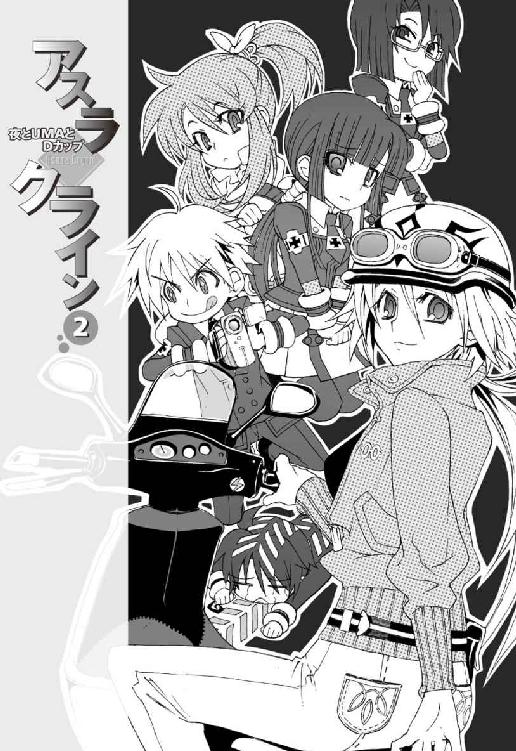
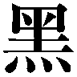
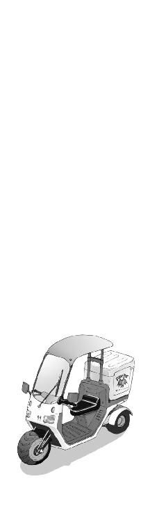
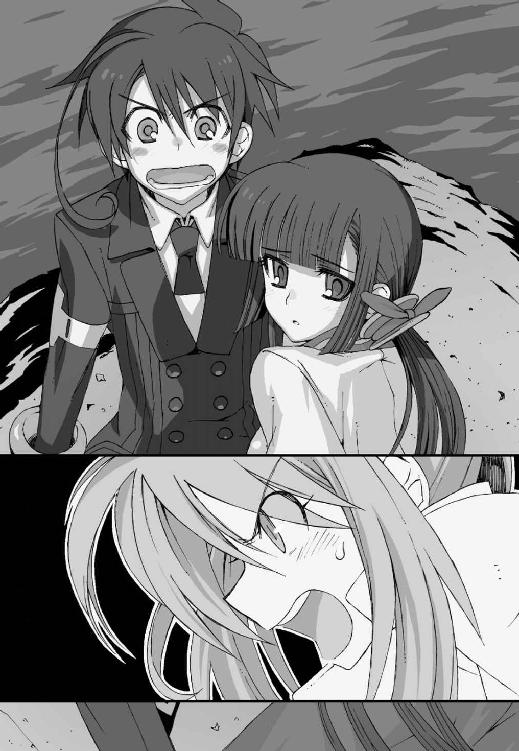

| アスラクライン（2） 夜とUMAとDカップ (電撃文庫) | |
| 三雲 岳斗 & 和狸 ナオ | |

本書（電子版）に掲載されているコンテンツ（ソフトウェア／プログラム／データ／情報を含む）の著作権およびその他の権利は、すべて株式会社アスキー・メディアワークスおよび正当な権利を有する第三者に帰属しています。
法律の定めがある場合または権利者の明示的な承諾がある場合を除き、これらのコンテンツを複製・転載、改変・編集、翻案・翻訳、放送・出版、公衆送信（送信可能化を含む）・再配信、販売・頒布、貸与等に使用することはできません。
φ プロローグ
懐かしい映像が流れていた。
映っているのは水着姿の少女。緊張した面持ちでマイクを握り、カメラに向かって語りかけている。彼女の長い黒髪が風に舞い、陽光に透けてソフトフォーカスで輝いていた。
『──地上には、未だ解明されていない多くの謎が残されています』
少女が立っていたのは、疾走するボートの舳先だった。
彼女の背後を、よく晴れた空と透明な湖面が流れていく。湖を取り囲むのは鮮やかな緑の山並み。のどかな観光地の風景である。
少女はちらりと手元のカンペに視線を落とし、
『あー......それはこの日本といえども例外ではありません。我々、洛高科學部特捜班は、存在が噂される驚異の巨大生物を追って、人跡未踏、この秘境の湖へとたどり着きました。しかしこの土地は侵入するあらゆるものを拒絶する、さまざまな危険に満ちていました』
ぎこちない口調で読み上げる。
ここで意味もなくカメラがズームイン。水着の彼女の胸の谷間が、一瞬だけアップになる。ボートの振動に合わせて画面が揺れ、観客たちが低くどよめいた。
『き......牙をむく毒蛇の洗礼！』
突然、画面がカットバック。やけにゴムっぽい質感のヘビが映し出される。
『照りつける灼熱の太陽！』
再び画面が切り替わり、うららかな晩春の陽射しが、
『湖底の闇に潜む謎の生物！』
そして湖をちょろちょろと泳ぐワカサギっぽい魚の群れ。
『しかし、立ちはだかる壁は乗り越えるために存在するのです。我々の強固な意志の前に、大自然は必ずや真実を語ってくれることでしょう──』
黒髪の少女が、決意に満ちた視線でカメラを見つめてくる。
いかにも素人っぽい編集の自主制作映画なのだが、彼女の端整な容姿だけは異常に高レベルで、全体としてはまあまあ見られる映像になっている。
不安をあおる不気味なＢＧＭが次第に音量を増していき、そしてクライマックスにさしかかったところで、少女が大きく目を見開いた。
『──ああっ......そのとき、我々の前方に、驚愕の光景がっ......』
微妙に棒読み気味の彼女のセリフを聞きながら、僕は苦笑する。
文化祭の前夜祭企画。洛高科學部の出し物は、自主制作のドキュメンタリー映画『恐怖の大追跡、秘境の湖に巨大未確認生物は実在した！』の上映だった。
撮影したのはずいぶん前のことだったし、知らない間に編集作業がなされていたので、実は僕も完成した映像を観るのは初めてである。
やがて映像が切り替わり、月夜の場面になる。
それを見て僕は硬直した。スクリーンに僕の後ろ姿が映し出されていた。
浜辺に張り出した岬の真下。波が打ち寄せる岩場の上に、僕と彼女は二人きりで座っていた。驚くほど大きな月のせいで空は明るく、それを無慈悲に映す湖面は、まるで宇宙のように暗い。
『操緒さん、のかわりに......わたしが夏目くんを守ります。だから』
背筋を伸ばす彼女がまとうのは巫女装束。長い黒髪が穏やかな風に揺れる。
彼女は僕と見つめ合い、かすかに頬を紅潮させ、時間が凍りついたような沈黙の中で告げる。
『夏目くん、となら......わたしは......』
うげ、と僕は悲鳴を漏らす。
彼女のこの言葉を僕は知っている。演技ではなく、嵩月奏が僕に告げた言葉。
どうしてこんな映像が流れている──!?
いきなり挿入された意味深な映像に、観客たちがざわめき始める。
僕は激しく動揺しながら、ふと、この言葉を聞かされたときのことを思い出す。
それはもうずいぶん昔のこと。僕たちが科學部に入部して間もない四月のことになる──
一章
誰かが言った。世の中の不幸には二種類ある、と。
つまり目に見える不幸と、そうでない不幸と。
生まれて初めて乗った飛行機が海に墜ちたり、一人暮らしを始めた直後の下宿にミサイルが落下してきたり──これらは誰の目にも明らかなタイプの不幸であろう。
それでは見えない不幸というのが、はたしてどんなものかというと、それはたとえば平凡な高校の、ありふれた放課後の教室に潜んでいたりするのだった。
「......どうぞ」
束ねたコピー用紙の四隅を揃えて、嵩月奏が差し出してくる。
僕はそれを受け取って、ホチキスでバチバチと固定する。
四月もようやく半ばを過ぎた木曜日。午後最後の授業もとっくに終わって、一年七組の教室に残っている生徒は、僕と嵩月の二人だけだった。その日たまたま日直だった僕たちは、担任の柱谷教師から、クラスで使うパンフレット作りを任されていたのだ。
パンフレットというのは、合宿のしおり、というやつのことである。
洛高の新入生は毎年この時期、オリエンテーション合宿を行うことになっている。
来週の月曜日から一泊二日。レクリエーションやら球技やらでクラスの親睦を深めましょう、といった感じの、あまり深い意味はないイベントだ。行き先は隣県の土琵湖畔。そのオリ合宿の日程やら注意事項やらが書かれたしおりを、クラスの人数分作らされていた、というわけだ。
放課後居残りでパンフ作り。
面倒くさいといえば面倒くさいが、それだけなら不幸というほどのことでもない。なにしろ嵩月は美人なので、彼女と一緒ならむしろ積極的に居残りたいと思っている男子のほうが多いはずだ。
「嵩月、こっちは終わったから手伝うよ。半分貸して」
「あー......」
自分の机の上を見下ろして、嵩月はちょっと困った顔をした。積み上げた用紙に指をかけて、一枚一枚めくり始める。どうやらきっちり枚数を数えて、正確に半分に分けるつもりらしい。
生真面目というか律儀というか。嵩月は悪いヤツではないのだが、要領が悪くて少しトロい。
だからといって、それにつき合わされているのが不幸というほどのことでもない。むしろ彼女のそこがイイという男子は大勢いる。
そんなの適当でいいよ、と僕は、コピー用紙を数え続ける嵩月のほうに手を伸ばした。
積み上げられていた用紙の山が崩れて、数枚のプリントが隣の机にふわりとこぼれた。
僕と嵩月はほとんど同時に、それを拾い上げようとした。
最初にプリントをつまんだのは僕のほうだ。一瞬遅れて、嵩月の細い指が僕の手に触れる。
「あっ」
嵩月が細い声を漏らして硬直した。
透けるように白い彼女の頬が、見る間に赤く染まっていく。いやそんな、大げさな。小学生じゃないんだから、手と手が触れ合ったぐらいで騒ぐほどのことは──たしかにちょっとびっくりしたけど。
などと僕が余裕を見せていられたのは、ほんの一秒ほどのことだった。
「うわ......熱っち！」
灼けたフライパンを握ってしまったような激痛に襲われて、僕はたまらず悲鳴を上げた。脊髄反射でどうにか嵩月の指を振りほどく。彼女の指が触れていた場所が、うっすらと蒸気を噴き上げている。硬直したままの嵩月の周囲から、淡い陽炎がゆらめいていた。焦げ臭い香りが鼻をつく。
「た、嵩月！ 焦げてる焦げてる！」
「あっ......ああっ！」
嵩月が握っていたコピー用紙の分厚い束が、一瞬で燃え上がって消し炭に変わっていた。フラッシュペーパーを使った手品を見ているようだった。
動揺する嵩月の指先から、今もちらちらと青白い炎が噴き出している。彼女の体温が異常なまでに上昇しているのだ。
嵩月の全身を流れている血液は、彼女の感情が昂ったりすると、摂氏数千度の地獄の業火に変質してしまうらしい。僕は、撃ちこまれた拳銃の弾丸を、彼女が一瞬で熔かしてしまう光景を目撃したことがある。もちろん普通の人間に真似できることではない。
嵩月奏の正体は悪魔。彼女の言葉によれば、由緒正しい悪魔の一族の末裔なのだそうだ。
「あー......」
嵩月は途方に暮れた表情で、燃え尽きた合宿のしおりを見つめていた。泣き出す直前の子どものようだ。悪いヤツではないんだよなあ、と思う。ちょっと危険だが。美人だし。
「大丈夫だよ、嵩月。原稿は余分にコピーしてあるはずだから」
ため息混じりに僕は告げる。足りなくなったら、最悪またコピーしてくれば済むことだ。
しかし嵩月は不安げに、上目遣いで僕を見つめ、
「......夏目くん、は？」
一瞬なにを言われたのかわからなかった。あ、火傷のことか。
「たいしたことない。すぐ治るよ」
僕がひらひらと手を振ってみせると、嵩月はほっとしたように顔を上げた。潤んだ瞳が、僕を真っ直ぐに見つめてくる。さすがに人間離れした可愛らしさである。
だがしかし、そんな彼女を見て、僕はあやうく悲鳴を上げそうになる。
嵩月は僕を見つめているだけ。だが、彼女の首筋のあたりから、なにやら不気味なものが突き出してきたのだ。手だ。
うっすらと透けた半透明の白い腕が、ずぶずぶと嵩月の身体を突き抜けて生えてくる。
まるで生き埋めにされた罪人のように、時折その指先が痙攣する。
僕を手招くように。あるいは呪うように。
放課後の教室。夕陽を浴びて赤く染まった黒髪の美少女。深緑色に輝く彼女の左目。そして彼女の首筋から突き出した白い腕。ホラー映画を観ているような光景だ。
僕はうんざりと首を振る。
「──操緒」
低い声で名前を呼ぶと、ぴくり、と白い腕が反応した。
嵩月は、僕の言葉でようやく自分の首筋から生えた腕の存在に気づいたらしい。左右色違いの瞳を呆然と見開いて硬直している。まあ、それは驚くよな普通。
やがて嵩月の肩越しにゆっくりと、もう一人の少女が顔を出した。
全体的に色素の薄い、やや幼い印象の美少女だった。嵩月と二人で並んでいても見劣りしない。負けてない。しかし二人の雰囲気は正反対だ。
嵩月は露骨に怯えていて、色素の薄い少女ははっきり怒っている。彼女を見上げて、僕は深く息を吐いた。
「邪魔するなよ、操緒。日直の仕事で忙しいんだから」
『へえ......日直の仕事？ ふーん』
あからさまに嫌味な口調で、白い腕の少女が言う。
形のいい眉を吊り上げたまま、少女は音もなく空中に浮かび上がった。うっすらと透きとおった彼女の髪が、重力を無視してふわりと広がる。嵩月の身体をすり抜けて、彼女は僕の頭上で静止する。もちろん人間に真似できる動きではない。誰がどう見ても彼女は幽霊だった。
『その割にはずいぶんいい雰囲気だったよね。二人きりでっ』
どこがいい雰囲気なんだよ、と僕は思う。
嵩月は僕の前だとガチガチに緊張してほとんど喋ってくれないし、おまけにちょっと手が触れ合っただけで、この火傷だ。
しかし機嫌を損ねている幽霊の少女に、なにを言っても無駄だということも僕にはよくわかっていた。なにしろ長いつき合いなのだ。
幽霊の名前は、操緒という。
幼稚園のころから一緒にいた、いわゆる幼なじみというやつだ。
しかし今からおよそ三年前、僕たちの乗った飛行機は海に墜ち、僕はあやうく死にかけて、操緒は行方不明になった。
それだけでもかなりの不幸だと思うのだが、その夜から操緒は幽霊となって僕の前に現れ、そしてそのまま僕に取り憑いている。もうなにがなんだかわからない。
幼なじみの幽霊に取り憑かれ、高校に入学して知り合った最初のクラスメイトが、悪魔。これはもう相当な不幸といえるのではないかと思う。
しかも嵩月は操緒のことを極度に怖れており、操緒は操緒で嵩月に勝手な対抗意識を燃やしている。しおり作りを邪魔しにきたのも、たぶんそれが理由だろう。
はっきり言ってつき合っていられない。胃が痛い。さっさと終わらせてこの場を離れようと、僕は燃え残ったコピー用紙を集めて、しおり作りを再開した。その直後、
「痛て」
指先に軽い痛みを感じて僕は顔をしかめた。紙の端で、指を切ってしまったらしい。目に見えないほどの細い傷口から、じわじわとあふれてきた血が丸い水滴になって流れ落ちる。
『わ、すごい切れ味だね』
ふわふわと舞い降りてきた操緒が目を丸くして言う。そこは感心するところじゃないと思う。
「あっ......あの、これっ」
一方の嵩月はこっちが驚くくらい動揺して、あたふたとポケットから絆創膏を取り出した。普段はトロい印象の嵩月だが、こんなときだけは別人のように反応が素早い。
だらだら血を流し続けている傷口を見て、そのままでは貼れないと気づいたらしく、嵩月はいきなり僕の手をつかむと、傷口に自分の唇を寄せてペロリと舐めた。
間近で見た嵩月の端整な横顔と、指先を這う彼女の舌の感触に、僕の頭の中は真っ白になる。嵩月は自覚してないようだが、実はものすごい状況なのではないかと思う。
そして僕以上の驚愕の表情を浮かべていたのは、操緒だった。
半笑いのような表情で頬を引きつらせたまま、半透明の肩を小刻みに激しく震わせている。過去の経験からいって、これはよくない兆候だった。よくない。そう、なにか非常によくない。
やがて操緒が大きく息を吸いこむような仕草をした。
ぺたぺたと絆創膏を貼りつける嵩月と、身動きできずにいる僕を、操緒は空中から怒りに燃える眼差しで睨みつけ、叫ぶ。
『智春──────っ！』
こうして僕の不幸は、また今日も新たに幕を開ける。
＊
一年七組の担任は、柱谷という日本史の教師だった。
年齢はたぶん二十代の後半ぐらい。趣味は骨董品集め。あまり冴えない印象の優男で、いつも曖昧に笑ったような顔をしている。とにかく頼りない、というのが大多数のクラスメイトに共通した意見だったが、たぶん悪い人間ではないと思う。
「やあ、夏目くん。嵩月さんも」
放課後の職員室をわざわざ訪ねてくる生徒は、あまり多くないらしい。合宿のしおりを運んできた僕たちにすぐに気づいて、柱谷は顔を上げた。
アルバムの整理中だったのか、彼の机の上には、古い日付の写真が何枚か広げられていた。写っているのは柱谷と、彼を取り囲む洛高の生徒たちだ。背景は湖。おそらく昔のオリ合宿のときの写真なのだろう。柱谷が机の上を片づけるのを待って、僕は運んできた合宿パンフを彼に渡す。
「合宿のしおりと、あとこれ学級日誌です。教室の戸締まりも終わりました」
「ああ。はい、お疲れさま」
受け取った学級日誌を確認して、柱谷は少し怪訝そうに僕たちを見上げた。気遣うような表情を浮かべ、
「二人ともずいぶんやつれて見えるけど、大丈夫かい？ 日直の二人だけにしおり作りを任せちゃったのは悪かったかな？」
「いえ......そういうわけでもないんですけど」
僕は虚ろな眼差しで、自分の右斜め上空を見た。ジト目で僕たちを睨んでいた操緒は、僕の視線を避けてそっぽを向く。嵩月は不安げに僕の制服の裾を握ったまま、びくびくと細い肩を震わせている。彼女のそういう何気ない行動が操緒の神経を逆撫でするのだが──まさか、わかっててやっているのではないだろうな。
普通の人間である柱谷には、操緒のことが見えていない。落ち着きのない僕たちの態度に、彼は軽く困惑したようだったが、
「じゃあ、二人とも、気をつけて帰ってね」
特に問題ないと判断したのか、小学生を送り出すような口調でそう言って僕たちを解放した。
整理中のアルバムに視線を落として、ため息をつく彼の後ろ姿が印象的だった。オリ合宿になにかつらい思い出でもあるのかもしれない。教師もいろいろと大変だ。
窓の外には、金色の夕焼けが広がっている。まだ明るいような、すでに薄暗いような微妙な時間帯だ。バス通学の嵩月を、せめてバス停まで送っていったほうがいいのかな、などと、背後に浮かぶ操緒をちらちらと見上げながら考えていると、
「おい、そこの二人」
誰かが気怠げな声で僕たちを背後から呼び止めた。
よれよれの白衣を着た、無精髭の男性教師だった。科學部顧問の市原だ。
長いこと喫煙室にこもっていたらしく、離れていても安タバコのヤニ臭い臭いがただよってくる。彼が握っている紙コップの中身は、ドロドロの泥水みたいなブラックコーヒー。それをこわごわとのぞきこんだ操緒が、『早死にしそう』と顔をしかめてつぶやいた。
幽霊にまで心配されたらおしまいだと思う。
「ちょうどよかった。黒崎に頼まれて校内放送で呼び出そうと思ってたんだ。化学準備室まで来てくれってさ。大至急だと」
「部室に？」
僕は嵩月と顔を見合わせた。入学早々、なし崩し的に入部させられてしまった科學部だが、これまでのところ特に活動らしい活動はしていない。ミーティングといいながら花見に出かけたり、歓迎会という名目で焼き肉食べ放題に挑戦したり、その程度だ。
「今日は部活ない日だって聞いてたんですけど」
「ああ。予定が変わったらしい。客が来てるんだと」
他人事のようにそう言って、市原はコーヒーをずるずるとすすった。彼もそれ以上の詳しい情報は知らないらしい。
僕は再び、きょとんとした表情の嵩月と顔を見合わせた。
黒崎朱浬からの突然の呼び出し。
心あたりのない来客。
真面目くさった表情で腕を組み、もっともらしい口調で操緒がつぶやく。
『んんっ......なんかヤな感じー』
まったく同感だった。
＊
結論から言えば、操緒の予感はあたった。
「うわっ......なんであなたたちがいるんです!?」
科學部の部室を兼ねている化学準備室。歪んだ作業机の奥。
安物のパイプ椅子には不似合いな、優雅な仕草で脚を組んでいたのは、白いロングコートをまとう気障ったらしい男子生徒だった。
彼の隣では小柄な少女が、ひっそりと宙に浮かんでいる。
洛芦和高校に三個存在する公認生徒会のひとつ、第一生徒会会長の佐伯玲士郎と、彼に取り憑いている幽霊の哀音である。
「うー......」
止める間もなく、嵩月が、細いうなり声を漏らして身構えた。
『智春は下がってて！』
操緒が、呆然と立ち尽くす僕を庇うように前に出る。
彼女たちが警戒するのも当然だった。ほんの十日ほど前、佐伯玲士郎と、彼が操る機巧魔神《翡翠》によって、僕と嵩月はあやうく殺されかけたのだ。
操緒に至っては、いったん消滅させられてしまっている。
それなりに仕返しを済ませたはずの今でも、操緒はそのときのことを根に持っているらしく、いつになく好戦的な態度で哀音を睨みつけている。幽霊だから、なのかどうかは知らないが、意外と執念深いのだ。が、
一触即発の状態に陥った嵩月たちを、含み笑いのようなおっとりした声が制止した。
「はーい、ストップ。そこまでよ、二人とも」
暗黒面フォースの使い手みたいな漆黒のコートを翻して、すらりと背の高い女子生徒が奥の給湯室から現れる。科學部部長代理の黒崎朱浬だ。
黒ずくめの彼女の服装を見て、佐伯兄は不満げに鼻を鳴らした。しかし朱浬は気にした様子もなく、美人ＯＬ風のメガネをちょっとずらして、お姉さんぶった表情で笑う。
「今日のところは彼らは敵じゃないわ。ただのお客だから、心配しなくても大丈夫よ」
「客って......」
僕は驚いて佐伯兄を見た。白コートの生徒会長は曖昧な微笑を浮かべて肩をすくめ、哀音は無言で小さく頭を下げる。今日のところは敵でないというのは、どうやら嘘ではないらしい。
朱浬は、困った顔で身構えたまま立ち尽くす嵩月に微笑みかけ、
「奏っちゃん、悪いけどコーヒー淹れてくれると嬉しいな」
嵩月は救われたような表情を浮かべて、いそいそと電気ポットのほうへと向かった。コーヒー豆もドリッパーも市原の私物なのだが、最近ではすっかり科學部の備品と化している。
「玲士郎も飲む？ インスタントのブラックコーヒーだけど」
「遠慮しておこう。僕は先ほど生徒会室で、気高く白いロイヤルミルクティーを賞味してきたばかりだからね」
佐伯兄は妙に偉そうな口調でそう言った。なにそれ、と小声でつぶやいたのは、いまだに怒りが収まらない様子の操緒。僕にだけ聞こえるようにこっそりと顔を寄せ、
『そんな白い飲み物が好きならバリウムでも飲んでればいいのに』
なにもそこまで言わなくても。そういえば前に生徒会室に呼び出されたときにも、佐伯兄は紅茶を飲んでいたのだったか。そんなこだわりがあるとは知らなかった。
「......どうぞ」
嵩月が僕のぶんのコーヒーカップを作業机に置いてしまったせいで、僕は自動的に佐伯兄と向かい合って座る形になる。
嵩月本人は空になったトレイを抱いたまま、専属メイドのような姿勢で壁際に待機。操緒はむっつりと押し黙ったまま空中を漂っており、哀音はいつもと同じ彫像のような無表情で動かない。朱浬はマイペースでのんびりとコーヒーの香りを嗅いでいる。
困った。これではポジション的に、僕が佐伯兄の接待をする役目になってしまうではないか。
もちろん僕には彼と話し合うことなどなにもない。共通の話題といえば、うちのクラスにいる彼の妹のことぐらいしか思いつかないが、佐伯兄だって妹の噂話をするためにここに来たわけではないだろう。
そのまま誰もなにも言わず、いい加減、気詰まりな沈黙が流れ始めたころ、ようやく主賓の佐伯兄が口を開いた。
「さて」
彼が取り出したのは、純白のノートパソコンだった。『備品、神聖防衛隊』と書かれたシールが貼ってある。なにやら大げさな名前だが、それが彼ら第一生徒会の正式名称なのである。
「まずはなぜ僕がここにいるのかを説明させてもらおう。これを見てくれたまえ」
べつに聞きたくない、と言ってもやはりダメなんだろうな。
液晶ディスプレイに映し出されたのは数枚の風景写真。デジカメで撮影されたものらしい。
風景といっても、それは人間が写っていないというだけの意味で、映し出された画像は決して美しいものではなかった。自動車の残骸。荒れ果てたログハウスの室内。中身の散らばったボストンバッグ。倒れた物干し竿にはなぜか女物の水着がかかったままだった。
撮影された時間や場所はバラバラだが、ひとつだけ共通していることがある。写真に写っている景色はすべて水辺。どこか湖の近くの風景らしい。
「なんですか、これ？」
「なんだと思う？」
佐伯兄に訊き返されて、僕は言葉に詰まった。なんだこれ。かわりに操緒が口を開く。
『んー......事故現場の写真、とか？』
「近い」
佐伯兄がうなずいた。僕に哀音が見えるのと同様に、僕と同じ幽霊憑きである彼には操緒の存在が認識できるのだ。
「これらの写真が撮影されたのはすべて、ある存在が目撃された場所だ。壊れた車や荒らされた室内は、その存在が残した痕跡だよ」
「存在って、なんです？」
やたらに佐伯兄の説明が回りくどいのは、おそらくなにか理由があるのだろうな、と思う。
そんなふうに説明しなければ理解しがたい存在なのか。あるいは、そいつの名前を出すことに心理的抵抗があるモノなのか。どっちに転んでもあまり楽しそうな話ではない。
佐伯兄は無言のままパソコンを操作し、新たな写真を映しだした。
ずいぶん写りの悪い写真だった。
携帯電話のカメラかなにかで撮影したのだろう。ほかの写真に比べると、はっきりと画像の粒子が荒い。撮影時刻は夜。しかも霧が出ているらしく、まともな背景の輪郭すらわからない。
かろうじて判別できるのは、それが湖の水面を写したものであるということ。
そして、その水面に浮かぶ黒い影。
魚のようにも見えるが、それにしてはトカゲやワニに似た頭の形が奇妙だ。細長い胴体の先端も、尾ビレというよりは尻尾に見える。しかし背中には背ビレのような突起があって、それは一般的な爬虫類には存在しないものだった。結論からいえば、なんだかよくわからないモノ、ということになる。
「......めずらしい種類の熱帯魚かなんかですか？」
ミシシッピ川の流域には、アリゲーターガーなどと呼ばれる凶暴な肉食魚が棲んでいると聞いたことがある。古代魚の一種で淡水生だが、全長三メートル近くまで成長するとか。
しかし普通の熱帯魚は、車を潰したりはしないと思う。
「我が神聖防衛隊の誇る有能なスタッフが、撮影時の状況や周囲の地形を基に、この黒い影の大きさを計算してある」
佐伯兄は気障っちい仕草で前髪をかきあげ、傍らに浮かぶ哀音に視線を向けた。
白いワンピースの幽霊の少女は、透明な氷河に似た静かな声で、
『被写体の全長は八千九百ミリメートルと推定。ただし水上部分のみ、許容誤差プラスマイナス十六パーセント』
「八千九百ミリって......」
約九メートルということか。しかも水面に出ている部分だけで。それって、
「──ほとんど怪獣じゃないですか!?」
「いや......そうでもないよ」
のんびりとした調子で口を挟んだのは朱浬だった。
「ニシキヘビなら八メートル級の個体はめずらしくないっていうし。オーストラリアでは全長八・六メートル、推定体重二トンのクロコダイルが捕獲された例もあったかなー」
気安く言ってくれるが、ニシキヘビもクロコダイルも獰猛な、人喰いの爬虫類である。そんなものが日本にいたら怪獣と大差ないと思う。そりゃ朱浬は、全身凶器の改造人間だからべつにどうってことないんだろうけど──
「............」
ちょっと待った。なにかが引っかかる。
科學部の部長代理であり、黒科学者を自称する朱浬が、未確認の巨大生物などという怪しいモノに興味を惹かれるのはよくわかる。
だがしかし、朱浬と対立しているはずの佐伯兄が、どうしてわざわざそんな情報を科學部に持ちこんでくるのか。彼らの目的はいったいなんだ。
「──我々からの要求は非常にシンプルだ」
僕の心の中をのぞいていたような絶妙のタイミングで、佐伯兄が宣言した。
「洛高第一生徒会会長として、第三生徒会所属科學部に正式に依頼する。明日より起算して三日以内に、この未確認生物を捕獲あるいは駆除してくれたまえ」
僕はただ絶句して、クソ真面目な表情の佐伯兄を見返した。
未確認生物。捕獲。駆除。
は？
＊
嵩月が困ったような表情で僕を見ている。操緒は完全にあきれ顔だ。なんにせよ彼女たちに交渉事が務まるとは思っていない。頼みの朱浬が他人事のようにコーヒーをすすっているので、僕は仕方なく質問のために手を挙げた。
「すみません......なんか話がよくわからなかったんですけど」
「ふむ。それほど難しい要求ではないと思ったが。きみの言語処理能力には若干の問題があるようだな、夏目智春」
いや、あんたにだけはそんなこと言われたくない。
「そうじゃなくて、依頼内容はよくわかったんですけど......なんで僕たちがそんなことをしなきゃならんのですか？ そういうのは保健所の人たちの仕事なのでは......？」
「保健所の職員に、あの未確認生物の捕獲が可能だと思うかね？」
「......うーん......どうでしょう？」
ヘタすれば全長十メートルを超える巨大生物。正体がわからないのでなんともいえないが、そりゃまあ野犬や野良猫を捕まえるのと同じようにはいかないだろう。
「でも、ほんとにワニとかだったら、早めに警察なんかに知らせたほうがいいんじゃ......？」
「ただのワニならば、その意見は一考に値する。だがもしも単なる爬虫類などではなかったとしたらどうする？ 警察の手には負えないような怪物だったとしたら？」
「怪物って......」
そんな馬鹿な、と言いかけて、僕は息を止めた。
きょとんとした表情の操緒や嵩月を横目で見て、眩暈のような感覚に襲われる。幽霊や悪魔が存在するのだから、怪物が出てきてもおかしくはない、のだろうなやはり。
「超自然的な化け物である可能性が完全に否定できない以上、一般市民の目に触れさせるべきではない、というのが、我が神聖防衛隊の後援者である法王庁の意向だ。それはきみたちの王立科学狂会としても同じ立場ではないのかな」
「きみたちって......」
うんうん、とうなずいている朱浬を見て僕はため息をつく。いちおう僕はどちらかといえば、その一般市民の仲間のつもりでいたのだが。少なくともそんな怪しげな名前の団体に入会した記憶はない。
「だからってなんで科學部が？」
「きみたちに依頼する理由は三つある」
そんなにあるのか、と驚く僕に、佐伯兄は人差し指を突きつけ、
「ひとつは能力的な問題だ。今回のような事件には、きみたちが適任だと判断した」
「............」
どうせそんなことだと思った。
地獄の業火を操る悪魔少女に、ミサイル内蔵の全身凶器女子高生。そして機巧魔神の演操者と副葬処女──戦力的にどうなのかは知らないが、非常識さでは怪物にも負けていない。
「あの......でもそういうのは、第一生徒会のほうが向いているのでは？」
ええかっこしいな佐伯兄の普段の言動からして、怪物退治のような派手な仕事はいかにも好きそうだ。しかし佐伯兄は、わざとらしく苦悩の表情を浮かべ、
「たしかに我々の手で処理したいのは山々なのだがね......」
やっぱりやる気はあったのか。
「残念ながら、現在の神聖防衛隊の戦力では、校内の治安維持だけで手一杯なのだよ。先日の一件で執行部はいまだに多数の負傷者を抱えているし、僕の翡翠は今も修理中だ」
「はあ......」
そんなことを言われても僕には同情する義理はない。もともと先に喧嘩を売ってきたのは彼ら神聖防衛隊のほうなのだ。とはいえ、佐伯兄の機巧魔神を僕と操緒の《鐵》が破壊したのは事実で、その責任を追及されるとちょっと弱い。
『そういえば修理って......直るのアレ？』
操緒が小声で僕に訊いてくる。もっともな質問だ。いちおう正当防衛だったとはいえ、かなり派手にぶっ壊してしまったし。そもそも、あんなどこともしれない空間から出てくるモノを、誰がどうやって修理するのだ？
「人形師に修理に出している。あと一週間もすれば調整を終えて戻ってくるはずだ」
「......人形師？」
訊き返す僕に、佐伯兄は素っ気なくうなずき、
「きみも知っているのではなかったか？ 北有紗の潮泉という老人だ」
「え？」
僕は思わず壁際の嵩月を振り返った。
忘れもしない。北有紗の潮泉老人といえば、嵩月の親戚のあの渦巻き爺さんのことか？
嵩月にはなにやら思いあたるフシがあったらしく、あー、と曖昧な表情でうなずいている。そういうこと知っていたのなら教えてくれよ。
部外者にしては妙に事情に通じていると思ったが、まさかあの爺さんにそんな特技があるとは想像していなかった。さすがに金持ちだけあって芸が多い。
「とにかく現時点で、手の空いている機巧魔神の演操者はきみだけなのだ、夏目智春。それがきみたちに依頼するふたつ目の理由だ」
「それが理由だって言われても......」
なんという迷惑な。僕だって好きで演操者とやらになったわけではないというのに。
そもそも僕が許容できるオカルト的な存在は、幼なじみの幽霊と科學部の連中だけで十分に間に合っている。この上、そんな怪獣なんかの相手をしている余裕はないのだ。
とはいえ、全長十メートルの巨大ワニなんかと遭遇したら、機巧魔神でも持ち出さなければ手に負えないという理屈もわかる。わかるのだが、しかし、そんな非常識な生物がいるというのはほんとうなのか。どうにも疑わしい。嘘くさい。普通信じるか、そんなもの？
「きみの言いたいことはわかる」
僕の疑惑の視線に気づいた佐伯兄が、妙に余裕ぶった態度でうなずいた。
「我々も未確認生物の実在を確信しているわけではない。この写真にしても、単に流木などの漂流物が写っているという可能性や、巧妙な偽造であるという疑惑も否定できない。試算では、未確認生物が実在する確率は──」
『十七パーセント。ただし、なんらかの人為的な介入があったと仮定した場合には五十五パーセントまで上昇』
佐伯兄の言葉を引き継いで、哀音が言った。相変わらず便利な子だ。
「えーと......人為的な介入というのは......？」
『誰かが飼っていたペットを逃がしたとか、そういうことなんでしょ？』
僕の疑問に、操緒が答える。ああ、なるほど。ペットのワニが育ちすぎて面倒を見切れなくなってしまったとか。ヤバい。本当にありそうな気がしてきた。
「どこかの研究室から逃げ出した実験動物、ということも考えられる。というわけで、それらの可能性も含めてきみたちに調査を依頼したいのだ」
結局そこに話が戻るのか。
「それからもうひとつ──夏目智春、きみには個人的にこの依頼を引き受けなければならない理由がある」
「は？」
なんだそれ。やめてくれ。
佐伯兄はパソコンの画面を切り替え、画面一杯の地図画像を表示した。
湖と、その周辺の地形図である。画像のあちこちで点滅している×印のアイコンが、未確認生物の出現箇所なのだろう。そんなものを見せられても、なんの感想も思いつかないが──
「ああっ」
と、つぶやいたのは嵩月だった。突然のことだったので、僕たちは全員で彼女を凝視する。
ただでさえ人見知りの嵩月が、そんな状況で自ら口を開くはずもなく、彼女は耳まで顔を紅潮させて、なんでもありません、と勢いよく首を振っただけだった。
いや、なんでもなくはないだろう。言ってみなさい。怒らないから。
「あの......これ」
嵩月がおそるおそる鞄から取り出したのは、うっすらと焦げ目のついたコピー用紙だった。オリ合宿のしおりを作った余りである。
そのうちの一枚に目的地周辺の略地図が印刷されており、そこに描かれた湖の地形は、佐伯兄のパソコン画面に表示されているものとよく似ていた。
いや、似ているどころかふたつはまったく同じものだ。
地図の中央に描かれている地名は──土琵湖。
「あの......もしかして、この未確認生物とやらが目撃された場所って......」
おそるおそる質問する僕に、佐伯兄はうなずき返し、
「土琵湖湖畔。きみたち新入生のオリ合宿の目的地ではなかったかな」
うげ、と漏れそうになった声を僕はかろうじて呑みこんだ。
なんということだ。よりにもよって合宿の目的地に、未確認の巨大生物。道理で生徒会が騒いでいるわけだ。
洛高は、僕たち地元民にとっては平凡な私立高校に過ぎないが、実は知る人ぞ知る神学系の名門なのである。そんな名門校の新入生が、得体の知れない怪物なんかに襲われてしまったら、それこそ校史に残る不祥事である。とにかく学校関係者が死ぬほど恥ずかしい思いをするのは間違いない。
佐伯兄は、めずらしく疲れたように息を吐き、
「このような危険な場所で学校行事を行うのは不本意だが、だからといって、怪物が出るかもしれない、という理由で合宿を中止するわけにもいかない」
そりゃそうだ。
とはいえ、合宿先で未確認生物なんかに遭いたくないのは、僕も同じである。同級生たちの前で機巧魔神なんかを喚び出す事態になるのだけは、なにがあっても絶対に避けたい。
操緒の前で口にしたことは一度もないが、幽霊憑きだと噂されながらも僕が人並みの学校生活を送れていたのは、憑いている幽霊が美少女である、という事実とおそらく無関係ではない。
美人の幽霊に憑かれていてうらやましいと、冗談交じりで口にする者も多かった。
だがしかし、機巧魔神。
悪魔を滅ぼすために造られた、人造の機械の悪魔。
あんなものが僕の影をぐりぐりとこじ開けて出てくるところを見て、うらやましいと思う高校生がいたなら、そいつは間違いなく変態である。
幽霊憑きというだけでも友達をだいぶ減らしているのに、あんなモノまで飼っていることがバレたら、まともな高校生活を送るのはほとんど絶望的だ。僕が機巧魔神を喚び出さなければ済むことなのだけど、しかしたとえば目の前でクラスメイトが怪物に襲われて、それを見殺しにできるかというと──それもけっこうきつそうだ。
『あ......だから期限は三日間ってこと？』
操緒が、胸の前で手を合わせて言う。どういう意味だ？
『──オリ合宿が始まる前に未確認生物を退治しちゃえば、問題ないってことじゃないの？』
今が木曜日の放課後で、合宿は来週の月曜日から一泊二日。
たしかに時間的な猶予はある。
しかし週末の三日間で、実在するかどうかもわからない未確認生物を捕獲または駆除。
それってまともな学術調査隊でも厳しいのではないだろうか。ましてや科學部は、しょせん高校のクラブ活動に過ぎないわけで。
「三日間って言われても、明日は普通に授業だし」
僕が弱々しく反論すると、
「問題ない。その件に関しては出席扱いになるよう取り計らおう」
佐伯兄がやたら偉そうな口調で言った。ありがたいような迷惑なような。
「あ、それに土日はバイトの予定が」
「問題ない。きみの代理として、我が神聖防衛隊から屈強の隊員二名を大原酒店に派遣しよう。仕事に不慣れなことを差し引いても、きみと同等以上に働くことを約束する」
「いや、あの、そういう問題じゃなくて」
「報酬についても問題ない。未確認生物の調査費用として科學部に特別予算を組んだ。今回は特別に危険手当も支払おう」
危険手当がつくということは、やはり危険だと認めているわけか。気が重くなってきた。前に殺されかけたから、というわけではないが、どうもこの白フェチ生徒会長は信用できない。
「あの......朱浬さんは？ それでいいんですか？」
一縷の望みを託して部長代理に話を振ってみる。
黒ずくめの上級生は、ぞっとするほど綺麗な顔で柔らかく微笑み、
「いいよ」
あっさりとそう言った。
「そろそろ科學部の強化合宿もやろうと思ってたところだし、玲士郎のトコが費用持ってくれるっていうんだから大歓迎。ドビュッシーにはあたしも興味あったしね」
『......ドビュッシーって？』
せっかく聞こえなかったフリをしようと思っていたのに、わざわざ操緒が訊き返す。朱浬は、うふふふと微笑んで、
「ネス湖の怪獣がネッシーなんだから、土琵湖の怪獣はドビュッシーでしょ」
どうせそんなことだと思った。
「でも、調査の方法や未確認生物の扱いは、科學部のやり方で決めさせてもらうからね。第一生徒会の指図は受けないわよ」
「......わかっている。ただし報告だけは怠らないでもらいたい。手も抜くなよ。一般生徒に被害が出た場合は、きみたちにも責任を負ってもらうからな」
「はいはい」
苦々しげにうなずく佐伯兄に、朱浬はおっとりと笑いかけ、
「それよりワゴン車を一台貸してもらえないかな。市原先生のＡ３に、うちの部員が全員だとちょっとキツいのよ」
「問題ない。取り計らおう」
なにやら僕の意志と無関係なところで、部の方針が固まりつつある様子である。
学校をサボって未確認生物の調査。言葉にすると楽しそうだが、それは幽霊や悪魔に縁のない普通人の感覚である。この科學部のメンバーで怪物の生息地に踏みこんで、何事もなく帰ってこられるとはとても思えない。だからといって、生徒会会長と部長代理の決定に僕一人で逆らえるかといえば──考えるまでもない。無理だ。
『いいじゃない、楽しそうだよ。怪獣退治』
なにもない空間にちょこんと腰掛けて、操緒が僕の顔をのぞきこむ。そりゃ、オマエの性格なら絶対そう言うだろうけど。
しかし生身の人間である僕としては、未確認生物の捜索なんかよりも退屈な授業やバイトのほうが断然魅力的だ。少なくとも命の危険がないからな。
『だいじょうぶ、操緒がついているよ』
無責任な口調でそう言って操緒が笑う。説得力ゼロのこいつの言葉に騙されて、これまで何度死にそうな目に遭ったことか。
操緒を無視して顔を背けると、壁際で立ち尽くす嵩月と目が合った。
そういえば嵩月は合宿のことをどう思っているのだろう。
彼女の性格なら、操緒と違って怪獣退治なんかに興味を示すとは思えないが。
「嵩月も行くの？」
一緒に反対してくれないだろうか、という期待をこめて訊いてみる。
しかし嵩月は困ったように目を伏せたあと、ようやく聞き取れるくらいの小さな声で、
「......夏目くんが一緒なら」
そのひとことで化学準備室の空気が凍りついた。
操緒がむっつりと膨れて黙りこむ。作業机の上で腕を組む佐伯兄が、なぜかすごい目つきで僕のことを睨んでいた。もじもじと下を向いた嵩月の頭から、うっすらと白い蒸気が立ち上っている。
突然の息苦しい緊張感に僕は凍りつき、そのとき朱浬が、一触即発の雰囲気など微塵も感じさせない柔らかな笑顔で、
「それじゃあ、みんな明日の午前七時に正門の前に集合ね」
「............」
そういうことになった。
＊
トイレに行った。
科學部のミーティングがうやむやのうちに終了し、疲れた身体を引きずって下宿に帰ろうと思ったとき、
「ちょっとつき合ってくれ」
と、佐伯兄に無理やり連れこまれたのだ。
掃除を終えたばかりの洗剤の臭いが残るトイレで、僕と佐伯兄は二人並んで用を足す。
水の流れる音だけがタイルに反響する。
佐伯兄はさっきからひとことも喋らず、不機嫌な沈黙を保っている。
なにやらものすごく気まずかった。まさかこの男と連れションすることになるとは。
「あの......用事がないのなら、もう帰ってもいいですか？」
洗面台で手を洗いながら、僕は仕方なく口を開く。
佐伯兄は純白のレースハンカチで濡れた手をふきつつ、険しい表情で、
「待ちたまえ。きみにはまだ訊きたいことがある」
「え......話ならべつにこんな場所でしなくても......」
「ここならば、きみの射影体や黒崎朱浬に話を聞かれる心配がないだろう」
ああ、なるほど。そういうことか。操緒も、さすがに男子トイレまでは入ってこないものな。
しかし僕には、こんなところで男と内緒話をする趣味はないのだが、
「先ほどのきみたちの態度を見て、僕は非常に気になったよ」
「はあ......なんでしょう？」
気になったと言われても。さっきは、主にあんたが一方的に要求を押しつけていただけだと思ったのだけど。
「嵩月奏のことだ」
「は？」
「単刀直入に訊こう。きみと嵩月奏はどういう関係だ？」
「嵩月は同級生ですけど？ ええと、つまりクラスが同じで......」
真面目に答えたつもりだったが、はぐらかそうとしたと思われたのか、佐伯兄の表情が目に見えて不機嫌なものになる。
「そういうことを訊いているわけではない」
「はあ」
しかし嵩月との関係と言われて、ほかになんと答えればいいのか。しいていえば所属しているクラブが同じで、彼女の家庭の事情を知っているというくらいで。
困惑の表情を浮かべる僕に、佐伯兄はぐぐっと顔を近づけ、
「つき合っているのかね？」
「は？」
「彼女との交際の有無を訊いているのだ。まさかもうヤってしまったのではないだろうな!?」
「な、なに言ってんですかあんたは!?」
僕は思わず後ずさろうとするが、佐伯兄の腕が僕の両肩をつかんでいて逃げられない。しかも佐伯兄の表情は大真面目だ。端整な瞳を鋭く細め、
「ヤったのかね、ヤってないのかね!?」
「してませんよ。だから彼女はただの同級生だって──」
「静かに。声が外に漏れてはまずい」
佐伯兄が俊敏な動きで僕の口を塞ぐ。誰のせいで大声を出してると思ってるんだ、この人は。それでも彼は、いちおう僕の言葉を信じたらしく、
「ならばいい。玲子の報告どおりだな」
「報告どおりって......」
佐伯妹は、自分の兄になにを報告しているんだ。
「前にも一度警告したが、あえて繰り返そう。嵩月奏とは決して契るな。きみが彼女の契約者になったら、我々はきみたちのどちらかを殺さなければならない──たとえ黒崎や彼女の背後にいる王立科学狂会を敵に回すことになったとしても、だ」
「は、はあ......」
幸か不幸か、嵩月とそのような関係になる予定は今のところありませんが。
「でもなんで？ 今どき高校生同士でもマジメにつき合ってたらそれくらいは......いや、その、嵩月がどうこうということではなく......」
「それが甘いというのだ、夏目智春！」
「そ、そうなんですか？」
「ああ。きみには事の重大さがまだわかっていないようだな。よかろう、黒崎朱浬がきみに伝えていないというのなら、この僕が直々に説明しよう。きみと彼女がせっ......くすした場合の危険性について！」
「はあ......それはありがたいんですけど、できればもう少し離れてもらったほうが......痛でで」
佐伯兄につかまれた肩がめちゃくちゃ痛い。力入れすぎ。興奮しすぎだよこの人。
激しく抵抗する僕に構わず、佐伯兄はなおも顔を近づけ、
「──あれ、夏目？」
そのとき男子トイレのドアがいきなり開いた。
部活帰りらしい男子生徒が、きょとんとした表情で立っていた。同じクラスの長田だった。特に親しいわけではないが、真面目で話のわかるいいヤツという印象がある。だがしかし、
「あー......」
僕たちを見つめる長田の瞳に困惑の色が浮かぶ。
放課後の男子トイレ。至近距離、やたら深刻な表情で僕と見つめ合う佐伯兄。この状況で長田がなにを想像するか、嫌になるくらいよくわかった。こうなると佐伯兄の無駄に二枚目な顔が恨めしい。
「待て、長田。話を聞いてくれ」
「あ、ああ......大丈夫だよ」
なにがだよ。
「俺はそういうの気にしないから」
じゃあな、と言って長田はトイレから去っていく。いいヤツだとは思っていたが、話がわかりすぎだよ長田。少しくらい説明させてくれ。
「......きみの友人はなにを焦っているのだ？」
まるで状況をわかっていない佐伯兄が、他人事のような口調で言う。
そうこうしている間に、『いつまで入ってんの』と操緒が男子トイレをのぞきこみ、僕が佐伯兄と二人きりの会話を続ける機会は失われた。
廊下に出ると、壁にもたれて僕を待っている嵩月の姿が見える。
僕は黙ってため息をついた。
二章
翌日の早朝。
冷蔵庫に残っていた食パンの最後の一切れをくわえて、僕は下宿先の洋館をあとにした。
ようやく夜が明けたばかりの午前六時過ぎ。こんな平日の朝っぱらから怪獣退治に出かけなければならないとは、あまりにも馬鹿馬鹿しくて我が身の不幸を嘆く気分にすらなれなかった。
しかも季節はずれの転校生みたく、食パンを喰いながら学校に走っていく羽目になるとは。
情けない。
『──急がないと集合時間に間に合わないよ。せっかく操緒が起こしてあげたのに』
僕の背後をふわふわと漂いながら、操緒が恩着せがましい口調で言ってくる。
しかし僕が寝坊したのは、この幼なじみの幽霊が真夜中まで騒いでいて眠れなかったせいである。事前の情報収集が大切であると主張して、操緒は僕に、ネットやら新聞やらで土琵湖の未確認生物について調べさせたのだ。
その結果わかったことといえば、予想していたよりも土琵湖の怪生物がメジャーな存在だということだった。そのほとんどが信憑性のない噂話程度の情報だったが、実際にそれらしき生き物を目撃したという証言も何件かあった。
このまま話が大きくなれば、そのうちテレビ局あたりが取材にきそうな勢いだ。佐伯兄が焦って僕たちに調査を依頼してきた背景には、たぶんそのあたりの事情もあったのだと思う。
「遅ぇよ、智春！」
ようやく待ち合わせ場所にたどり着いた僕に、同級生の樋口がいきなり声をかけてきた。そういえばこいつもいちおう科學部の部員だったっけか。
樋口はいつもの洛高の制服の上に戦場カメラマンみたいな迷彩ベストを羽織り、首には双眼鏡と望遠レンズつきの一眼レフカメラ。肩に映研あたりから借りてきたらしいビデオカメラを担いでいた。一瞬、どこの探検隊の隊員かと思ったほどだ。
「......気合い入ってるな、樋口」
皮肉のつもりで僕が言うと、樋口は本気で嬉しそうに笑い、
「あたりまえだろ。学校公認で未確認生物の調査だぜ？ こんな馬鹿げたイベント、楽しくないわけがあるか？ 智春だって昨日は興奮して眠れなかったから寝坊したんだろ。気持ちはわかる。よくわかるぜ」
全然わかってないよ、と僕は小声でつぶやいた。
悪いヤツではないのだが、傍迷惑なことに樋口は重度のオカルトマニアなのだった。今でこそなし崩し的にお互い友人としてつき合っているが、もともとこいつは僕が幽霊憑きだというだけの理由で近づいてきやがったのだ。そういう男なのである。
正直に言えば、生きた化石とか絶滅寸前の稀少動物とか、その手の話は僕も嫌いではない。
嫌いではないが、実際にそれを自分で見つけ出して退治しろ、と言われて単純に喜んでいられるほどおめでたくもないのだった。なにしろあの佐伯兄の依頼で、朱浬が仕切っているのだ。どう転んでもロクな目に遭わないのはわかっている。
樋口以外の科學部の人間も、すでに全員が集合していた。革製のボストンバッグを抱いている嵩月と、何段にも積み上げた巨大なスーツケースに優雅に腰掛けている朱浬。
そして顧問の市原は、いつもと同じよれよれの白衣を着て、疲れたように煙草を吸っていた。
市原の背後には車が一台停まっている。
ただの車ではない。黒塗りの高級外車。それも、車体を通常の倍近い長さまで引き延ばしたストレッチ・リムジンである。
こんな車、どっかの国の大統領が来日したときの映像でしか見たことない。
操緒ですら、『すごい』と目を丸くして見つめている。
「......なんですか、その車？」
僕が訊くと、市原は軽く肩をすくめ、
「佐伯家の執事って野郎が持ってきやがったんだよ。お前らだろ、第一生徒会の会長に車を貸せって交渉したのは」
「はあ......そういえば」
移動用の車を手配するように佐伯兄に頼んだのは覚えている。しかし朱浬は、科學部員全員が乗れるワゴン車を貸せと言ったのであって、こんな高級車を持ってこいとは誰も言ってない。これだけでかいリムジンなら、そりゃ余裕で全員乗れるだろうけど。
とはいえ昨日の今日でこんなリムジンを用意できるというのも、考えてみたらすごいことだ。前に佐伯妹が自分の家は名家だと威張っていたが、あながちウソではないらしい。
「けど、こんなの運転できるんですか？」
「ん......まあ、なんとかなるだろ。ちょっとぐらいぶつけても平気らしいしな」
投げやりな口調で市原が言った。ぶつけても平気とはどういうことだ。見るからに修理費が高そうなのに。
「防弾装甲なんだと」
「............」
なんで一般家庭にそんな車があるんだ。
それとも今回の調査には、その手の車が必要だと佐伯兄が判断したということか。なんだか気が重くなってきた。しかしそんな僕の苦悩も知らず、操緒はリムジンの内装をのぞきこんで『すごいすごい』とはしゃいでいる。
「全員揃ったね。じゃあ行こっか」
スーツケースから飛び降りた朱浬が、蠱惑的な笑顔で僕に微笑みかけてくる。
出発する前に言うのもなんだが、家に帰りたくなってきた。
リムジンの中は、外から見るよりもさらに豪華だった。
シートはもちろん本革製。豪華な応接ソファと同様に、五、六人が向かい合わせに座れる形になっており、冷蔵庫やテレビまで完備されている。科學部の部室よりもよっぽど快適である。ちょっと悔しい。
「隣に座っちゃお」
妙に可愛らしい口調で囁いて、僕の隣に乗りこんできたのは朱浬だった。
座席の横幅は余っているのにわざわざ肩が触れ合うまで僕に近づき、無防備な笑顔を向けてくる。この人は見た目の大人びた雰囲気とは裏腹に、時折こうやって幼い振る舞いをすることがあって、そのたびに僕はどきりとさせられる。
もちろん嬉しくないわけではないが、これはちょっとくっつきすぎだと思う。操緒を挑発するためにわざとやっているのではないだろうな。
そして僕に憑いている幽霊の少女は、この手の挑発にきわめて弱い。
『操緒が先に座ってたんですけど』
むっと唇を尖らせた彼女が、強引に僕と朱浬の間に頭を割りこませてくる。
狭い場所の好きな猫のような仕草、といえば可愛らしいが、実際には生首だけの状態で車のシートから顔を突き出しているわけで、いくらなんでもそれは不自然だろう。
そして幽霊ごときに先住権を主張されて朱浬が気にするはずもなく、
「あれ、操緒ちゃん、妬いてるの？」
あらあらと微笑みながら朱浬がさらに挑発し、
『違います。今、智春が朱浬さん見てヤらしいこと考えてたからです』
操緒は澄ました口調で言い返した。しかも僕のせいになってるのかよ。朱浬はわざとらしく驚いた顔で僕に、
「考えてたの？」
「考えてません」
「あら、残念」
このお姉さんも、なにを考えているのかよくわからない。
笑顔で睨み合う彼女たちに気づかないフリをして、僕がシートの具合を確かめていると、残りの二人も乗りこんできた。落ち着きなく車内を見回している樋口とは対照的に、嵩月は慣れた仕草で、僕の向かい側の座席に着いた。豪華リムジンの内装も特に気にならないらしい。たぶん、ヤクザベンツを乗り回す父親を見慣れているせいだと思う。
行き先が湖ということを意識してか、嵩月は洛高の制服の上に薄いパーカを羽織っていた。それに合わせて髪型も少しだけ変えている。海辺の別荘を散歩するいいとこのお嬢さんといった雰囲気で大変に可愛らしい。
普段の教室では見られない嵩月の姿に、彼女の隣に座った樋口は、なにやら感動した様子で僕に向けてガッツポーズを作った。意味不明だが気持ちはわかる。嵩月が美形なのは認めよう。
そしてふと佐伯兄の言葉を思い出して、僕はこっそりため息をつく。
嵩月奏とは決して契るな。
あれはやはり、合宿中に嵩月相手に変な気を起こすな、ということが言いたかったのだろうと思う。たしかに今の嵩月を見ていると、彼が心配するのもわかる。
だとしても、佐伯兄の嵩月に対する警戒心はやはり異常だ。
たしかに嵩月が普通でない能力を持っているのは事実で、それは僕もこの目で確認した。が、あれはむしろ彼女の特技とか体質とでも呼ぶべきもので、危険度でいえば朱浬のミサイルや佐伯兄の機巧魔神のほうが上だと思う。
なのに、なぜ、彼は嵩月を悪魔と呼んであれほどまでに怖れているのか。
『──なに見てるの』
操緒の声がした。
その言葉でふと我に返った。僕は無意識に嵩月のことを、ずっと睨みつけていたらしい。頬を赤らめた嵩月が、なぜか照れたように下を向いている。僕はあわてて視線をそらした。
まずい。なんとなく気まずい。佐伯兄が僕にくだらないことを吹きこんだせいで、嵩月のことを妙に意識してしまう。
『なに見てたの』
生首状態のままの操緒が、声を低くして訊いてくる。いやべつになにも。
『ふーん......』
操緒は唇を歪めて車内を見回し、
『朱浬さん、智春がヤらしいこと考えてます！』
「考えてねえよ！」
「智春？」
突然叫びだした僕を見て、樋口が怪訝な顔をする。彼には操緒の声が聞こえていないのだ。この時間帯なら嵩月にも操緒の声は聞こえていないはずだが、彼女は雰囲気で事情を察したらしい。さらに困ったような顔でうつむいてしまう。
朱浬は微笑みながら僕を見上げて、
「考えてたの？」
だから考えてないですって。
なんとなくわかってきたことだが、この人はどうも面白ければなんでもいいと思っているフシがある。
「出すぞ、黒崎」
運転席の市原が、気怠そうな口調でそう言った。
お願いします、と朱浬が可愛らしく返事し、リムジンはゆっくりと動き出した。
「じゃあ、現地に着く前に予習しときましょう」
そう言って樋口が、分厚く膨れ上がった紙ファイルを取り出す。未確認生物関係の資料をわざわざ集めてきたらしい。こういうことにはマメな男なのだった。
つか、なんでおまえが仕切ってるんだ？
「──まあ聞け、智春。未確認生物ってのはオカルトの範疇だと思われがちだが、実際には、生物学学会でいうとこの分類学だから本来はなんも怪しいもんじゃねえ。有名な未確認生物といえばネス湖のネッシーだが、こいつのもっとも古い記録というのは西暦五六五年、アイルランドの聖職者である聖コロンバがネス湖付近で宣教を行っていたときに、水棲の大型生物が住民を襲っていたのを目撃したいう情報が──......」
樋口の講義はまだまだ続く。
僕はこの怪獣退治合宿に参加したことを、早くも後悔し始めていた。
＊
車はそれからすぐに渋滞にはまった。
「......どれくらいで着きます？」
朱浬が運転席の市原を振り返って訊いた。
「わからん」
無責任な顧問教師兼運転手が、無責任な口調で答えてくる。
「この車じゃ、狭い裏道を抜けてくってわけにもいかねえからな。ま、道に迷わなけりゃ日が暮れる前には着くだろ」
『そんなにかかるの？』
飽きっぽい操緒が早くもうんざりしたような声を出した。朱浬は小さく肩をすぼめて、
「距離的にはそんなでもないんだけど、土琵湖って高速道路から離れた辺鄙な場所にあるのよ。近くに町があるわけでもないし、いかにも未確認生物が出そうな感じでしょ」
「......なんでそんなところでオリ合宿やるんです、うちの学校？」
僕はふと疑問に感じて訊いてみる。
合宿のしおりには、美しい景観、とか、恵まれた自然環境とかって言葉が躍っていたが──それって裏を返せば、周囲になにもないってことだよなあ。
「合宿所があるのよ。洛高の」と朱浬。
「......合宿所？」
そういえば、そんなことも書かれてあったっけ。
「もともとは修道院だったんだけど、経営難で廃止になったのを、洛高の理事長がタダ同然で買い取ったんだってよ」
朱浬の言葉を引き継いで、樋口がそんなふうに説明する。
「なんで樋口がそんなこと知ってんだ？」
「なんでって、そりゃ調べたからさ」
「......調べた？」
なにを、と首を傾げる僕を見て、樋口は得意げに胸を張った。
「合宿に行く前に、戦場の地形を調べておくのは当然だぜ。男子が宿泊する旧館と女子が泊まる新館を連結する隠し通路の位置、当日夜の宿直教師たちの配置図、見回りの順路、合宿所からの抜け道や、秘密の撮影スポット──洛校の男子に代々伝えられてきた合宿の裏しおりの内容はすべて俺の頭の中に入ってるぜ」
「裏しおりって......」
僕と嵩月が放課後居残りで真面目なパンフを作っている間に、そんなものが出回っていたのか。そこまでして合宿所を抜け出さなくてもいいだろうに。逢い引きする彼女もいないくせに。
「いいんだよ。こういうのは気分だ、気分」
「まあいいけど......幽霊が出るから調べたとか言われるよりマシだけど」
樋口が騒いでいないところを見ると、その合宿所には幽霊なんかの噂話はないらしい。少しだけほっとする。未確認生物だけでもうんざりしているのに、そんなものの相手までしていられない。しかし樋口はあっさりした口調で、
「出るぜ。幽霊」
「え!?」
どうせそんなことだと思った。人里離れた湖に、かつて修道院だった合宿所。いかにも幽霊話の似合いそうなシチュエーションである。
頬を引きつらせる僕を見て樋口はにんまりと笑い、
「なんて顔してんだ。慣れてるだろ、幽霊？」
「だから余計にヤなんだよ」
普通の人ならその手の噂話は半信半疑で済むのだろうが、すでに幽霊に憑かれている僕としては信じる以外にないからな。
しかし樋口は、たいして乗り気のない様子で肩をすくめ、
「でもまあ、そんなに面白い話でもないんだよ。昔、駆け落ちした若い男女が、追っ手につかまりそうになって土琵湖に身投げしたって話。そのときに死んだ女のほうが化けて出て祟るんだと。ありがちだろ。リアリティがないし、構成にもひねりがないし、意表を突くようなオチもない。幽霊話としては三流だな」
いや、オチなんかなくても十分イヤな感じなんですが。
「修道院で結婚式を挙げるつもりだったとか、もっともらしい部分もあるけど、信憑性はあんまりないな。半年くらい前からたまに、見慣れない若い女を土琵湖周辺で目撃した、って噂も聞くけど──それだけじゃなあ」
「......女の幽霊？」
意外なことに、樋口のヨタ話に反応したのは朱浬だった。そうっス、と樋口がちょっと嬉しそうにうなずく。朱浬は切り揃えた髪を弄びながら目を細め、
「半年くらい前からかあ......未確認生物の出現時期とほぼ一致するねー」
『え......それってもしかして』
操緒が驚いたように訊き返す。
少し遅れて僕も気づいた。
幽霊──射影体。
もしかして土琵湖の幽霊の正体というのは、操緒と同じなのか。
若い娘。生け贄。副葬処女。
だとすれば土琵湖怪生物の正体は、まさか、機巧魔神か？
「......それはどうかなー」
僕たちが考えていることを見透かしたように朱浬は微笑み、独りごとのようにつぶやいた。
違う、のだろうか。考えてみれば、人里離れた保養地の湖畔で、機巧魔神を操って怪獣ごっこというのも奇妙な話だ。そんな演操者がいたら、むしろそっちのほうが怖い。
すると朱浬には、機巧魔神以外に、未確認生物の心あたりがあるということか。
しかし彼女は肯定も否定もせず、さあ、と軽くつぶやいただけだった。
「......それよりも困ったな。あたし、朝ご飯食べてないんだ。途中でコンビニを見かけたら、なにか買って食べるつもりだったんだけど」
このカラダ燃費悪くてねー、と可愛らしく肩をすくめて朱浬が言う。
樋口はそれを単なる比喩だと思ったようだが、僕と操緒と嵩月は、それが冗談でもなんでもないことを知っていた。燃費が悪いと朱浬が言うのなら、機械仕掛けの彼女の身体はほんとうに燃費が悪いのだ。どういう原理で動いているのかは知らないが、どうせロクでもない黒科学理論に違いない。
「あー......」
そのときぼそりと嵩月が口を開いた。
全員の視線が彼女に集まり、嵩月は一瞬、怯えたように下を向く。
そのまま彼女が、膝の上に抱いていた保冷バッグから取り出したのは、半透明のプラスチック容器だった。形のよい焼きおにぎりがぎっしりと詰まっている。
おお、と感嘆の声を漏らす樋口。む、と唇を引き結ぶ操緒。
「これって嵩月が？」
僕が訊くと、嵩月は無言でうなずいた。
「もらっていいの？」
無言の首肯。
少しだけ感動する。悪魔とはいえ女の子の手料理である。操緒に昔食べさせられた葉っぱや泥団子を別にすればたぶん初めての体験だ。
まあ、しょせん焼きおにぎりだけど──ていうか、なんでこんな手間のかかるものを。
「う......うまい！」
ためらっている僕を尻目に、真っ先に手をつけた樋口が叫ぶ。
特に問題なさそうだ、と判断して僕も焼きおにぎりに手を伸ばした。
驚いた。
嵩月の料理の腕前は未知数だったが、めちゃくちゃ美味い。醤油と味噌の二種類の味付けに、しらすと干しエビの具材が泣かせる。米の炊き加減もいい具合だが、特に表面を炙る火の通し方が絶妙だ。
「こんなたくさん作るの大変だったろ？」
僕が訊くと、嵩月はうつむいたまま首を振る。しかし僕も自炊歴が長いのでよくわかる。こう見えて焼きおにぎりというものは意外に数を作るのが面倒なのだ。
「あっ......あの、最初は、普通のおにぎりの予定......だったんだけど......」
もにょもにょと口の中でつぶやいて、嵩月は沈黙した。
それを見て僕は突然不安になった。
これってちゃんとした調理器具で焼いたものではないのだろうか。まさか嵩月の地獄の業火なのか。地獄の業火で焼かれたおにぎり。不衛生ということではなく、むしろ衛生的だという気もするが、しかしなんといっても地獄の業火。イメージ的にぞっとしない。
「いや......来てよかったなあ。嵩月の手料理が喰えるとはな。な、智春っ」
樋口は上機嫌で焼きおにぎりを貪りながら、僕に同意を求めてくる。
嵩月はうつむいたまま、自分の掌と僕の顔を交互に見つめている。
「......そうだね」
なんとなく先行きに不安なものを感じながら、僕は力なくうなずいた。
あまり気にしないことにしよう。
＊
僕たちがたどり着いた宿は、湖の岸辺近くにあるログハウス風の貸別荘だった。
似たような別荘が近くに何軒も建っているが、季節はずれの平日ということもあって僕たち以外に人の姿はない。
静かでいい場所、というより静かすぎる。
未確認生物どころか、正体不明の殺人鬼が出現しそうな雰囲気だ。
「どうして洛高の合宿所に泊まらないんです？」
車から降ろした荷物を運びながら、僕は訊いた。
貸別荘から数百メートルほど離れた水辺に建っている、寄宿舎のような大きな洋館が洛高の合宿所だ。学校の施設なら宿泊費もタダだし、てっきりそっちに泊まると思っていたのだが。
「怪獣退治の機材を、学校の施設に運びこむのはちょっとね」
朱浬が意外にも常識的な答えを返してくる。学校の中庭に向けて平然とロケット弾をぶっ放す人のセリフではない。あまりにもまともすぎて嘘くさい。
「ホントのことを言うと、今はまだ、洛高の関係者が土琵湖の近くにいるってことを知られたくないのよ。警戒されたくないからねー」
保険みたいなものだよ、と朱浬。
「......それって、もしかして樋口が言ってた幽霊の噂と関係あります？」
「うーん、あるようなないような。それともトモハル、幽霊に遭いたかった？」
「いえ。貸別荘で満足です」
ため息とともに僕は目の前のログハウスを見上げた。朱浬が勝手に予約したわりには普通の建物である。せめてこの建物には、変ちくりんな仕掛けがないことを切に祈る。
「それじゃ、早速お仕事にかかりましょうか」
荷物を運び終えて休む暇もなく、朱浬が全員を集めて宣言した。
朝から何時間も車に揺られてけっこう疲れていたのだが、授業をサボってきてるわけだし、怪獣退治の期限も迫っているので文句は言えない。それに、このお姉さんの笑顔はちょっと反則的な可愛らしさで、たいていの男ならそれだけで従ってしまうのではないかと思う。
しかし、仕事といってもなにをすればいいのだ？
「樋口くん、未確認生物の行動パターンは予測できる？」
「微妙っスね」
リビングのテーブルの上に白地図を広げて、樋口が言う。
「こっちの赤い点が、土琵湖怪生物が目撃された場所。矢印が、過去のデータから割り出した予想進路っス。見てわかるとおり、目撃された時間、場所、気象条件いずれの条件とも明確な関連性はなし。結論からいえばヤツを待ち伏せするにはデータ不足ってことです」
「やるねー。あたしの分析結果ともほぼ一致してるわ」
朱浬がおっとりと笑ってうなずいた。彼女が手元に広げた地図にも、樋口のものとよく似た矢印が書きこまれている。
「未確認生物が出現する前後で、目立った水質の変動は確認されてないんだっけ？」
「釣り人たちの釣果も、去年とあんま変わってないらしいですよ。大物が釣れたって話も聞かないかわりに、魚がいなくなったって話もないとか」
「どう見る？」
「主食が水中生物ではないってことじゃないスかね。このあたりじゃ生ゴミも少ないだろうから、草食か、でなきゃ──」
「ネズミやヘビなんかの陸上生物を捕食している可能性が、ある？」
「そうっス。ヘタすりゃもっとでかい生き物も」
「............」
樋口と朱浬のやりとりを、僕たちは呆気にとられて見つめていた。
『すごーい......樋口が役に立ってる』
呆然と目を瞬いて操緒がつぶやく。
僕は軽い頭痛を覚えた。もしかしてここでは樋口のほうがまともで、僕たちはただの足手まといなのか。あり得ない。絶対なにか間違ってるぞこの状況。
「......ただ、確実に言えることは、未確認生物は水場からあまり離れられないってことっス。あの体格からして垂直に近い岩場をよじ登ったりできるとも思えない。土琵湖は火山湖で、流入している河川もないですから、未確認生物の移動範囲は限定されます。具体的にヤツの上陸可能ポイントは、こことここ、あとこの周辺一帯っス」
「さすがだね」
朱浬が小さく拍手する。いやあこれくらい、と照れる樋口。朱浬はすごいすごいと樋口を十分に持ち上げておいてから、
「じゃ、それで行きましょう。トモハル、それ持ってきて」
そう言って彼女が指さしたのは、荷物の山に埋もれていたプラスチックコンテナだった。
持ち上げてみると、かなり重い。中に細かい部品がぎっしり詰まっているらしい。
「......なんですか、これ？」
「王立科学狂会特製の監視カメラが七十二個。無線式。単四乾電池二本で連続二百時間駆動」
「七十二個も？」
「未確認生物が出そうなポイントを選んで仕掛ければ、湖のこっち側半分くらいはカバーできるんじゃないかな。わざわざ持ってきた甲斐があったよね」
しれっとした口調で朱浬は言うが、それって今から監視カメラを七十二箇所もセットしなければならないということか。誰がやるんだ、そんな面倒くさいこと。
「そんなわけで、樋口くん、よろしく」
「は？」
樋口が、かくんと顎を落とした。あ、なるほど、と操緒が感心したようにつぶやいた。さっきまでの朱浬の会話は、このための前振りだったのか。
「あ、あの俺一人でやるんスか!?」
樋口があわてふためいて訊き返す。そういやこいつは朱浬の本性をまだ知らないんだっけか。このお姉さんの無茶苦茶さは、まだこんなものではないぞ樋口。
「そうそう。あたしはこっちで受信機を組み立てとくから、そっちは任せるね。アテにしてるからねー。あ、市原先生も運転手お願いしますね」
「............」
市原は無言で、煙草を挟んでいた右手を小さく挙げた。朝から六時間以上もぶっ続けで運転させられたあとだというのに、ご苦労なことである。人間、歳をとると諦めがよくなるのかもしれない。
「あの......僕たちはなにをすればいいんです？」
このままほっとくと、どんな無理難題をふっかけられるのだろうかと不安になって僕は訊いた。朱浬は華やかな笑顔で振り返り、
「カレー」
と、ひとことだけつぶやいた。なんじゃそりゃ。
＊
合宿といえばお夕飯はカレーでしょ、というのが朱浬の主張であった。
つまり僕に与えられた仕事というのは、カレーを作れ、という内容である。
まあ妥当な役割分担だといえる。食事の支度は、どのみち自炊派の僕か嵩月がやることになると思っていた。少なくとも監視カメラの設置より楽な任務なのは間違いない。まともな合宿っぽい仕事だったのでむしろホッとする。
土琵湖の周辺に民家は少ないが、湖沿いに徒歩三十分ほどの距離に小さなスーパーがあって、カレーに必要な程度の食材はそこで揃うらしい。
ついでにそこで、未確認生物の目撃情報を聞きこみしてくるように、とも言われている。
ちなみに僕が買い出しに出かけている間、嵩月がなにをやっているかというと、実はレポーター兼任のカメラマンなのだった。僕にカレーを作るよう指示したあとで朱浬は、
「奏っちゃんはこれね」
と言って、彼女にビデオカメラを手渡したのだ。
戸惑う嵩月に、朱浬は有無を言わせぬ口調で、
「玲士郎も報告を寄こせってうるさいし。ほんとに未確認生物がいるのなら、それを捕獲するあたしたちの活躍も記録しておかなきゃね。というわけで奏っちゃんは取材担当ということで。あ、カメラマンは手の空いてる人が交替でやるからね」
要するにテレビ特番の探検隊モノみたいなビデオを撮影しろということらしい。
首尾よく未確認生物を捕まえた暁にはテレビ局に高く売りつけ、なにも見つからなかったとしても、それはそれで適当に編集して文化祭で上映するつもりなのだとか。
正直にいえば口ベタな嵩月にレポーター役が務まるとは思わなかったが、黙っておくことにした。だったらおまえがやれ、と言われても困るし。それに嵩月なら画面の真ん中で突っ立っているだけでも、ヘタに饒舌なレポーターなんかよりよっぽど人気が出るだろう。
『──せっかくの観光地だし。たまには散歩もいいよねえ』
夕陽を浴びて輝く湖を眺めながら、操緒がめずらしく可愛らしいことを言う。
土琵湖の外周は四十キロ弱。火山湖にしてはけっこうでかい。
こうして見るとなかなかの景観だが、交通の便がよくないので大規模な観光業は成り立たない。地形の関係で漁業にも適さない。夏になれば地元の若者や親子連れがキャンプに訪れるのだろうが、この季節ではそれもない。
とにかく静かで、ただひたすら旅行雑誌の表紙みたいな景色が広がっているだけだ。
葉擦れの音だけを聞きながら、僕と操緒はしばらく無言で歩く。
客観的に見てけっこうロマンチックな雰囲気ではないかと思う。
だが実際に僕の隣にへばりついているのは幼なじみの幽霊であり、背景の湖には怪物が棲んでいるかもしれないわけで、そうなるとロマンチックもクソもなかった。
ただまあ、操緒が満足そうにしているので黙っておく。
『ね、ほんとにいるのかな、未確認生物』
やがて景色にも飽きたのか、操緒がいきなり訊いてきた。
『──あ、言っとくけど、まだ確認されていない生物ならその辺のヘビとかタコとかサンショウウオとかでもとにかく確認されるまでは未確認生物、って意味じゃないよ』
わかるけど。しかし淡水湖にタコがいたら、それはそれで十分に未確認生物だと思うぞ。
「普通に考えて、いるはずないと思うけど......いるならいるで早いとこ出てきて欲しいよな」
『そうなの？ 智春がそんなこと言うのめずらしいね』
「どうせなにかの見間違いだと思うし、それがはっきりすれば安心して帰れるだろ」
僕はこんなところで意味不明の探検ごっこをするよりも、自宅で怠惰に過ごしているほうが好きなのだ。操緒だってそのうちすぐに、飽きた、と言って騒ぎ出すに違いない。
『まあねー......でも、本物の未確認生物、だったらどうするの？』
「......それだよなー、問題は」
僕は気怠く息を吐いた。
わりと標高の高い土琵湖の水温は真夏でもそれほど高くならない。常識的に考えて、ワニのような大型爬虫類が生息するには、あまりいい環境ではないはずだ。
しかし最近この世界の常識というものが信用できなくなってしまった僕である。少なくとも幽霊を相手にこんな話をしている時点で、常識とか言ってる場合ではない。
「あと、佐伯兄の態度もちょっと変だったし。あれがちょっと引っかかる」
『んんっ？ いつもヘンだよ、あの人』
「いや、そういう意味じゃなくて。なにか知ってて隠してるような......朱浬さんも」
『んー......それもいつものことだと思うけど』
そう言われるとそんな気もする。
「けど、なんか今回はあの人たちにしては、やけに熱心だなと思って」
そう。樋口はまあ置いておくとして、佐伯兄も朱浬も、真面目に未確認生物を捜そうとしている。真面目すぎる。まるで、そう──
未確認生物を見つけ出すことで、それ以外の存在の可能性を消し去ろうとしているような。
考え過ぎか、とも思う。
少なくともカレー、カレーと幼児のように騒いでいた朱浬はいつもと変わりなかったし、ましてや嵩月に記録映像を撮らせようなんて、ふざけているとしか思えない。あの嵩月が今ごろどんな顔で実況中継ごっこをやらされているのかと思うと、無意識に笑みがこぼれる。
そして、ふと顔を上げると、至近距離に操緒の顔があった。
「うわ」
僕が短く悲鳴を上げても、操緒は表情を動かさない。
無言のまま、上目遣いで睨んでいる。
怒ってるようには見えないが、めずらしい表情だ。なにかまずいことをしただろうか僕は。
そのまま一瞬の沈黙が流れる。
やがて操緒は腕を組み、犯人を問いつめる名探偵のような口調で、
『智春──あの白フェチ生徒会長になにか言われた？』
え？
『嵩月さんのこと』
絶句する僕を、操緒は肉食獣のような表情で見下ろし、笑った。
立ち聞きしていた様子もないので油断していた。忘れていた。こいつは時々ほんとに名探偵のようにカンが鋭いのだ。べつに疚しいことはないが、答えにくい。なにしろ佐伯兄が訊いてきたのは、嵩月とヤったのかどうかということだけなわけで。
「いや......べつにそんなたいした話は......」
とっさにごまかすような言葉を口にしてしまう。話しにくい内容だからというわけではなく、ヘタに話してその内容が、操緒の口から嵩月に伝わるとまずいと思ったのだ。ただでさえ佐伯兄の話を聞いてから、妙に嵩月を意識してしまっているのに。
『......ふーん』
言葉を濁す僕を睨みながら、操緒の機嫌がどんどん悪化していくのがわかる。
『なーんか怪しいよね、智春。最近は、操緒にも成仏しろって言わないし』
ぎくりとした。
そういえば最近そんなことは言ってない。ちょっと前までは頼むから早く成仏してくれと毎日のように訴えていたのだが、洛校に入学してから事情が変わった。
「いや......あれは、操緒がただの幽霊だと思ってたからで」
罪悪感はあまりなかったが、さすがに少し後ろめたい。
公式の記録では操緒は行方不明という扱いなのだが、幽霊になって化けて出てくるのは普通は死人ということになっている。幼なじみの霊とはいえ、そんなものに取り憑かれたら、さすがにビビる。怖いから早いところ成仏して欲しいと願うのは当然だと思う。
『んー？ あたし、今も幽霊だけど？』
そう言って操緒は怪訝そうに首を傾げた。やはり彼女は自覚していないらしかった。
しかし僕は見てしまったのだ。佐伯兄の機巧魔神《翡翠》の中に封印されていた、彼の射影体──哀音の本体を。巨大なガラス管の中で、胎児のように膝を抱いて眠っている生身の彼女を。
射影体は生け贄。機巧魔神に捧げられた人柱なのだという。
つまり彼女たちは、生き霊に近い存在なのだ。哀音と同じ射影体である操緒の本体も、おそらく機巧魔神の中で眠っている──生きているはず。だとすれば、
「あのさ......生き返りたい、と思う？」
思わず声に出して訊いてしまう。
今の僕にはなにもわからない。下手に操緒に希望を持たせるようなことを、口にするべきではないのかもしれない。それでもどこかにあるはずだと思う。彼女たちを機巧魔神の中から解放して、生き返らせる方法が。
しかし操緒は『んんっ？』と不思議そうに目を瞬いただけで、
『んー......べつにいいかな。このままでも』
気が抜けるようなことを平然と言ってきた。
「......いいの？」
腰砕けになりながら訊き返すと、操緒は、なんでそんなことを訊く、と言わんばかりに、
『いいよ。だってこのほうが智春とずっと一緒にいられるし、便利だし──身体がないと困ることって、あんまりないよねえ。ものが食べられないのはちょっと残念だけど、ほかになにかあったかなあ......あー、智春、またなんかやらしーこと考えてる？』
ふふん、と上目遣いで操緒が僕の顔をのぞきこんでくる。
「............」
どうしたものかと僕が湖を眺めるフリをしていると、それまでの静寂を破って、耳障りな騒音が近づいてきた。バイクの音だ。
曲がりくねった湖の岸壁沿い。見通しの悪い道である。
長く緩やかな下り坂を、ものすごい勢いで一台のバイクが駆け下りてくる。
なんだろ、と操緒が興味を示し、僕はなんとなく救われた気分になって嘆息した。
右曲がりのカーブでちらりと姿を見せたバイクは、ジレラの古いスクーターだった。乗っているのは女らしい。ちょっと傷んだ感じの金髪に、ぼろい半キャップをかぶっている。
それにしても近づいてくるイタリア製スクーターは、常軌を逸したスピードに見えた。
ぎらぎらと輝くヘッドライトの光が、ものすごい勢いで近づいてくる。
『えーと......ああいうのドリフト族って言うんだっけ？』
操緒がのんびりとした口調でつぶやいた。
へえ、と僕は一瞬納得した。たしかにすごいドリフトだった。白煙を噴き上げながら前後のタイヤがずるずるとスライドし、全力で握りしめているブレーキはちっとも効いていると思えない。そしてハンドルを握りしめた女の顔は、明らかに恐怖で引きつっていた。
もしかしてあのバイク、ブレーキ壊れてるんじゃないのか。
突然の出来事に唖然としながら、妙に冷静な意識の片隅でそんなことを考える。
「そこっ、危なーい！」
響き渡る女の怒鳴り声。
やっぱりか、と僕は絶望する。ていうか危ないのはアンタだアンタ。
「よけてよけてよけて──！」
身もフタもない女の絶叫を聞きながら、僕はようやく我に返り、
「う、うわっ」
命の危険を感じて後ずさる。とっさに操緒を庇おうとしたが、彼女はさっさと一人で空中に避難してしまっており、体勢を崩した僕の眼前に。
女の乗ったジレラが突っこんでくる。
『智春っ！』
愕然としたような操緒の声が響く。そして。
予想外に長く続く浮游感と、冷たい衝撃を全身に受けて。
僕は声にならない悲鳴を上げた。
三章
「......で？」
テーブルの上に突っ伏した樋口が、不機嫌そうな声でつぶやいた。
貸別荘のリビングには、カレーの臭いが充満していた。鍋の中を、封を切ったレトルトパウチのパッケージが漂っている。
「──俺たちの晩飯がレトルトのカレーになっちまったのは、それが理由か？」
僕は黙ってうなずき返す。
湿ったままの前髪が、瞼にかかって鬱陶しい。
窓際に干した制服からは今も水滴が滴っていた。対向車線にまではみ出して突っこんできたあの暴走スクーターのせいである。ぶつかる前にどうにかよけたのは上出来だったが、そのままの勢いで、僕はガードレールを乗り越えて湖に転落してしまったのだ。
四月の土琵湖の水はまだ冷たく、服を着たままだったので危うく溺れかけ、必死で岸に這い上がったときにはすでに、僕が預かっていた買い出し用の予算は湖底にばらまかれて魚のエサになってしまっていた。おかげで僕は、ずぶ濡れのまま自腹で人数分のレトルトカレーを買いそろえる羽目になってしまったのである。文句を言いたいのはこっちのほうだ。
「......たく」
樋口はカレーの匂いのため息をつき、
「それで、その暴走スクーター女はどうなったんだって？」
「いや、べつにどうも」
僕はもそもそと福神漬けを口に運ぶ。あの金髪女はガードレールに一発ケリをぶちこむと、その勢いで暴走するスクーターの向きを変え、そのまま何事もなかったかのように走り去ってしまったのだった。ごめんねえ、と謝っていたような気もするが定かではない。
「こんなところでなにやってたんだろうな。地元の人間なのか、その女？」
市原がいつもの無気力な口調で訊いてきた。こんな時季はずれの観光地を一人でうろついていた金髪女のことを、不審に思っているらしい。
僕は、さあ、と肩をすくめた。
「──国道沿いのファミレスとか土産物屋で働いてる人じゃないんですか。不良っぽい感じだったから、峠を攻めにきた走り屋だったのかも」
適当に思いついたことを言ってみる。
それにしても危うく轢き殺されそうになったことといい、食費を落としたことといい、思い出すとだんだんむかついてきた。スクーターのナンバーが確認できていればよかったのだが、湖に転げ落ちていた僕にはそんな余裕はなかった。
こいつがもうちょっと気が利けばな、と思いながら視線を向けると、なによう、と操緒が唇を尖らせる。まったく役に立たない守護霊である。操緒は僕が溺れかけている間、オリンピックの水泳コーチのように威張って指図していただけだったのだ。
「まあ、怪我がなくてよかったな。合宿中になんかあったら、顧問の責任になっちまうからな」
本音丸出しの口調で市原が独白する。そんな心配するくらいなら、最初から怪獣退治なんかに生徒を連れ出すなよ。
「最近のレトルトカレーは美味しいしね。べつにいいよ」
笑いをこらえているような表情でそう言ってくれたのは朱浬だった。論点が多少ズレている気もするが、本人がにこにこと楽しそうなので文句を言うのは控えておく。
綺麗に平らげたカレー皿の前で、ごちそうさま、と手を合わせながら朱浬は、
「で、カメラのほうは？」
「......ばっちり設置してきましたよ」
やけくそ気味に胸を張りながら樋口が言った。
こいつもけっこう苦労したらしく、全身擦り傷だらけだった。竹ヤブに突っこんだり、湿地にはまったり、ぬかるんだ斜面を転げ落ちたりしたのだろう。
「そう。だったらあとは衛星の位置情報を地形データと照合して、各カメラにＩＤを割りあてるだけね」
朱浬は一人で勝手に納得している。
なんのことやらさっぱりだったが、それをやると貸別荘に設置した受信装置の画面で未確認生物が通りそうな場所を監視できるようになるらしい。しかし面倒くさそうな作業である。
すると樋口は、なにを血迷ったのか、自ら率先して手を挙げた。
「あー、そういう単純作業は俺がやりますよ。先輩たちは、先にのんびりお風呂にでも入って待っててください。な、智春」
「......え？」
僕も手伝うのか？ つか、その態度はいくらなんでも不自然すぎないか。なにかを企んでいるのがバレバレだと思うぞ。しかし樋口は自信ありげに胸を反らしたまま、僕の肩に無理やり手を回す。なにがなんでも巻きこむつもりらしい。
それを見ていた朱浬は、ふふっ、と軽やかな微笑を浮かべて、
「そう。じゃあ、お言葉に甘えっちゃおうかな。ね、奏っちゃん」
「あー......はあ」
戸惑いながらも状況に流される嵩月。
女子の寝室に入っていく直前、その嵩月がちらちらと僕のほうに視線を向けてきた。なにか物言いたげな彼女の様子に僕は首を傾げたが、正確には嵩月が見ていたのは僕ではなく、隣に浮かぶ操緒のほうだった。
ややこしい話だが、この時間帯、夜になって能力の強まった嵩月には操緒の姿が見えるのだ。つまり嵩月は、操緒にも声をかけるべきかどうか迷っているらしい。
操緒もそのことに気づいたらしく、少し面映ゆそうな表情を浮かべて僕を見る。そして、
『あたしも行ってくるね、智春』
嵩月と一緒に女子部屋に入っていく操緒を見送り、僕はちょっと新鮮な感覚を味わっていた。
操緒が僕以外の人間のあとをついていくのは、たぶん彼女が幽霊になってから初めてのことだと思う。いや、厳密には朱浬も嵩月も普通の人間ではないのだが、それにしてもめずらしい状況なのは間違いない。なんとなく、初めて娘を小学校に送り出した父親のような感動を僕が味わっていると、
「──なにぼけっと女子部屋を眺めてんだ、智春。皿洗いが終わったんなら手伝えよ」
不本意なことに、樋口にそんなことを言われてしまった。
僕は仕方なく借り物のエプロンで手を拭いて、樋口のいる客間へと向かった。
そこには朱浬が組み立てたとおぼしき受信装置が、部屋の半分ほどを占拠する形で鎮座していた。オンボロなのかハイテクなのか判断に苦しむ、微妙なデザインの機械である。
スチールの骨組みで作ったクリスマスツリーに、ノートパソコンを十台くらい飾りつけたらこんな機械ができるのではないかと思う。点灯した液晶画面には、湖周辺の映像らしきものが映し出されていた。樋口がキーボードを操作するたびに、九枚のメイン画面と三枚のサブ画面のどれかが切り替わる。よくわからないが、たぶん正常に動いているのだろう。
「手伝うって、なにをすればいいんだ？」
いちおう気を遣って訊いてみる。しかし樋口はあっさりと答えた。
「設定はもう済んだ」
「......だったら、なんで呼んだんだよ」
「いいものを見せてやろうと思ってさ......っと、これだ。ＩＤナンバー73番」
そう言って樋口は、メイン画面のひとつを切り替える。映し出されたのは、どこか屋内の映像だった。暗くてよく見えないが、窓越しに建物の中を撮影しているらしい。
「73番......？ カメラって全部で七十二個じゃなかったっけ？」
「予備があったんだよ。なので有効に利用させてもらった」
「利用......？」
なんとなくイヤな予感がした。僕のこの手の予感はたいていあたる。
「樋口。まさかこの部屋って......」
言い終えるよりも先に、カメラが写し出す画面が明るくなった。屋内の照明が点灯したのだ。奇しくも朱浬や嵩月が、貸別荘の浴室に向かった直後である。
「まさか、この別荘の風呂場にカメラを仕掛けたのか？」
「馬鹿、そんなことするか。犯罪じゃねえか」
「いや......でも、この映像......」
「偶然だ、偶然。土琵湖怪生物を調査するために設置したカメラが、偶然にも予定と角度が変わって、偶然にもこの別荘の風呂場にピントが合ってただけだ。未必の故意だ」
「......未必の故意って......いや、それって立派な犯罪の構成要件だから」
だめじゃん。
「うるせえな。こっちは一人で監視カメラの設置をやらされて、死にそうな目に遭ったんだ。少しくらい見返りがあってもいいだろ」
虐げられた者に特有の身勝手な理屈で、樋口が言う。気持ちはわからないでもないが。
「いや、でもやばいって、こういうの」
「なに真面目ぶって正論ぶっこいてんだ。智春だって見たいだろ。黒崎先輩と嵩月だぜ？」
「違う。僕が言ってるのは、おまえの身が危険って意味だよ」
樋口のアホは知らないのだ。たしかに朱浬と嵩月は美人でおまけにスタイルもいいが、彼女たちが本気で怒ったら、この貸別荘ごと僕たちを吹き飛ばすくらいワケもないのだ。僕たちの骨すらも残らないに違いない。
「ったく......」
僕は嘆息しながら、市原の姿を捜した。こういうときに真っ先に生徒を止めるのが引率教師の仕事ではないのか。
「市原さんなら、さっき煙草が切れた、とかって出てったぜ。今ごろ自販機を捜してうろついてるんじゃねえの？」
「はあ？」
生徒の命が危ないというのに、なにをやっているのだ、あのオッサンは。
「心配するなって。俺のカモフラージュは完璧だ。絶対にカメラがあるのは見破れないって。風呂場に隠してるわけじゃないし、この貸別荘からは五十メートル以上離れてっから、赤外線感知器でも持ち歩いてなけりゃ絶対見つけられっこない──」
樋口が得意げに説明を続けている間に、朱浬が浴室内に入ってきた。バスタオルを身体に巻きつけただけの無防備な姿である。
しかし朱浬は、すぐにその場で立ち止まった。
脱衣所にいる嵩月たちを、少し待ってて、というような仕草で制止する。樋口は気づかなかったはずだが、僕は気づいた。朱浬の両目が不自然に赤く発光している。
彼女は浴室の窓に向けて無造作に細い左腕を伸ばした。
がしゃこん、と銃弾が装填されるような音。
そして銃声に似た轟音がどこかで鳴り響き、その瞬間、73番目の監視カメラの画像がふっと途切れた。
「あれっ......なんだ、故障か、おい!?」
樋口があわてて受信装置のモニタを揺さぶるが、画面はブラックアウトしたままなにも映さない。僕の網膜に焼きついた最後の残像は、血も凍るほどに美しい朱浬の柔らかな笑顔だった。
困惑している樋口の背中を見つめて、僕は嘆息した。
だからやめておけと言ったのに。
＊
翌朝、僕はいつもと同じように操緒に叩き起こされた。
窓から射しこんでくる太陽が眩しい。このまま灰になってしまいそうだ。手探りで枕元の携帯電話をつかみ上げ、画面に表示された時刻を確かめる。午前九時四分前。
「もうこんな時間か......」
僕は弱々しくつぶやいた。明け方近くまで監視カメラを睨んで怪獣捜しをやらされていたせいで、ろくに寝ていないのだ。風呂場をのぞこうとした罰なのだそうだ。もちろん夜通しカメラをのぞいていても、未確認生物の姿など一瞬たりとも写りはしなかった。
「ったく......なんで僕まで」
無意識に不満の声が漏れる。樋口が怒られるのは当然だとしても、僕が共犯者扱いされるのは納得いかない。しかし操緒は腰に手をあて、お姉さんぶった口調で、
『あたりまえでしょ。樋口を止めなかった智春も同罪だよ』
僕は何度も止めたっての。
ため息をつきながら、僕は毛布を押しのけた。訴えたいことは山ほどあるが、今さら文句を言っても仕方がない。貸別荘の慣れないベッドから、なかば滑り落ちるような形で立ち上がる。
「......あれ？ なんだその恰好」
『んっふふ、似合う？』
見上げた僕の頭上で、操緒がくるくると旋回する。彼女が着ていたのは水着だった。白地に紺の三本ラインが入ったスポーツ仕様のセパレート。
似合っているけど、季節はずれで寒そうだ。
『時間ないから智春も着替えなよ。あ、そっちじゃなくて』
ようやく乾いた制服に手を伸ばそうとした僕を、操緒が止めた。彼女が指さしたのは、いつの間にか男子部屋の入口近くに置かれていた、見覚えのない荷物のほうだった。
「なんだこれ。海パンと......ウェットスーツ？」
サーファーなんかが着ているアレである。ネオプレンフォームの全身スーツは、想像していたよりも厚手で重い。僕の身長に合わせて用意されたらしいそれを見て、思わずうめく。
「ちょっと待った......なんでこんなものが」
まさか泳いで怪獣を探してこい、とか言い出すんじゃないだろうな。
『そんなわけないでしょ。この湖、直径何キロあると思ってんの』
「いやでも、だったらなんで水着なんか......」
『んっ、朱浬さんが船を借りたって言ってたよ』
「......船？」
『そっ。漁船みたいなヤツ』
クルージング・ボートというやつか。なるほど。陸地はカメラで監視できるから、水上に出て未確認生物を探すというのは理にかなっている。本格的な調査、という感じがする。
その手の船に乗るのは初めての体験だが、目的はどうあれ楽しそうではあった。ウェットスーツというのもわりと恰好よかったし、ここは素直に着替えておくことにする。
リビングには、樋口以外の全員がすでに準備を終えて待っていた。
思わずちょっと感動する。嵩月たちが水着姿で立っている。
嵩月はシンプルな無地のビキニで、朱浬は黒の競泳用ワンピース。さすがに二人ともハンパでなくスタイルがいいのが、羽織っているパーカーの上からでもよくわかる。
僕と目を合わせると、嵩月は恥ずかしそうに上着の裾を引っ張った。おそらく嵩月のぶんの水着を用意したのも朱浬の仕業だろうし、嵩月本人の意志にかかわりなく無理やり着せられてしまったのだろう。とはいえ、その水着が嵩月に合ってないということはなく、むしろ素晴らしく似合っている。樋口が見たら泣いて喜びそうな光景なのに、彼の姿だけが見あたらない。
「......樋口は？」
『あっち。徹夜で監視カメラの番をやらせてたから、まだ寝てるよ。夕方くらいまで起きないんじゃない？』
軽く肩をすくめて操緒が言った。怪しげな受信装置の前で、樋口は突っ伏して寝息を立てていた。ほんの少しだけ哀れに思う。せめていい夢を見て欲しいものだ。
「トモハル、荷物よろしくねー」
陽焼け止めとも錆止めとも知れぬ怪しげなオイルを塗りながら、朱浬が言ってくる。
玄関脇に積み上げられていた大量のコンテナケースに気づいて、僕はうんざりとため息をついた。触れてみると、ずっしり重い。なにが入ってるのか非常に気になる。まさか魚雷なんかじゃないだろうな。
ボートは、貸別荘からすぐ近くの船着き場に停まっていた。全長は七、八メートルといったところだが、高さがあるので想像していたよりも大きく思える。
トラックの荷台に似た雰囲気のスターンデッキに、アロハシャツの市原がだらしなくもたれて立っており、ふらつく僕からコンテナケースを受け取って船に載せた。
「あれ......もしかしてこれって先生が操縦するんですか？」
まったく考えてなかったが、この手の船を運転するにはそれなりの免許が要るのではないだろうか。大丈夫なのか？
不安げな表情を浮かべた僕を見て市原は苦笑し、船舶免許を取り出して疲れたように言った。
「心配するな。おまえの兄貴や黒崎みたいな連中とつき合ってると、妙な特技が増えてな」
「はあ......ご苦労さまです」
僕はなんとなく彼に同情する。他人事だとはあまり思えなかった。
＊
ガチガチに緊張した顔の嵩月が、船首デッキに立っていた。
編みこんだ黒髪が、風に揺れる。彼女の背後に広がっているのは、陽射しを浴びてきらめく湖面。嵩月は生真面目な表情でカメラを睨み、固く握りしめたマイクに向かって棒読みで、
「あー......つ、ついにわたしたち科學部特捜隊のカメラが、秘境、土琵湖の湖面を映し出す瞬間が訪れました。しかしながら何者かによってわたしたちの宿舎に監視カメラが仕掛けられていたことが判明。また、隊員一名が昏睡状態に陥るなどの事件が発生し、残る隊員たちの緊張は高まっています......」
ボートは右回りにゆっくりと湖上を旋回していた。
波は穏やかだったが、それなりに揺れる。波頭を乗り越えるたびに独特の振動が甲板を突き上げ、そのたびごとに嵩月の水着の胸が上下に震える。
朱浬が昨夜のうちに考えておいたというナレーションの内容はどうでもいいが、この嵩月のバストショットを編集して上映するだけでも喜ぶ男子は大勢いるはずだ。
レフ板を頭上に掲げたまま僕は横目で、カメラを回している朱浬を睨み、
「先輩......まさか最初からこれを撮るために嵩月をレポーター役に指名したんじゃ......」
「うふふふふふ。なんのことかなー」
澄ました顔で首を傾げる朱浬。絶対この人、確信犯だ。
「言葉の使い方が間違ってるよ。こういうときは計画的犯行っていうべきね」
「......やっぱり狙ってたんじゃないですか」
「まあねー......文化祭の映画上映だって貴重な収入源なんだから。うちみたいな弱小文化部は、人的資源を有効活用しないとねー」
そう言って朱浬は、意味もなく前屈みになって両腕を寄せろと嵩月に指示。
自分だってけっこうな美人のくせに、どうしてこの部長代理は、こんな中年オヤジみたいなことばかり考えつくのか。
それにわけもわからず従っている嵩月も嵩月だった。ここまでに録りだめたビデオの中身は、すでに探検隊特番というよりも嵩月のプロモーションムービーみたいになってしまっている。
こんなことをやっていて、未確認生物は見つかるものなのだろうか。
「そうだ、次は操緒ちゃんもレポーターやってみる？」
そしてさらに無責任なことを言い出す朱浬。
『え、いいんですか？』
まんざらでもない様子で操緒が身を乗り出す。実はやってみたかったらしい。
普通人の目には見えない操緒も、なぜか電子機器とは相性がいいらしく、昔からしょっちゅうデジカメやビデオに写っては僕の友人たちを恐怖に陥れていた。その結果、迷惑するのは、よけいな噂を立てられる僕なのだが。
「やめとけ、操緒」
『なんでよ？』
むっと唇を尖らせる操緒。
「おまえが出たら、未確認生物の調査じゃなくて心霊番組になるだろ」
『んっ......それって操緒を主演にしてべつの作品を撮ってくれるってこと？』
そんなことはひとことも言ってない。
「ああ、それもいいねー」
朱浬がまた無責任なことを言う。この人の冗談は冗談に聞こえなくて怖い。
なお、その間も嵩月は一人で真面目に、
「──ああっ......そのとき、我々の前方に、驚愕の光景がっ......」
朱浬が適当に考えた、でたらめなナレーションを真顔で読み続けていた。
湖を半周ほどしたところで、朱浬は、市原にボートを止めさせた。
「トモハル、これ着けて」
アンカーを湖底に落としながら、朱浬が僕になにかを手渡してくる。やけに重いベルト状の道具である。
「なんですか、これ？」
「ウェイトベルト」
「はあ......」
そのまんまの名前の道具だなあ、と思う。
「ウェットスーツ着てると浮力がつくから、こいつで調整してあげないと上手く潜れないの」
「潜る......？」
なにを言われているのか、すぐには理解できなかった。
まさか、この湖に潜って未確認生物を探せというのではあるまいな。
「あとこれも背負ってね」
戸惑っている僕に、朱浬は、船に積みこんだコンテナケースの中から、ランドセルのような道具を持ってくる。ランドセルと違うのは上からぶっといパイプが突き出しており、その中央にマウスピースがくっついていることだった。
「あの......これって」
「循環式の酸素呼吸器。水深七メートルで四時間まで潜れるわ。王立科学狂会の特殊部隊が使ってるのと同じやつだから性能は保証するわよ」
「いや、それはどうでもいいんですが」
「普通のスキューバダイビング機材よりも簡単でしょ。あとこれ水中マスク。耳抜きのやり方わかる？ いちばん簡単な方法はマスクごしに鼻をつまんで強く息を──」
「だから、そういうことじゃなくて──」
なんでこの人は、こうも他人の話を聞かないのだ。
「潜るってなんですか。聞いてませんよ、そんな話」
「あれ、そうだったっけ？ ごめんねー......はい、これ足ヒレ」
悪びれた様子もなく、朱浬は僕に潜水機材を押しつけてくる。どうやら彼女の頭の中では、僕が潜るのは規定事項になっているらしい。僕のぶんだけしかウェットスーツが用意されていなかった時点で、それに気づくべきだった。
「だったら、きみは潜らないでどうやって土琵湖怪生物を探すつもりだったの？」
「え......それはレーダーかなんかで探すのかと......」
こういうときこそ、いつもの怪しげな機械の出番ではないのか。
「魚探って土琵湖みたいな起伏の激しい地形だとあんまり役に立たないのよ。漂流物も多いし、湖底にへばりつかれてたらなおさらね」
「はあ」
それはそうかも。魚群探知機は、未確認生物を探すための機械ではないものな。
「いや......でも、もしほんとに巨大生物なんかがいたら危険なのでは......」
なにしろ全長十メートルのワニかもしれないといわれているのだ。そんな化け物と水の中で出遭ったらどうしてくれるのだ。
「そうそう。だから、ね」
朱浬は、ワガママな子どもを諭すお姉さんのような口調で、
「──あたしの装備は水中だとほとんど使えないし、奏っちゃんの炎も水とは相性が悪いし。というわけできみの機巧魔神だけが頼りです」
「う......」
どうせそんなことだと思った。
いちおう彼女のいう理屈はわかる。とはいえ、それだけで僕が土琵湖に潜る理由にはならないとも思う。そもそも、あの機巧魔神というやつがほんとうにアテになるのかどうか。また前回のように暴走されたら、今度はこっちの身が危ない。
「どうしても嫌だっていうのなら無理にやれとは言わないけど」
軽く肩をすくめながら、朱浬は未開封のコンテナケースをサンダル履きの爪先でつついた。
「そのときはあたしが潜るしかないかな......ウォータージェット装備は持ってきたけど、あれって武装が対艦装備のままなのよね。ホーミング魚雷で土琵湖怪生物って倒せるかなあ。それとも無差別に爆雷をばらまいて燻りだしたほうが確実かしら......」
本気で迷っているらしい朱浬のつぶやきを聞いて、さすがに僕は青ざめた。
ここは太平洋の深海などではない。水深二百メートルにも満たない、ただの観光名所なのだ。
決して巨大とはいえないこんな湖で魚雷だの爆雷だのをばらまかれたら、船の上にいる僕たちも絶対にタダでは済まないと思う。ヘタすれば周辺の地形が変わるような大惨事になるかもしれない。
そして朱浬が、冗談でこんなことを言う性格ではないのを僕はよく知っていた。
どっちに転んでも危険な目に遭うのなら、覚悟を決めて最初から僕が潜ったほうがまだマシ、なのだろうな、やはり。ここで潜ったからといって、未確認生物に必ず遭遇するとは限らないわけだし。少なくとも自然環境には優しいはず。
「......大丈夫、だよな？」
ため息をつきながら、操緒を見上げて訊いてみる。いつものように『だいじょうぶ』と根拠もなく安請け合いしてくれるのを期待していたのだが。
しかし今回ばかりは操緒も困った顔で、首を振った。
『ダメかも』
ほんとうにそんな気がしてきた。
＊
舷側に立って湖をのぞきこむと、いきなり不安になった。
循環式酸素呼吸器だかなんだか知らないが、こんな怪しげな道具を頼りに一人きりでダイビング。未確認生物なんか出てこなくても、これだけで十分に命がけだという気がしてくる。
穏やかに見える湖の奥底は、濁っていて船上からでは見通せない。起伏の激しい湖底の影には、どんな化け物が潜んでいるのかわかったものではなかった。
「そうそう、忘れてた。はい」
朱浬が最後に押しつけてきたのは、ノコギリ状の刃がついた一体成形のナイフだった。ダイバーズナイフというやつだ。果物ナイフと大差ない大きさで、丸っこい刃先が見るからに頼りない。
「あの......まさか、これで土琵湖怪生物と戦えっていうんじゃ......」
ターザンでもそれはちょっとキツいのではないかと思う。
「まー、最悪のときはね。ないよりマシかなーと思って。水中銃もあるけど、あれって魚を獲るためのやつだから、晩ご飯のおかずを確保する以上の威力は期待できないわよ？」
「......ナイフでいいです」
僕は諦めて湖面のほうに向き直った。
律儀に撮影を続けていた嵩月が、一瞬だけ心配そうな瞳で僕を見た。
まともに気遣ってくれるのが悪魔の少女だけ、というのも、世の中の理不尽さを思い知らされる事実ではある。
水着姿の操緒は一足先に船を降り、水面に立って僕を手招きしていた。
ある意味、実に幽霊らしい姿だといえる。しかし幽霊に招かれて湖に入るというのは、なんというか不吉な気がするのでやめてもらいたい。
「がんばって見つけてきてね。お肉焼いて待ってるから」
にこやかな表情で手を振る朱浬。
見れば、市原が黙々と、スターンデッキの上にバーベキュー・コンロを設置していた。
僕が未確認生物を見つけてくるのを、朱浬たちは船上バーベキューなどしながら待っているつもりらしい。なんかもうどうでもいい気分になってきた。
「行ってらっしゃーい」
朱浬に背中をつつかれて、なかば船から突き落とされるような形で僕は湖にエントリーした。
無駄に勢いよく着水したせいで、猛烈な量の気泡が僕を包みこんで視界を奪った。浮力のせいで上下の感覚を喪失して、いきなり溺れそうになる。昨日も似たような目に遭ったような気がするのは、たぶん気のせいではない。
『生きてる、智春？』
水中をゆらゆらと舞い降りながら操緒が訊いてくる。
なんとか、と僕は身振り手振りで答えた。潜水装置のおかげで喋れないが、とりあえず呼吸するだけならどうにかなる。
しばらくすると水の中にいることにも慣れてきた。
水温は冷たいが、ウェットスーツのおかげで耐えられないというほどではなかった。見上げると、さっきまで乗っていた船の船底が遠くに浮かんでいた。水面越しに見上げた空が驚くほど青い。波の形に切り取られた陽光が白い帯となり、ゆらゆらと形を変えていく。
美しいとしかいいようのない光景だった。
宇宙を漂っているような無重力感が心地よい。正直にいえば、少し楽しいと思った。人食いザメが出るとわかっていて海に潜るダイバーの気持ちというのは、もしかしたらこんな感じなのかもしれない。
気泡混じりのため息をつきながら、僕は深く潜行した。
途中、水圧で頭が割れるのではないかと思うほど耳が痛くなったので、あわてて朱浬に教わった耳抜きとやらを試したが、それ以外はおおむね快適だった。足ヒレをつけてバタ足をすると予想以上のスピードが出て、これはかなり楽しい。しかも目の前を魚が横切ったりする。
僕はちょっと感動しながら銀色に輝く魚の背中を目で追っていたが、それを見ていた操緒があきれたように、
『──遊んでないで、真面目にやろうよ』
「............」
まさかこいつに諭されるとは。地味に落ちこむ。
土琵湖はそれなりに透明度の高い湖だが、それでも水深十メートル近くになると周囲はかなり薄暗くなる。もともとこの機械ではあまり深くまでは潜れないし、減圧症の危険があるのでそれ以上は潜るなと朱浬に言われていた。
湖底までの距離は二、三十メートルといったところか。
土琵湖にはもっと深い場所もあるが、地上でも行動できるという未確認生物の生態から想像して、それほど深くまでは潜れないのではないか、というのが朱浬の意見だった。
つまり土琵湖怪生物が潜んでいるのは、このあたりである可能性が高いということだ。
とはいえ、土琵湖の湖底はごつごつとした火山岩の塊に覆われており、生物が隠れる場所はいくらでもありそうに思える。ちょっと潜ったくらいで簡単に見つかるものなのだろうか。囮かなにかでおびき出したほうが確実ではないか──と思ったところで気づく。もしかして囮というのは今の僕のことか？
『智春......』
ふらふらとあてもなく泳ぎ続けている僕を、ふいに操緒が呼び止めた。
いつもの無駄に楽しそうな表情が、彼女の瞳から消えていた。色素の薄い双眸が、薄闇に閉ざされたどこか遠くの湖底を見つめている。どうした？
『なにか、いる』
迷いなく真っ直ぐに、操緒は自らの視線の先を指さした。
見間違いか。僕を驚かすための、いつものタチの悪い冗談か。それとも、ほんとうに未確認生物がいたのか。わからない、と操緒は首を振り、
『でも──なんだろ、この気配......残滓？』
無表情に答えてくる。
僕はわけもなく不安を覚えた。今の操緒の雰囲気は、見慣れた幼なじみの幽霊のものではなかった。どこか人形めいた無感動でシステマチックな反応。
まるで佐伯兄の哀音を見ているようだ。
しかし操緒は、そんな僕の疑惑に気づいたように見慣れた表情で微笑する。
『こっち』
そう言うと操緒は僕の前に出て泳ぎだした。
幽霊だから水の中でも関係ないのかと思っていたら、必ずしもそういうわけではないのか、水の抵抗を感じて動きにくそうにしている。
射影体は単なる幽霊ではなく機巧魔神の疑似感覚情報入出力デバイスである、と言っていた佐伯兄の言葉を思い出す。理屈はよくわからないが、操緒たちは、まったく周囲の環境の影響を受けないというわけではないらしい。
操緒の髪が彼女の動きに合わせて水の中をたなびいている。
湖の精霊のようだ、というのはいくらなんでも褒めすぎだが、息も継がずに泳ぎ続けている少女の姿は、どこか幻想的ではあった。
減衰した光の波長が生み出す青い闇。
僕はふと思い出す。
これとよく似た光景を僕は前にも見たことがある。
細切れの映像の断片が脳裏をかすめる。巨大な事故の直後の混乱した記憶の中で、僕はたしかに目撃した。海に墜ちた飛行機の破片と、水中を漂う、真新しいセーラー服の、少女が──
『智春！』
操緒の声が、僕の思考を現実へと引き戻した。断片的で曖昧な記憶は、不鮮明な夢のように再び記憶の海へと沈んでいった。
しかし僕はそれを思い出そうとはしなかった。そんな余裕はなかったのだ。
なんだ、これは。
思わずつぶやいた僕の言葉は、気泡となって水中に漏れる。
湖底に積もった泥の中から、朽ちた樹木のように突き出しているものがあった。
未確認生物ではなかった。だが僕には、どうして操緒がそれを感知してこんなふうに引き寄せられたのか、その理由がわかった。
まるで時間が止まったように、暗い水の底に静かに打ち捨てられていたもの。
それは腕。
肘の付け根からちぎり取られて無惨な姿をさらす、機械仕掛けの巨大な右腕だった。
四章
夕方には雨が降り出した。
いったん船に戻って朱浬たちに報せ、再び潜って湖底に沈んでいた『腕』を引き上げる。
時間と手間もかかったが、とにかく体力を消耗した。午後までかかってようやく『腕』の回収を終えたときには、僕はもうボロボロに疲れ果てていた。
「いったん別荘に戻るね。着替えていいよ」
朱浬にそう言ってもらえたときは、正直、涙が出そうなくらいホッとした。
「すみません......心配かけます」
「べつに心配してないよ。ちょっと状況が変わっただけ。ほんとはあと五時間くらいは潜ってもらおうと思ってたんだけど」
「............」
一瞬でも、朱浬なんかに感謝してしまった僕が愚かだった。
しかし今にして思えば、彼女の言ったとおりだった。状況が変わったのだ。つまり土琵湖怪生物の戦闘能力について、分析をやり直す必要が生じたということだ。
なぜなら、あれは──
『機巧魔神の腕......だったよね』
水たまりの上に浮かんで雲を見上げながら、操緒が独りごとのようにつぶやいた。
僕は黙ってそれを聞いた。操緒が湖底で見つけた『腕』は、もちろん人間のものではなかった。僕の身長ほどもある巨大な機械仕掛けの人造物。金属の装甲をまとった、人形の腕、だ。
悪魔と戦うために作られた人造の悪魔──湖の底に沈んでいたのは、破壊された機巧魔神の腕だった。
『やっぱり壊された、んだよね......あれ』
僕は無言でうなずいた。それはたぶん間違いない。
落ちていた『腕』の金属製の骨組みは、ものすごい力でねじ切られたようになっていた。簡単に取り外しがきくようなものではないし、何らかの理由で損傷したとしか思えなかった。
『でもさ、あれってそんな簡単に壊れるもの？』
まさか。そんなわけはない。
実際に動いている機巧魔神を見たことがある操緒にも、それは最初からわかっていたはずだ。
なにしろ機巧魔神というやつは、大口径機関砲の直撃をくらっても疵ひとつ残らないような化け物なのである。
『あんなものの腕を引きちぎれるヤツがいるとすれば、そいつも機巧魔神並かそれ以上の化け物ってことにならない？ それが土琵湖の未確認生物なわけ？』
そんなふうに筋道立てて言われると、なんだか怖くなってきた。
少なくともまともな生物のやることでないのはたしかだ。
もしほんとうに土琵湖怪生物がそんな怪物なら、僕一人では対抗できない。朱浬があっさり調査を中止したのは、そう判断したからなのだろう。
『でもなんでこんなところに機巧魔神なんか......ね、ちょっと、智春。聞いてる？ なんでさっきからなにも言わないの？』
「......仕方ないだろ」
ほとんど唇の動きだけでつぶやいて、僕は隣に座っている嵩月をちらりと見た。
古い木製のベンチに座って、彼女は濡れた髪を拭いている。
僕たちがいるのは廃線になったバス路線の寂れた待合所だった。昨日と同じように食材の買い出しに出かけた帰りに、雨に降られて雨宿りしていたところである。
日没前のこの時間帯、嵩月にはまだ操緒の姿が見えていないはずだ。僕が操緒と喋っていても、嵩月には僕が独りごとを言っているようにしか見えないだろう。
待合所のベンチは狭く、雨を避けようとすると自動的に二人で肩を寄せ合って座ることになる。こんないい雰囲気の中で、幽霊相手に延々と独りごとをつぶやいているヤバげな人間には、僕はまだなりたくない。
『いいじゃない、べつに』
感情を無理やり押し殺したような抑揚のない声で、操緒が言う。
彼女の言葉は、操緒がここにいることを嵩月は知っているのだからいいではないか、とも、嵩月に僕がどう思われようといいではないか、とも受け取れる。
『それともなに。智春は操緒と喋っているよりも、嵩月さんと二人でいちゃいちゃしてるほうがいいんだ。ほうほう、いいですなあ、若いモンは。せっかくだから寒くないかい、とか訊いてみたら？ くっついてぺたぺた触るチャンスよ』
無視する。べつにいちゃいちゃしているつもりはない。だいたいそんなこと嵩月に訊いたら、逆に地獄の業火で温めましょうか、とか言われかねない。いやむしろ絶対言われる。
無反応な僕の態度に操緒はむう、と唇をへの字にしていたが、突然、
『ほらほら智春......見なよ、嵩月さんの服、濡れて透けてるよ』
邪悪な笑みを浮かべてそんなことを言ってくる。この状況で誰がそんな手に引っかかるか。小学生か、おまえは。
しかし操緒は僕の反応には構わず、嵩月の胸元を正面からのぞきこみ、
『わ......うわ。やっぱＦはすごいね』
「え」
思わずつられてしまった。
しまった、と思う間もなく操緒は僕の顔を見上げてニヤリと笑い、
『やっぱり見たかったんだ？』
くそ、そういう問題じゃないっての。
またいつものように罵詈雑言を浴びせかけてくるのかと思ったが、操緒は無言。哀れむようにため息をついて、静かに首を振っただけだった。すげえ気まずい。
一人で顔を歪めている僕に気づいて、嵩月が不思議そうな視線を向けてくる。
僕はあわてて口を開いた。なんてこった、ほんとに透けてやがる。
「あ、あのさ......嵩月はなにか知ってるのかな？ さっきの機巧魔神の腕のことだけど」
「わたしは......なにも。ごめんなさい」
上擦った僕の声に気づくことなく、嵩月はいつもの頼りない表情で首を振った。
まあ、知らなくて当然か。機巧魔神は悪魔に対抗するための兵器であり、いってみれば嵩月の天敵みたいなものだからな。
「でも......見つかったのは右腕だけ、だったから......」
「え？」
あいかわらず嵩月の話は断片的でよくわからない。ついでに、彼女の濡れたシャツに浮き上がるいろんなラインのことが気になって仕方ない。
「あー......機巧魔神の本体が無事だったのなら、演操者も生きてるはず、だから......その人に訊けばいいかも、って......」
今度はわかった。そうか。そういうことか。
発見した『腕』を引き上げたあと、朱浬はその写真をメールに添付して、あちこちに送りつけていた。あれは『腕』の本来の持ち主──機巧魔神の本体を特定するためにやっていたのだ。
『でもさ、そんなに都合よく調べられるのかな。あんなもの、落っことしたからって警察に届け出たりしないでしょ』
操緒が、んー、と顎に手をあててつぶやく。そりゃそうだ。財布じゃないんだから。でも、
「あの腕、そんな何十年も経ってたって感じじゃなかったよな」
僕の言葉に、嵩月もこくりとうなずいた。
完全に泥の中に埋もれていたわけではなかったし、錆びてはいたがボロボロに腐食していたわけではない。湖底に放置されていたのは、せいぜい五年か十年か、そんなものだろう。
そしてその時代なら、すでにこの土琵湖には洛高の合宿所がある。
「こんな辺鄙な場所で機巧魔神なんか使うヤツがいるとしたら、たぶん洛高の関係者だろうから──だったら記録ぐらいは残ってるかも」
嵩月が無言で首肯。渋々といった表情で操緒もうなずいた。
あの機巧魔神の演操者がわかれば、誰がその機巧魔神の腕を引きちぎったのか、ということもわかるはず。もしそれが土琵湖怪生物の仕業なら、ついでにそいつを退治する方法も教えてもらえるとありがたい。そんなことを考えて、ふと気づく。
「あれ......」
『どうしたの、智春？』
「いや、計算が合わないと思って」
『計算？』
操緒が怪訝そうに訊いてくる。嵩月も黙って首を傾げた。
「未確認生物が土琵湖で見つかるようになったのはここ半年くらいの間だって聞いてたからさ。それよりも昔に機巧魔神が戦ってたっていうのは変じゃないか？」
『二匹いたんじゃない？ 親子とか』
なんだそんなことか、といわんばかりに操緒が即答する。
だったら、どうして長いこと子どものほうは目撃されていなかったんだよ？
『そんなの操緒にわかるわけないでしょ。どっか行ってて戻ってきたんじゃないの。えーと、ベーリング海とか？』
鮭かよ。だいたい土琵湖は海につながってないっての。
『んー......でもさ、未確認生物と戦ったとは限らないよね。こないだのあたしたちみたいに、機巧魔神同士で喧嘩したのかもしれないしさ』
その可能性は僕も考えた。だが、それでは破壊された機巧魔神の右腕が、土琵湖の底に落ちていた理由が説明できない。演操者同士の喧嘩なら、なにも湖の中でやる必要はないと思う。
『わかった。きっと機巧魔神同士の喧嘩はどこか違う場所でやったんだよ。でもって、壊れた腕だけ、あとで湖に捨てにきたの』
なんでそんな面倒くさいことをするんだ？
殺人犯が遺体を捨てたのとはわけが違う。機巧魔神を壊したからといって犯罪になるとは思えないし、だったら証拠隠滅の必要もないと思う。
『それは......あれだよ。不法投棄。ほら、最近は粗大ゴミを捨てるのも有料だしさ』
絶対違うと思う。真面目に聞いた僕が愚かだった。
「あっ......」
そのとき嵩月が、僕にようやく聞こえるくらいの小さな声でつぶやいた。
「嵩月？」
軽い気持ちで訊き返す。湖に沈んでいた機巧魔神の腕に、なにか心あたりがあるのか、と思ったのだ。しかし嵩月は、こっちが驚くほど取り乱した様子で勢いよく首を振り、
「あっ......べつになんでも......」
そう言いかけたところで、動きを止めた。
なにかをためらうように唇を噛み、それから僕のほうを振り返る。
「......あの！」
突然、ものすごい勢いで嵩月が身を乗り出してきた。密着してきた嵩月の体温に驚いて、僕は咄嗟に待合所の壁際まで後退する。しかし嵩月はなおも追ってくる。ほとんどベンチの上に四つん這いになって僕の顔を見上げ、その間、操緒ですら声を出すこともできずに硬直しており、嵩月は物言いたげな様子で唇を開きかけ、
「あー......やっぱりなんでもない、です」
うつむいて小声でそう言った。
なんだなんだなんだなんだ。
待合所のベンチにもたもたと座り直した嵩月は、そのままなにも言わず、ずっと下を向いていた。彼女の頬がうっすらと赤く染まっている。湿っていた服が白い蒸気を上げて乾いていく。
血液の温度が上昇するほど恥ずかしいことを言おうとしたのだろうか、と思うと、なぜか僕まで緊張してきた。いったいなにを言おうとしたんだ、嵩月。
頭の中がぐるぐるに混乱したまま僕が硬直していると、嵩月が再びゆっくりと顔を上げた。
「夏目くん......脱いでください」
今度ははっきりとそう言った。脱ぐって、まさかこんなところで。
「た、嵩月？」
「乾かします......服。脱いでくれたら」
そう言って彼女は、うっすらと陽炎をまとった掌を掲げてみせた。
ああ、なんだ。そういうことか。心遣いは嬉しいが、まぎらわしい。硬直していた操緒が、へなへなと腰砕けになってその場に座りこむのが見えた。
「夏目くん？」
「ああ......ありがとう、嵩月。でもいいよ。そんなに濡れてないし。もう晴れてきたから──」
僕は服をはたきながら立ち上がった。さっきまでの天気はただの通り雨だったらしく、少し前には止んでいた。
雲の切れ間から夕焼け前の青空が姿を現し、湖の水面には白い太陽が映りこんでいる。
無言でうなずく嵩月を見て、操緒は座りこんだ姿勢のままで頬杖をついた。
なぜかはわからないが、この幽霊はいろいろ不満らしかった。しかし動揺していたのは僕も同じだ。このままこの狭い待合所の中に彼女たちとこもっていたら、なにか致命的にまずいことが起こりそうだ。
とにかくここにいるのはまずい。
本能的にそう判断した僕は、スーパーの買い物袋を手にとって、ほとんど逃げるように道路に出た。大音量の改造クラクションが鳴り響いたのは、そのときだった。
「え？」
嵩月と操緒が、まったく同じ表情で目を丸くしていた。
振り返った僕が見たのは一台のバイク。見覚えのあるジレラのスクーターが、法定速度など完璧に無視したでたらめなスピードで迫ってくる。嵩月の奇矯な振る舞いに気を取られていたせいで、バイクの接近に気づかなかったのだ。
しかし驚いたのは、スクーターの運転手も同じだろう。
「なになになんなの──退いてよけて逃げてきゃあああああっ」
半キャップの下の顔を引きつらせて、髪を金色に染めた若い女が、わけのわからないことを叫びながらフルブレーキング。雨に濡れたアスファルトの上で、スクーターはあっさりとハンドルをとられて転倒した。
女の叫び声が悲鳴に変わる。
僕は呆然と目を見開いたまま立ち尽くす。
硬直して動けない僕の脇をすり抜けて、スクーターは地面に何度かバウンドし、ガードレールに激突し、乗っていた運転手の女性ごと無数の部品をまき散らしながら空中を舞い、最後に、すさまじい水飛沫を上げて湖に落ちた。
「............」
彼女が消え去った湖の上空に、鮮やかな虹が浮かんで消えた。
＊
その女は、華島由璃子、と名乗った。
「やー、悪かったね。助けてもらっちゃって。普段のアタシはもっと安全運転の人なんだけど、このあたりの道路を歩いてる観光客なんて、この時期滅多にいないからさー。ついついスピード出し過ぎちゃって。それにあんなところから人が出てくるとは普通は思わないじゃない。てっきりタヌキかなんかだと思って、あのまま轢いちゃおうかと思ったんだけど。やめといてよかったわ。タヌキもねー、馴れると可愛いんだけど畑を荒らすから」
実によくしゃべるお姉さんであった。金髪だし、服装や化粧もヤンキーっぽかったが、不思議と怖いという印象はなかった。笑顔があまりにも開けっぴろげだったせいかもしれない。
「あ、きみ、どっかで見た顔だと思ってたら、昨日あたしが轢き殺しそうになった子じゃん。怪我なかったんだ。気にしてたのよ、よかったあ。あたしもこの時間はだいたい毎日この道を通ってるんだけどさ、それにしても二日連続で轢かれそうになるなんて、きみ不幸だってよく言われない？ なんか悪いものでも憑いてるんじゃない？」
僕の隣で操緒がむっと髪を逆立てる。なかなかいいカンをしている、と僕は感心した。僕はよく不幸だと言われるし、タチの悪い幼なじみに憑かれてもいる。
「すみませんでした」
ようやく由璃子さんの話が途切れたところで、僕は頭を下げた。
「なんのこと？」
由璃子さんが不思議そうに訊いていくる。この人、記憶力がないのだろうか。ついさっきバイクごと派手に吹っ飛んで湖に落っこちた人間の言うこととは思えない。
溺れかけていた彼女だけは救助できたが、湖に沈んだスクーターまでは、さすがにどうすることもできなかった。
「ジレラのことならべつにいいわよ。どうせ人からもらったやつだし、そろそろ買い替えようと思ってたし。ブレーキがすぐダメになっちゃって昨日もそれで死にかけたわアハハハ。いやー、それにしてもこの時期に湖で泳ぐのはキツいね。つき合わせちゃって悪かったわね」
ぐしょ濡れになったナイロンジャケットを絞りながら、由璃子さんは言った。
濡れた髪をかき上げながら、僕はうなずく。実際、二日連続で服を着たまま湖で泳ぐ羽目になるとは思わなかった。
「まあ、ここからならウチまで歩いてもすぐだからさ。せめて服だけでも着替えていきなよ。いくらなんでも風邪ひくよ」
たしかに彼女の言うとおりだったので、その提案に大人しく甘えることにした。
僕たちだけなら嵩月に乾かしてもらうという方法もあったのだが、ずぶ濡れの由璃子さんを放って帰るのも気が引けた。それに──おそらく嵩月が嫌っているであろう彼女の能力を、そんなふうに便利に使うのはさすがに悪い、と思ったのだ。が、
一瞬、僕が無意識に嵩月に向けた視線を、由璃子さんはどう勘違いしたのか、
「ところでさ」
馴れ馴れしい態度で僕の肩に手を回し、メチャメチャ嬉しそうな顔で訊いてくる。
「きみたちって、つき合ってるの？」
「いえ。ただの同級生ですけど」
事実だけを淡々と告げる。
しかし由璃子さんは一歩も退く素振りを見せず、
「またまた、照れなさんなって。ただの同級生がどうしてこんなとこを二人で歩いてんのよ。もしかして家出？ 駆け落ち？ 警察にチクったりしないから言ったんなさい」
こんなふうに他人の話をまったく聞かずに自分の好きなように解釈する人種、というのは意外に多く存在する。
僕は軽く息を吐きながら、
「そんなんじゃなくて、たまたまクラブの合宿で土琵湖に来てて──」
「合宿！」
由璃子さんが感動したように天を仰いだ。
さっきから彼女を見ていると、同級生とか合宿とか、青春っぽいキーワードに過敏に反応する人なのかもしれない、と思う。
若いのに、ときどき妙に所帯じみた印象を受けるのはそのせいかも。
「いいわねえ。合宿。そっかそっか。今夜がチャンスだね」
「......は？」
「またぁ、とぼけちゃってヤだなあ。経験豊富なお姉さんには、そういうのはすべてお見通しなのよん。アタシのカンでは彼女もけっこう期待してるとみたね」
そんなことを言われても、まったく信用する気になれない。お見通しもなにも前提条件から完璧にハズしてるんですが。
「あ、でも焦っちゃダメよ。優しくするのよ。初めてなんでしょ、彼女。若いっていいよねえ。それにしてもあの子、美人だよねえ。しかもなにあの胸。ね、ね、何センチ？」
「......知りませんよそんなの」
「え、そうなの？」
変わってるね、と言わんばかりに由璃子さんは目を瞬き、
「でも気になるでしょ？ よっしゃ、ちょっと待ってて」
なにが、よっしゃ、なんだと突っこむ暇もなかった。
由璃子さんは僕から離れると、いつもと同じように頼りなく歩く嵩月の背後にこっそり回りこみ、異変を感じた彼女が振り返るよりも早く、背後から嵩月の胸をわしづかみにした。
ひゃあ、と嵩月が可愛らしい悲鳴を上げる。抵抗しようとはしたらしいが、両手に買い物袋を提げていたせいで、もぞもぞと身をよじる以上のことはできず、その間に由璃子さんは嵩月の胸の感触を存分に堪能したあと、
「ズバリＦ以上とみたわ！ 本物よ！」
わざわざ僕のところに戻ってきて、興奮気味の口調で耳打ちする。そんなこと、嬉しそうに報告されても困るのだ。このお姉さんを助けたのは間違いだったのではなかったか、と一瞬、本気で迷ってしまう。
嵩月は目を白黒させたまま、自分の身になにが起きたのかわからないというふうに、呆然と立ち尽くしていた。
由璃子さんの住まいは、湖から少し離れた場所にある、切り妻造りの古民家だった。
おそらく僕が下宿している鳴桜邸よりも古い。築後百年近く経っているのではないかと思う。
色褪せた壁や煤けた柱は暖かな雰囲気を醸し出し、初めて訪れたというのにどこか懐かしい感じがした。市街地から遠く離れた山の中のこの家に、彼女は一人で暮らしているらしかった。
『智春......それって男物だよね』
僕の服を指さして操緒が言う。
濡れてしまった私服のかわりに、由璃子さんに借りたジャージである。色遣いといいサイズといい、明らかに男性用だった。ありがたいといえばありがたいのだが、こんなもの借りていいのかな、とも思う。
『誰のかな。由璃子さんって一人暮らしだよね。てか、あの人そもそも何者なの。なんでこんなところに住んでるのかな？』
操緒が、僕の答えられない質問ばかり訊いてくる。
「他人のこと、あれこれ詮索するのよくないよ」
そう言ってはみたものの、僕としても気にならないわけではなかった。なにしろこの建物の雰囲気だけなら、昔話によくある旅人を襲う鬼女の屋敷にかなり近い。
とはいえ、あの無駄に明るい性格のお姉さんが、夜中になると豹変して僕たちを襲うとは、ただの想像にしても少し無理があった。根本的に向いてない。
そんな失礼なことを僕が考えていると、お盆を持った由璃子さんが戻ってきた。
着替えた僕を見て豪快に笑う。
「お、よかった。サイズぴったりだったね。きみの服は今洗濯してるからさ、そのジャージはあげるよ。持って帰って」
「え、でも」
「いいのいいの。それ、ダンナの服だったんだけどさ。もう着ることもなくなっちゃったから」
「......旦那さん？」
操緒と顔を見合わせながら、僕はつぶやいた。由璃子さん、結婚していたのか？
「まあね。いわゆるバツイチってやつに近い感じかなー。そんなことよりも、冷めないうちに飲んで飲んで。安いお茶で申し訳ないんだけどさ」
「はあ......いただきます」
渡された茶飲み茶碗には普通の緑茶が注がれていた。茶葉の良し悪しはわからないが、冷えた身体に温かいお茶はありがたい。
「このお茶碗......」
いつも無口な嵩月が、めずらしく自分から口を開いた。いきなり胸を揉まれたショックからは、どうにか立ち直ったらしい。興味深げな表情で茶碗を眺めている嵩月を見て、
「お、きみの彼女はなかなか見る目があるねえ」
ものすごく嬉しそうに笑って、由璃子さんが僕の肩をバシバシ叩いた。言っちゃあなんだが、あなたの目はフシ穴だと思う。嵩月は僕の彼女じゃないってば。
「このお茶碗、アタシが焼いたのよ。自信作なの」
茶碗を焼いた？
「......由璃子さん、陶芸家なんですか？」
思わず訊き返してしまう。この落ち着きのないお姉さんに、焼き物なんてできるのか？
「陶芸家見習い、ってとこだね。もともとはただの趣味でやってたんだけど、ダンナと別れて家を飛び出したときに、たまたまこの家が売りに出てるのを知ってさ。この家、裏にすんごいいい窯があるのよ。よかったらあとで見せたげる」
なので昼間は麓のピザ屋でバイトして、夕方からは陶器を焼いているそうである。
なんだかいいな、と僕は思った。そういう自由な生活には少しだけ憧れる。
そんないいもんじゃないけど、と由璃子さんは笑い、
「アタシは高校もまともに出ないで結婚したからね。後悔はしてないけど、きみたちみたいなのに憧れることはあるのさ──」
少しだけ遠い目をして、そんなことを言う。
そして由璃子さんはちょっと色っぽい感じの顔を僕に近づけ、
「──というわけで少年、ヒニンはちゃんとしときなさいよ。彼女、泣かせちゃダメよ」
結局そっちの話になってしまうのか。途中まで本気で恰好いいと憧れかけていたのに。
「あの......」
嵩月がおずおずと手を挙げた。
なにを言い出すつもりなのかと、僕は驚いて彼女を見た。ヒニンってなんですか、と訊く嵩月と、ウハウハ大喜びしながらそれに答える由璃子さんの姿がリアルに想像できてしまう。
しかし嵩月が口にしたのは、思いがけない言葉だった。
「未確認生物......ってわかりますか？」
そういえば、地元の人に会ったらそれを訊いてこいと朱浬にも言われていたな。
「ツチノコとかのめずらしい生き物のこと、よね？ わかるけど......？」
さすがに由璃子さんが怪訝な顔をする。無理もない。
「わたしたち......この近くで、未確認生物が目撃されたという噂を聞きました。それについて、なにかご存じではないですか？」
「未確認生物が......目撃された？」
由璃子さんの反応は、おおむね予想したとおりだった。なにそれ、というふうに目を瞬いて、疑惑の眼差しで僕と嵩月の顔を見比べる。
「そんなのが土琵湖にいるなんて噂、聞いたことないけど......きみたち、合宿って、まさかそれを探しにきたの？」
なぜか少し怯えたような口調で、由璃子さんが僕に訊いた。だからこういう質問をするのは嫌だったのだ。
「ええ、まあ......一緒に来てる友人にそういうのが好きなヤツがいまして」
いちおう嘘は言ってない。
由璃子さんは小さく笑いだし、
「そうなんだ。もしかして写真とかもあるの？」
「はあ。あるような、ないような......」
「そっか。それはぜひ見てみたいなあ。あ、じゃあ、もしかしてアタシがそれを見つけたら、賞金とか出たりする？」
「ええまあ......もしかしたら」
佐伯兄のところの生徒会が、口止め料くらいは出してくれるかもしれない。たぶん新しいスクーター代の足しにはなるだろう。
「だったら、アタシも気をつけて見てみるわ。カメラ持って歩かなくちゃね」
由璃子さんが笑いながら言う。僕たちの言葉を、彼女が本気にしていないのは明らかだった。それが常識のあるまともな人間の反応なのだろう。ちょっと彼女がうらやましい。
「そういえば、その情報ってどこに届け出ればいいの？ きみたちの学校ってどこだっけ？」
「あ、洛芦和高校です。土琵湖の傍に合宿所があるんで、そこに問い合わせてもらえばわかると思うんですけど......」
「ああ......わかる。うん、知ってるわ。そっか、きみたち洛高の生徒か」
由璃子さんが少しだけ驚いたように言う。
嵩月はその間、茶碗を見つめて何事かをじっと考えこんでいた。
＊
夜になって電話がかかってきた。
液晶画面で現在時刻と、発信者の名前を確認する。無視するかどうするか迷ったあと、結局、応答することにした。なんとなく、あとで怒られそうな気がしたからだ。
『こら──！ 智春！』
どうやら電話に出ても怒られる運命だったらしい。同級生の少女の金切り声を聞きながら、僕はまだ少しぼんやりしていた頭を振った。
「杏......今、何時だと思ってんの」
『何回メール送っても返事しない智春が悪いよっ。それよりどうなってんの。今日のバイト！ 智春のかわりに来た変な人たちなにっ!? あたしと智春で店番する予定だったでしょ!?』
変な人たち、というのは佐伯兄が手配すると言っていた彼の部下のことか。やっぱり変人だったのか。
「あ、それ......ちょっと心配してたんだけど、店のほうは大丈夫だった？」
電話回線の向こうで、杏がうーん、と考えこむ気配。
『働くのは、すごく働いてくれるから助かったんだけど、でかくて無口で無愛想なのが二人もいたからさっ。お客さんが怖がっちゃって』
どうやら僕の不安は的中したらしい。佐伯兄の部下はそんなんばっかりだな。
『大原酒店に強盗が立てこもってるんじゃないかって、心配してお巡りさんが見に来たりもしたんだよ。まあ、お父さんはあの人たちのこと気に入ってたからいいんだけどっ。ね、もしかして明日も智春お休みなの？』
「あ......うん、まあ」
大原の親父さんが、変人好きで助かった。
『そういえばさっ、昨日、智春だけじゃなくて、樋口と嵩月さんも学校休んでたんだよねっ。なんか知ってる？ 柱谷やん先生に聞いたら、公欠扱いになってるっていうしさ。科學部の人たち全員、伝染病で隔離されたって噂ほんとなのっ？』
「は......伝染病？」
いや、それは初耳ですが。つか、佐伯兄のヤロウ、もうちょっとマシな欠席理由は思いつかなかったのか。そこはかとない悪意を感じるぞ。
「いや、全然そんなんじゃないから」
『そうなの？ だったらなにしてるの？』
未確認生物の調査に来てる、と言っても、たぶん信じてはもらえないのだろうな。あっさり納得されても困るけど。
「たいした用事じゃないんだよ。帰ったら話すよ」
『ふーん』
杏は納得したのかどうだかわかりにくい声を出し、
『まあいいや。とにかく無断でバイトをサボった埋め合わせはしてもらうからねっ──』
そう言い残して電話を切った。
僕は携帯電話を見つめてため息をつく。杏の最後の要求は、なんとなく理不尽な気がしたが、あんな連中を代理でバイトに送りこんだ引け目があるので仕方ないか、とも思う。
時刻はちょうど午前零時を過ぎたところだった。
男子部屋のソファの上では、力尽きた市原がほとんど死体のように眠っていた。連日の過酷な運転や操船で疲れ果てていたらしい。樋口は今夜も徹夜でカメラの監視である。
操緒の姿は見あたらない。姿を消して眠っているらしい。
幽霊のくせに操緒は人並みに眠るし、眠っている間は出てこない。昔はそれを不思議に思ったこともあったが、今は僕にもその理由がわかっていた。機巧魔神の内部に封印された操緒の本体が眠っている間は、分身である射影体も意識をなくしているのである。
「......やれやれ」
身体は疲れていたのだが、中途半端な時間に起きてしまったせいで眠れなかった。寝間着がわりのジャージ姿のまま、僕は客間にいる樋口に気づかれないよう、貸別荘の外に出た。
思わず声が漏れた。
眠気を忘れて、僕は空を見上げた。
信じられない光景がそこには広がっていた。
視界を埋め尽くす恒星たちの群れ。そこにあったのは星空などという生易しいものではなく、大気の層を透かして広がる宇宙そのものだった。僕の立っているこの場所が、あの渦巻く星々の彼方まで続いている。そのことを身体で理解した。異様に空が澄んでいるのは、夕方に降った通り雨のせいなのかもしれない。
巨大な満月が湖面に光を落としている。
手を伸ばせば、その光にすら手が届くのではないかと思う。
僕は無意識に頭上を睨み、街中で見るよりもはるかに巨大な星たちに向かって両手を伸ばし、
「......あっ」
そのとき背後から声が聞こえて、僕は心臓が止まりそうになった。
振り返ると嵩月が立っていた。僕は無理やり引きつった笑顔を浮かべた。ものすごく恥ずかしいところを見られてしまったような気がする。
「た、嵩月......なにしてるの？」
なにか言われる前に、とりあえず質問してみた。
嵩月は困ったような表情になって、ちらちらと僕の様子をうかがいながら、
「散歩」
短く答えた。
そのまま彼女は身じろぎもせず、物言いたげな表情で僕のほうをじっと見つめてくる。
えーと。
「一緒に行ってもいいかな。あ、嫌でなければ」
嵩月は上目遣いのまま、はにかむように微笑んでうなずいた。なんとなくこの子の扱い方もつかめてきたように思う。
散歩といってもこのあたりには見るべきものはなにもなく、僕たちが向かったのは湖の畔の船着き場の方角だった。この付近で唯一まともな施設がある場所だ。
湖面に張り出したボートヤードを抜けて、桟橋に向かう。
桟橋の両側には、様々な形の貸しボートが繋留されている。昼間はこんなふうにのんびり見学する余裕がなかったので、こうして眺めているだけでも意外に面白い。
桟橋の先端に屈みこんで湖に映っている月を眺める。
予想されたことではあったが、嵩月はなにも喋らない。
こんなことなら花火ぐらい買っておくべきだった。気まずくはないが間がもたない。操緒が眠っているせいで、よけいに静かに感じられる。
湖は嘘のように穏やかで、とてもこんなところに巨大生物が潜んでいるとは思えなかった。
科學部の合宿は残り一日。どうせ明日も湖に潜らされる羽目になるのだろうが、このまま未確認生物なんか見つからないような気がしている。
「......水無神さん、は？」
ぼーっと湖のほうを見ていると、嵩月の細い声が聞こえた。
水無神？ 誰だ？
「ああ、操緒なら寝てる。ここ二、三日、はしゃぎすぎて疲れたんだと思う。あいつ、幽霊になってから、僕以外の人間と一緒に旅行なんて初めてだからさ。ああ見えて浮かれてたんだよ。嵩月も迷惑かけられなかった？」
思わず笑い声が漏れてしまう。昨夜も今夜も、操緒が貸別荘の中でつきまとっていたのは、実は僕ではなく朱浬や嵩月のほうだった。口先では興味ないフリを装っていたが、なんだかんだで同世代の女子と話ができるのが嬉しかったらしい。
ああいうのを見ていると、なんとかして操緒を生き返らしてやりたいと思う。
「わたしも......楽しかったです。こういうの、初めてだから」
嵩月が恥じらうように下を向く。
僕は黙って彼女の横顔を見た。そういえば嵩月は洛校に来るまで、ずっと学校で孤立していたと言っていた。この無茶苦茶な科學部の合宿でも、彼女にとっては記憶に鮮烈に焼きつくような得難い体験だったのかもしれない。
そういう場に自分が居合わせたことがちょっと嬉しい。しかし世の中には、少なくともこんな怪獣退治合宿なんかよりは楽しいことがいっぱいあるのになあ、とも思う。
なんと答えていいものかわからず、僕が沈黙を続けていると、嵩月は顔を上げ、照れたような笑顔を見せた。眩暈がしそうだった。僕は魅入られたように彼女から目をそらせなくなった。
手を出すな、とか、今夜がチャンス、とか。
佐伯兄の警告と、由璃子さんの言葉が頭の中で反響する。
あまりの緊張感に記憶が一瞬飛んでしまったらしい。
僕はいきなり強い衝撃を受けて我に返った。
嵩月が信じられないほどの力で僕を抱きしめていた。どうすればいいのかわからなかった。柔らかな感触に頭の中が真っ白になる。こういう場合、やはり僕も抱きしめ返すべきなのか。いや、しかし僕たちは、そんな、まだ。
「──伏せてっ！」
起き上がろうとした僕に、嵩月が鋭い声で叫んだ。
それで僕はようやく異変を悟った。嵩月は僕を抱きしめていたのではなく、突き飛ばすような形で覆いかぶさっていたのだった。
そして先ほどまで僕たちが座っていた場所を、なにかが高速でかすめていった。
嵐の日、風に鳴る電線のような甲高い音。そして地震のような衝撃に桟橋が軋んだ。
「あっ......」
嵩月が細く声を漏らす。彼女の左目が、夜闇の中で淡く緑色に輝いていた。
彼女が悪魔の本性を現した印──戦闘態勢に入った証拠だ。
まったく状況がつかめない。僕が一瞬気を抜いていた間に、いったいなにが起きたのだ。
混乱したまま嵩月の視線を追う。
津波が襲ってきたのだと思った。
それほどまでに、そいつは巨大だった。
静かだった水面を割り、空を遮って、なにかが闇の中に屹立していた。僕たちの頭上から、水飛沫が滝のように降りそそぐ。
異形の瞳が、月光を浴びてぎらりと輝く。
爬虫類めいた滑らかな肌。無数の触手。
骨張った前肢と、長大な爪。
牙。
そして、咆吼。
「嘘、だろ......」
僕のつぶやきは声にならない。
そこにいたのは、まぎれもない怪物。
土琵湖の未確認生命体だった。
＊
『智春っ！』
僕の眼前で光が弾けた。蛍火のような淡い光が蜃気楼のように瞬いて、やがて色素の薄い少女の姿を形作る。操緒だ。
僕の恐怖に反応して、眠っている最中にいきなり覚醒したらしい。まだ少し寝ぼけた表情の操緒はパジャマ姿のままだった。
状況を把握しようと周囲を見回し、桟橋の上、嵩月と抱き合って倒れている僕に真っ先に目を止める。
『と......智春っ？』
ひくっ、と唇を引きつらせて、操緒は不自然な笑顔のまま硬直した。僕がこれまで聞いた限りで、もっとも優しい声を絞り出し、
『な、なにやってるのかな。こんな時間にこんなところで......キミタチ？』
「馬鹿──そんなこと言ってる場合か！」
『開き直るつもり!?』
「違う！ 後ろ！」
僕はどうしようもない脱力感を覚えながら、幽霊の背後を指さした。嵩月は僕を押し倒した姿勢のまま、途方に暮れたような表情を浮かべている。
『後ろって......』
引きつった笑顔のままの操緒が背後を振り返り、そのまま彼女は動きを止めた。
そこにいたのは、怪獣としか表現できない生き物だった。
ヘビのような頭部に長大な角。全身はライオンのような鬣に覆われ、長い前肢には爪と蹴爪。鬣の間から生えた数本の触手が、ムチのように空中をうねっている。
全長は余裕で十メートルを超えていた。
絶対にまともな生き物ではない。突然変異にしてもあり得ない。すさまじい悪意に満ちた姿の生物だった。こいつを生み出した造物主がいるとすれば、それはこの世界そのものを憎んでいるのではないかと思う。
『......なにこれ!? 巨大イグアナ!?』
「イグアナに触手があるかっ──逃げよう、嵩月！」
嵩月の身体を抱き起こすと、僕は周囲を見回して退路を探した。
僕たちがいるのは桟橋の突端。桟橋はボートヤードに続いており、その先のボートハウスを抜ければ道路に出られるはずだ。僕は嵩月の手を引いて走り出す。操緒がむっと眉を吊り上げるのが見えたが、構ってはいられなかった。
しかし怪生物の動きは、予想した以上に俊敏だった。
いったん水中に潜行したかと思うと、ものすごい速度で桟橋の付け根に回りこむ。僕たちの逃げ道をふさぐつもりなのだ。知能も高い。
怪物の巨体を支えきれずに、木製の簡易な桟橋が軋む。桟橋を破壊するつもりなのだと気づいて、僕は寒気を覚えた。この状況で湖に落とされたら打つ手がない。確実にこいつのエサにされてしまう。
「下がって、嵩月！」
僕は嵩月の前に出ながら、操緒に目で合図する。もはや手段を選んでいる場合ではなかった。この化け物に対抗できる存在はひとつしか思いつかない。
「──来い、鐵！」
絶叫する。
操緒の霊体が光と化して、僕の影の中に吸いこまれる。
その直後、月光に照らされて浮かび上がる僕の影が、不気味に蠕動した。
影の色が変わっている。一切の光を反射しない闇の色に。その虚無の深淵の内側から、僕の影をこじ開けて、巨大ななにかが姿を現す。漆黒の鎧に覆われた、機械仕掛けの巨大な人形。
機巧魔神。
人の形をした機械の魔神が、闇の中から浮かび上がってくる。
巨大な爪で武装した前肢を、怪物が高々と振り上げた。
僕の影の中から出現した漆黒の魔神が、その一撃を受け止めた。
魔神の左手が怪物の蹴爪をがっちりと握り、魔神の右腕が怪物の胴体へと、渾身の一撃を叩きこむ。苦悶のうめきを牙の隙間から漏らし、怪物の巨体がぐらりとよろめいた。
その間に僕と嵩月は、どうにかボートヤードにたどり着く。しかし怪物の動きは止まらない。長大な尻尾をムチのようにふるって、停泊していたクルージング・ボートを薙ぎ払う。
軽量とはいえ小型乗用車並の質量のボートが、あっさりと宙を舞い、ボートヤードに落下した。衝撃に耐えきれずに潰れた船体が、僕たちの退路を遮った。
僕は軽い絶望を感じた。常軌を逸したパワーだった。
佐伯兄が神経質になっていた理由が今ならわかる。こんな化け物が棲んでいる湖の畔で、呑気にオリ合宿なんかやってる場合じゃない。
「ここで倒すしかない......のか」
とんでもない状況だと今さらながら気づいて、僕の背中を冷や汗が濡らした。
《鐵》は怪物の前肢を握ったまま、どうにか動きを封じている。機巧魔神の全高は四メートルほど。しかしパワーだけなら、全長十数メートルの未確認生物が相手でも負けていない。
「行けっ──鐵」
力任せに殴りつけた漆黒の魔神の攻撃が、怪物の下顎をとらえた。
月光の下でぬらぬらと輝く巨体が、怯んだように後退する。《鐵》は追撃しようとするが、足場が悪くて思うように近づけない。続けて放った右拳は、逆に怪物の顎にがっちりとくわえこまれてしまう。
こいつが、あの湖の中の機巧魔神の『腕』を引きちぎった敵の正体か。
ものすごいパワーで怪物は《鐵》の腕を噛みちぎろうとするが、漆黒の魔神は、逆に怪物の下顎をこじ開けるべく力をこめる。
無数の歯車やワイヤがぎしぎしと振動し、時間にすれば数秒の、しかし身も凍るような膠着状態が訪れた。単純な力比べでは《鐵》のほうが上。だが桁外れの巨体が水中でうねり狂い、その反動がボートヤード上の機巧魔神を翻弄する。
さらに怪物の背中から生えた触手が数本、ムチのようにしなって《鐵》の機体に巻きついた。《鐵》の動きを封じて、このまま水の中に引きずりこむつもりなのだ。
「うわ......」
まずいまずいまずいまずい。水中でこの化け物とやり合ったら、いくら機巧魔神といえども勝てる保証はない。おまけに演操者である僕は今、潜水装置もなにも身につけていないのだ。《鐵》ごと湖に引きずりこまれたら確実に死ぬ。
焦燥する僕を嘲笑うように、怪物が吼えた。
怪物の触手で関節部を封じられた漆黒の魔神が、姿勢を崩した。勢いに乗った怪物のパワーに抗しきれず、そのまま湖へと引っ張られる。
そのとき、僕の視界の片隅を眩い真紅の輝きが照らした。
嵩月だった。
両腕に白熱する火球を握った嵩月が、両腕を広げて空中を舞う。悪魔の名門、嵩月一族に伝わるという戦技、炎舞。うねり舞う怪物の触手を怖れることなく嵩月は跳躍し、地獄の業火をまとった腕で、次々に怪物の触手を焼き切った。
力をなくした怪物の触手を引きちぎり、漆黒の魔神が咆吼した。
自由になった腕を怪物の首に巻きつけ、そのまま力任せに引きずり出す。今度は逆に《鐵》が怪物を地上に引っ張り上げようとしているのだ。
苦悶する怪物が再び触手を伸ばす。しかしそれらを嵩月の炎が焼き払う。
これなら勝てるかもしれない。そう思った。
だが。
怪物の全身を覆う鬣が、金色に発光した。なんだ!? わからない。だが、なにかヤバい。
「逃げろ、嵩月っ──！」
ほとんど無意識に僕は叫んでいた。その声はぎりぎりで嵩月に届いた。跳躍しようとした彼女の動きが、一瞬遅れた。
そして。
「嵩月っ！」
僕の視界を閃光が染めた。髪の毛が逆立ち、圧力が痛みとなって押し寄せてきた。轟音が僕の鼓膜を震わせ、ボートヤードの床板が炭化して粉々に砕け散る。
ほっそりとした嵩月の身体が、爆風で飛ばされる。僕はかろうじてそれを受け止めた。受け止めきれずにそのまま仰向けに転がる。ぐったりと脱力した嵩月は、それなりに重かったが、彼女を抱き上げたまま起き上がる。
「操緒......」
上体を起こして、僕は絶句する。
炎上した桟橋とポートヤードを背景にして、怪物の巨体が立ち上がっていた。
鬣に覆われた全身が、火花を散らしながら発光している。僕はようやくなにが起こったのかを理解した。電撃だ。あの怪物は、電気ウナギのように全身から爆発的な電気を放出したのだ。
動きを止めた《鐵》が、怪物の足元に膝をついていた。
戦闘能力を失った機巧魔神が、僕の影の中にゆっくりと沈んでいく。信じたくなかったが、認めないわけにはいかない。《鐵》は負けたのだ。この怪物は機巧魔神よりも強い。
障害を排除したことを確認して、怪物がずるり、と地上へと這い上がった。
嵩月は目を覚まさない。
操緒の安否も気になるが、今はそれを確かめる手段がなかった。僕は嵩月を抱いたまま後ずさる。逃げるしかない──だが、どこへ？
怪物の異形の瞳が、今は淡い緑色に輝いていた。
その瞳が、僕たちのほうを睥睨して、にやりと笑った──ような気がした。恐怖で足がすくんだ。さっきの電撃を喰らったときに、床板の破片で切ったらしい。僕の太腿が血で濡れていた。それほど深い傷ではないが、この状態で嵩月を抱えて逃げ切れるか──
ようやく麻痺から立ち直りかけていた鼓膜を、再び轟音がつんざいた。
銃声。
怪物の首がわずかに揺れた。再び、銃声。今度は怪物がはっきりと傾いた。
「──無断外出して、なにをやってるのかな、きみたちは」
からかうような響きを含んだ、場違いなほどのんびりした声が聞こえてきた。その声に涙が出そうなほどの安心感を覚える。思わず惚れてしまいそうだ。
白い月光に照らされて、漆黒のコートをまとった細い影が立っていた。
科學部部長代理。黒崎朱浬。
「──逃げるよ、トモハル。走れるね？」
僕はかろうじてうなずいた。それを確認して朱浬が左腕を振った。ショットガンの装填音。真っ直ぐに伸ばした彼女の左手首から、黒光りする銃身がのぞいている。
触手を振り回す怪物に向けて、朱浬がショットガンを撃ち放った。
怪物の巨体は一瞬震えただけだった。痛みは感じているようだが、まるで効いている様子がない。それでも僕はその隙に、道路のほうへと駆け出すことができた。嵩月がダイエットの必要のない体型でいてくれて助かった。
「12ゲージじゃやっぱりダメかー......グレネード詰めてくればよかったな」
ショットガンを連射しながら、朱浬が残念そうに言う。料理の味付けに失敗した主婦みたいな緊張感のない口調だが、そんな余裕のある状況だとは僕には思えない。
完全に地上に這い上がった怪物は、ワニのように四肢を踏ん張って、異様なほどの素早さで僕たちのあとを追ってくる。怪物が一歩足を踏み出すたびにボートヤードの床板がめくれ、ヤード全体が地震のように震動する。
「トモハル──こっち！」
目の前にボートハウスが見えてきた。待合室とレストランを兼ねた、二階建ての小さな建物である。もちろんこの時間は閉まっているのだが、朱浬はそんなことお構いなしに回し蹴りをかまして正面のドアを蹴破った。
ここに隠れるつもりかと思ったが、彼女はそのまま裏口のドアを破壊して外に出る。
しかしその先に道はなかった。物置がわりの狭い空き地があるだけだ。
「先輩──どうするんですか!?」
僕は半泣きになりながら背後を振り返る。すでに怪物はボートハウスの入り口にまでたどり着いている。ボートハウスの一階待合所は意外に広く、怪物は巨体を無理やりねじこむようにして僕たちのあとを追ってきた。このままでは、この空き地まで到達するのも時間の問題だ。
しかし朱浬はにこやかに微笑んで、
「これでいいの。予定どおり」
芝居がかった大げさな動作で、ぞろ長いコートを脱ぎ捨てる。
その下から現れたのはタンクトップとミニスカート姿のすらりとした肢体──
剥き出しの両肩と素足の太腿が割れるように開いて、その中から銀色に輝くミサイルポッドが迫りだしてくる。久しぶりに見るとさすがにショッキングな光景だ。科學部部長代理、黒崎朱浬の正体は、全身兵器の機巧化少女なのである。
異様な気配を察したのか、怪物の動きが一瞬止まる。
朱浬の口から、うふふふふふふ、とヤバい感じの笑い声が漏れる。
「その状態なら、よけられないでしょう？」
建物の中に身体をねじこんだ怪物に優しげな声でつぶやくと、朱浬は、
「発射──っ！」
容赦なくありったけのミサイルをぶっ放した。
「う、うわわっ」
僕はあわてて地面に伏せた。嵩月に覆い被さるようにして、必死で手足を踏ん張り、爆風に耐える。吹っ飛ばされたボートハウスの破片が、ばらばらと背中に降りそそぐ。恐怖と痛みに震える僕の耳に、朱浬の高笑いが反響する。あの怪物も非常識だと思ったが、このお姉さんもたいがいだと思う。
爆音がやんで煙が晴れた。それを確認して、僕はのろのろと立ち上がった。
予想どおり、というべきか。
ボートハウスは跡形もなく消えていた。
残骸すらも残っていない。もともと崖っぷちに立っていた建物だったらしく、ミサイルの衝撃で岸壁ごと崩落して、湖に沈んでしまったらしい。
怪物の姿も見あたらない。
「やっつけたんですか......？」
腰に手をあてて立っている朱浬に、弱々しい声で僕は訊いた。機巧魔神をも圧倒する化け物とはいえ、生物には違いないわけで、あれだけのミサイルをくらって無傷で済むとは思えない。
なのに。
朱浬は無言で眼前に広がる湖を指さした。
鏡のように穏やかな水面を、月明かりが静かに照らし出していた。飛行機雲によく似た白い航跡が、その光の中をゆっくりと伸びていく。航跡の先端にいるのは未確認の巨大生物。鬣が、月光を反射して金色のきらめきを焼きつける。
僕はぐったりとその場に座りこむ。なんてこった。ほとんど無傷じゃないか。
未確認生物を逃がしてしまったということよりも、どうにか生き延びた安堵感のほうが強かった。巨大ワニどころの騒ぎではない。とんでもない化け物だ。あんなものがオリ合宿中の宿舎に現れたら、どんな被害が出るのか想像もつかない。
とはいえ機巧魔神ですら勝てない怪物では、もはや僕たちの手には負えない。
あれの相手は、高校の弱小文化部などではなく、自衛隊とか怪獣退治専門の銀色宇宙人あたりに頼んだほうがいいのではないかと思うのだが──
そのあたり、部長代理はどう考えているのだろう。
「ねえ、トモハル」
その部長代理の先輩が、めずらしく真面目な口調で訊いてきた。いつの間にやら、脱ぎ捨てたコートを元通り羽織って、上目遣いに僕を見つめてくる。
「奏っちゃんと二人でなにしてたの？」
「え、いやべつになにも......貸別荘の外に出たところでばったり嵩月に会ったんで、一緒に散歩してただけですけど」
意味もなく緊張しながら僕は言った。我ながら嘘くさい言い訳だとは思うが、ほんとうのことなので仕方がない。つか、こんなときにそんなことを訊かなくても。
「ふうん......ばったり、ね......」
朱浬は気絶した嵩月の隣に屈みこんで、彼女の唇やら頬やら胸やらを、ここぞとばかりに触りまくりながらつぶやいた。しょうがない人だなあと思うが、ちょっとだけうらやましい。朱浬の表情に余裕があるところをみると、嵩月の怪我は心配しなくてもよさそうだ。
「ねえ、トモハル」
その朱浬が妙に真剣な瞳で僕を見上げてきた。
なんとなく悪い予感を覚えて警戒する僕に、朱浬は、
「──奏っちゃんのこと、好き？」
「は？」
とんでもないところから強烈なパンチが飛んできた。
なにも言えないまま僕が硬直していると、
「ああ、ごめん。なんでもないわ......今のは忘れて」
朱浬は軽く手を振って、自分の発言を撤回した。僕にできたのは、ぽかんと彼女の顔を見返すことだけだ。朱浬はしばらく湖のほうを見ていたが、やがてあっさりと首を振り、
「戻ろっか。どうやら作戦を練り直さなくちゃならないみたいだし──」
気絶したままの嵩月の身体を軽々と抱き上げながら、そう言った。
まだやるのか、と僕は弱々しいため息をついた。
五章
運動会の前夜に、台風が来ればいいと願う子どもの気持ちが初めてわかった。
僕と嵩月が土琵湖怪生物と遭遇したのは土曜日の深夜から日曜日の未明にかけてのこと。
その時点で僕はあちこち軽傷を負い、嵩月には意識がなく、朱浬は弾薬を使い切っており、市原は相変わらずの無気力っぷりで、樋口は監視カメラの前で爆睡中。つまり科學部にはまともな戦力が残っていなかった。
ちなみに、あのあとあっさり復活した操緒はひどくご立腹であり、なぜなら、
『智春が操緒よりも先に嵩月さんのこと助けようとした』
からなのだそうである。どうやら僕が操緒を無視して、嵩月を担いで逃げたのが気に入らないらしい。言われてみればそのとおりだが、あの場合は仕方なかったと思う。動かなくなった機巧魔神なんかを生身の僕にどうしろというのだ。
そして今日はオリ合宿の当日。月曜日だ。
「どうしたの、智春。なんか疲れてるねっ？」
ぐったりと貸切バスの座席に埋もれていた僕に、前の座席の杏が振り向いて話しかけてくる。
ついさっき土琵湖から戻ってきたばかりだから、と正直に告白するわけにもいかず、まあね、と僕は曖昧にうなずいた。数時間前に眺めたものと同じ景色が、窓の外を逆向きに流れて消えていく。バスの車内ではクラスメイトたちが添乗員のお姉さんを相手に、小学生みたいなカードバトルに興じていたりする。楽しそうでうらやましいことだ。
「あれ......もしかして智春、怪我してる？」
僕の制服の袖口からのぞく包帯に、杏が気づいた。
「ちょっとね。猛獣に襲われて」
「猛獣？」
杏が小さく声を上げて笑った。
「なにそれ。野良犬かなにかと喧嘩した？」
「......まあ、そんな感じ」
いちおう嘘はついていないつもりである。正確に言えば杏が気づいた僕の怪我は、土琵湖怪生物に襲われたときのものではなく、朱浬がぶっ放したミサイルのほうが直接的な原因だったのだが黙っておく。
「ふーん......樋口もなんか死んでるけど、関係ある？」
バスの座席の背もたれに両腕と顎を載っけて、杏は樋口の顔をのぞきこむ。そのとおり、樋口は座席を限界までリクライニングさせて死んだように眠っていた。時々、思い出したように眠ったままニヤニヤ笑うのがちょっと怖い。
「──関係ない、かな。たぶん未確認生物を捕まえた夢でも見てるんじゃない？」
上手い嘘をつくコツは適当に真実をちりばめておくこと──などと小賢しいことを考えていたわけではなく、単に言い訳を考えるのが面倒くさかっただけなのだが。
なぜか杏は、すとんと納得して、
「ＵＭＡって土琵湖怪生物のこと？」
座席からずり落ちそうになったまま僕は硬直した。なんで杏の口からそんな言葉が出てくるのだ。姿を消していたはずの操緒が、思わず出てきて、『わお......』と目を丸くしている。
「杏......どうして、その名前を......？」
「だって、みんなで言ってたじゃない」
事も無げに言ったあと、杏は、そういえばコイツは金曜日に学校を休んでいたのだったか、というような顔で僕を見て、
「誰かが持ってきた雑誌に載ってたの。首長竜の生き残りなんだっけ。すごいよねっ。今日の午後はクラス全員で土琵湖怪生物を捜索しようって話になってるよ」
「土琵湖怪生物の......捜索？」
言葉の意味を理解するよりも先に、激しい頭痛が襲ってきた。
クラス総出で未確認生物の捜索。杏たちが冗談半分でそんなことを言っているのは間違いなく、そのぶんよけいにタチが悪かった。なにしろ相手は機巧魔神でも倒せない化け物なのだ。
いちおう僕としても、こっそり同級生たちを護衛するつもりだったのだが、人目があったら《鐵》は喚び出せない。どうなってんだよ、佐伯兄。せめて情報操作くらいやっておいてくれよ。
「......智春？ なに悩んでるの？」
頭を抱えて苦悩する僕を、杏が不思議そうに見つめてくる。
「自業自得だから、ほっときなさい。大原さん」
その杏の頭を押しのけるようにして、べつの女子生徒が顔を出した。同じ中学の出身だった佐伯玲子。第一生徒会会長の妹だ。
自業自得ってどういう意味だよ。
「だってそうでしょ。あなたたちが、お兄さまの依頼を期限内に片づけられないから、こんな面倒なことになっているんだもの。はっきり言って科學部は無能だわ」
「ぐ......」
けっこうカチンときた。なんでこいつにそんなことを言われなければならないのか。しかし佐伯兄の依頼を果たせなかったのは事実なので、なにも言い返せない。
佐伯妹はせっかくの整った顔を不機嫌そうにむっつりとしかめて、
「電話よ、夏目──お兄さまから」
僕の前に、自分の携帯電話を差し出してきた。テレビ電話機能つきの高級機だ。
横向きにした液晶画面に、白コートを着た生徒会長の顔が映っている。正直あまり話したくない相手なのだが、そんなことを言ったら彼の妹に怒られそうなのでやめておく。つか、授業をサボってなにをやってるんだ、この人は。
『──負傷したと聞いていたが、意外に元気そうだな、夏目智春』
佐伯兄の第一声はこんな感じだった。相変わらずの偉そうな態度である。
『報告は黒崎から聞いた。土琵湖怪生物の映像も見せてもらったよ』
「......映像？」
そんなものがあるなんて知らなかった。あのときの状況から推測して撮ったのは朱浬か。
......ちょっと待て。やけにタイミングよく助けにきてくれたと思ったが、あの部長代理、いつから桟橋の近くにいたんだ。まさか土琵湖怪生物が出てくる前から、僕たちのことを撮影してたんじゃないだろうな。
『説明してもらおう、夏目智春』
「......説明？」
といいますと？
『きみと嵩月奏のことだ！』
ハンズフリー状態の携帯電話のスピーカーから、いきなり佐伯兄の大声が流れ出す。
『嵩月奏には手を出すなとあれほど念押ししたはずだ。なのにきみはなぜ真夜中に彼女を連れて宿舎を抜けだした？ 誰もいない湖の畔でなにをしようと企んでいたのかね。まさか健全な高校生にあるまじきことを嵩月奏相手に──』
「わーっ！ なに言ってんですかあんたは！」
やはり僕と嵩月が夜の桟橋で肩を並べて話している姿は、しっかり盗撮されていたらしい。
佐伯兄が嵩月の名前を連呼したせいで、車内にいた同級生たちが一斉に僕のほうを振り返る。
すぐ目の前にいる佐伯妹と操緒の視線がやけに寒々しい。さいわいにも嵩月本人は、窓際で静かに寝息を立てていた。
「それより土琵湖怪生物の件はどうなったんです!? あんな化け物の相手をするなんて聞いてなかったですよ。巨大ワニどころか、怪獣だったじゃないですか。電撃とか使ってましたよ！」
『わかっている』
重々しくうなずく佐伯兄。
『──土琵湖怪生物の正体については、黒崎が持ち帰った触手のサンプルをもとに分析中だ。きみたちが湖底で発見したという機巧魔神の腕についても記録をあたっている』
「はあ......」
それって結局なにもわかってないということではないだろうか。
せめて弱点だけでも教えて欲しいんですが。できたら塩をかけると縮むとか、太陽を浴びると灰になるとか、そんなお手軽なやつだと嬉しいなあ。
『夕方までには黒崎が、手配した新兵器を持ってそちらに到着するはずだ。そのころまでにはこちらの分析を終えておく。それまではどうにかきみたちだけで保たせてくれ』
「きみたちだけで、って......」
科學部の一年生部員三名（プラス幽霊一体）になにを期待しているのだ。三百人近い洛高の一年生を守るなんて絶対無理。
『いや、神聖防衛隊の一年生隊員がオリ合宿に同行している。彼らと協力して一般生徒の保護、及び土琵湖怪生物の駆逐にあたってくれたまえ。隊員たちの指揮は玲子が執る』
「はあ......」
佐伯妹に指揮官なんて務まるのか、と僕が猜疑心に満ちた視線を向けると、彼女はぎろり、と睨み返してきた。そして兄貴のほうはさらに、
『それから最後にもう一度言っておくが、くれぐれも嵩月奏には手を出──』
ぶち。彼がよけいなことを言い出す前に、僕は携帯電話の回線を切る。
車酔いしそうな電話だった。頭が痛い。役に立ちそうな情報はほとんど皆無。おまけに頼りになるのは、佐伯妹とその手下だけ、ということか。逃げ出したくなってきた。
「じゃ、そういうことだから」
めちゃくちゃ偉そうな態度で佐伯妹が言う。こいつも根は悪いやつじゃないんだけど。性格がコレでなければな。
「わかってると思うけど、もっとも危険なのは写生大会が行われる今日の午後よ。この時間帯、一般生徒の安全確保はもちろんだけど、彼らに土琵湖怪生物を目撃させるわけにはいかないわ。わたしの指示に従って効率よく動くのよ。いいわね、夏目」
「はあ？」
いや、よくないだろう、それ。佐伯兄も、協力してくれとは言ったが、妹の命令を聞けとはひとことも──
「文、句、あ、る、の？」
佐伯妹が怒ったように睨んでくる。その迫力と、なぜかやけに真剣な彼女の視線に、僕は曖昧な返事をしてなんとなく首を振ってしまった。
『むうー』
大股で去っていく佐伯妹の背中を見ながら、なぜか操緒は面白くなさそうな顔をしていた。
＊
洛高の合宿所は、かつての寄宿舎の面影を残した古い木造建築だった。
湖を見下ろす高台にあって、周囲は深い森に囲まれている。よく手入れされた綺麗な建物だったが、どことなく不気味な印象があるのも事実だ。嵐の日に連続殺人が起きそうな雰囲気、とでもいえばいいのだろうか。幽霊が出ると噂される理由はよくわかる。
現在時刻は午後二時少し前。このあと夕方までは写生大会が行われることになっている。
各クラス数人ずつの班にわかれて、湖周辺の風景を描くというイベントである。とりあえず景色は綺麗でほかになにもない、という合宿所の特徴をうまく活用した、お手軽な企画だといえるだろう。実質的に自由行動みたいなものなので、生徒の間からも不満は出ていない。
そしてこの時間を利用して土琵湖怪生物を発見する、というのが、どうやら今年の洛高生の流行になっているらしかった。
「ま、そんな心配することないって」
支給されたスケッチブックをぱらぱらとめくりながら樋口が言う。
ページの間から彼が取り出したのは、いつぞやの白地図だった。土琵湖怪生物の予想進路を書きこんだ例のアレだ。
「見ろよ。このとおり土琵湖怪生物の行動パターンは、すべて解析済み。細かい部分は最新のデータをもとにさらに精度を高めてあるし、監視カメラもまだ生きてるからな。一般の生徒なんかに後れを取ることはあり得ねえよ。第一発見者の座は俺たちのものだ」
「いや......べつにそっちの心配はしてないんだけど」
実はこの男がいちばん問題なのではないか、と思いながら、僕は樋口のにやけ面を眺めた。
もちろん僕と嵩月がすでに土琵湖怪生物と遭遇したことを樋口は知らない。この男は監視カメラがぼんやりと写していた怪物の航跡を見ただけで大喜びして、昨日は一日中ご機嫌だったのだ。ある意味うらやましい性格だと思う。
合宿のしおり六ページの部屋割り表によれば、僕たち一年七組男子Ｃ班の部屋は合宿所二階の二二一号室。二段ベッドかける二個の四人部屋である。
「なあ、夏目」
荷物を部屋に運びこみ、学校指定のジャージに着替えていると、同室の根岸というボウズ頭が話しかけてきた。
「オマエって、嵩月とつき合ってんの？」
は？
「あ、俺もそれ訊きたかった。ほんとのところ、どうなん？」
やはり同室の福元が、二段ベッドの上から顔を出す。僕は動揺を押し隠しながら、
「......なんでいきなりそんな話に？」
「だって」
「なあ」
根岸と福元が互いに顔を見合わせる。
「仲いいだろ、おまえら。いつの間にか同じ部活やってるし。金曜も一緒に仲良く休んでたし」
「俺、嵩月とは同じ中学だったけど、あいつがまともに男子と話してるのなんてオマエと会うまで見たことなかったぜ。それに、なんか嵩月ってオマエのことすげえ気にしてるじゃん」
「そ......そう？」
背中に汗が噴き出てきた。なんかいろいろバレたり誤解されたりしてるぞ、嵩月。
「いや、嵩月とはほんとに部活が同じってだけだよ。あと、嵩月の家の人と前に会ったことがあって、それとなく面倒を見るように頼まれてるし」
「家の人？」
「......ああ」
怪訝そうな顔の根岸と対照的に、福元がなにやら納得したようにうなずく。嵩月の実家は、由緒正しいヤクザ屋さんの家系なのだ。大変だなおまえも、と福元は仏像めいた細い目をさらに細めて苦笑し、
「じゃあ、やっぱり大原のほうが本命なんだ」
「はい？」
なんでそこで杏の名前がでてくる!?
「杏は、同僚っていうか、僕がバイトしてる酒屋の娘なんだけど......」
「あれ。おまえバイトなんかやってんだ」
と福元は普通に驚き、ボウズ頭の根岸はなぜか異様に驚いて、
「......それって将来、結婚して二人で店を継ぐとかそういうことか？」
「はあ？」
「うわ、なんかショックだ。俺、ああいうタイプ、わりと好きだったのに......跡継ぎかあ」
いきなり話がぶっ飛ぶなあ。僕があきれて言葉を失っていると、それまで黙って聞いていた樋口が、たまりかねたように吹きだした。
「──無駄無駄。やめとけ、おまえら。智春にそういう話を振っても意味ねえから」
訳知り顔に言う樋口のほうを、根岸たちが振り返る。
「それってやっぱ、あれか。こいつに憑いてる幽霊のせい？ 飛行機事故で行方不明になったハリウッド級の薄幸の美少女って噂の」
「あー......あの話ってほんとなんだ。それで生身の女に興味ないのか。なるほどなあ」
妙に納得する根岸と福元。勝手に決めつけないでくれ。
「もしかして今もこの部屋にいるの、その幽霊の子？ 一緒に写真撮ったりできる？」
「拝むといろいろ願い事が叶ったりするんだよな──別れたい相手の名前を書いて、その子の携帯にメールすればいいんだっけ、たしか？」
なんじゃそれは。どこからそんなウソくさい都市伝説が広まっているんだ。
操緒にそんなものを期待しても絶対なにも出ない。そもそも薄幸の美少女って雰囲気からはほど遠い。なんかいろいろ美化されてるし。なまじ姿が見えないものだから、操緒への期待を勝手に膨らませているらしい。やめとけばいいのに。
『智春』
あきれて黙りこんだ僕の真後ろに、絶妙のタイミングで操緒が出現する。振り向いた僕の表情に気づいて、操緒は、
『あれ......今、誰か操緒の話してたよね？ 薄幸の美少女とかって......』
こいつもけっこう図々しい性格だと思う。
「してないよ。着替えてるときに出てくるなって言ったろ」
『そういうこと言うかなあ......早いとこ服着たほうがいいよって、わざわざ教えにきてあげたのに』
「え？」
どういう意味だ、と視線だけで問い返すと、操緒は黙って部屋の入口を指さした。
よくわからないまま僕がジャージに着替え終えた直後、
「──夏目！ いつまでわたしを待たせる気!?」
ノックもせずにドアを蹴り開けて、佐伯玲子が現れた。
「どわ......!?」
下着姿だった樋口たちが、虚をつかれて狼狽する。だらだらと無駄話をしていたせいで、僕以外の全員がほとんどパンツだけしか身につけていなかった。
しかし佐伯妹は彼らなど眼中にないとばかりに僕を睨んで、
「いつまでもなにをもたもたしているの、夏目」
「は？ だって......写生大会の準備を......」
なんでいつも怒っているんだろうな、この女は。
佐伯妹はあきれたように腰に両手をあて、
「......ちゃんと話聞いてた？ いいから来なさいってのよ。あんたのせいで、あたしまでお兄さまに無能だと思われちゃうでしょ」
無理やり僕を引きずって部屋を出る。
廊下には制服を着たままの男子生徒が六人ばかり待機していた。ほんとにこいつら一年生か、と疑いたくなるようなゴツい男たちばかりだ。彼らの左腕には、白地に赤く『神聖防衛隊』と描いた腕章。言っちゃあなんだがセンス悪いと思う。
それだけならまだしも、彼らは全員、重火器で武装している。
「おい、なんだよあれ」
僕はあわてて佐伯妹を引き寄せて訊く。佐伯妹は馬鹿にしたように息を吐き、
「アサルトライフル、見たことないの？」
「そうじゃなくて。あんなもの担いでうろつき回る気か？」
「一般生徒の安全を守るためよ。学校側の許可もとってあるわ。それに心配しなくたって誰も本物だなんて思わないわよ」
それはまあそうかもしれないが。しかし生徒会の関係者が写生大会をサボってモデルガンで遊んでいる、と思われるのは、それはそれで問題なのではないだろうか。
「......ちょっと待って、佐伯。もしかしておまえらも僕と一緒に行動するのか？」
「逆よ。夏目がわたしたちについてくるの。言っとくけどあんたたち科學部が仕事しなかったからわたしたちが苦労してるんだからね」
それを言われると立場が弱い。しかしイヤだなあ。
行くわよ、と佐伯妹が僕の背中を突いて歩き出す。樋口たちが男子部屋の中から、ぽかん、と間の抜けた表情で僕たちを見つめている。
『智春......警察に連行されてる犯罪者みたい』
操緒が他人事だと思って勝手なことを言う。とはいえ実際そんな感じではあった。
ワックスの効いた板張りの廊下を、僕はうんざりとした気分で歩いていく。すれ違う同級生たちが僕たちを見て、ほぼ例外なく全員、怯えたように道を開ける。
そんなとき、前から歩いてきた生徒の一人が、僕の顔をまじまじとのぞきこみながら足を止めた。金色に染めた髪をポニーテールに束ねた背の高い女子だった。誰？
「いた──夏目智春！」
その女子生徒が、やけに馴れ馴れしい口調で僕に話しかけてくる。聞き覚えのある声、のような気もしたが思い出せない。
しかし戸惑う僕に構わず彼女は強引に僕の腕を引き寄せ、
『え......なんで!?』
僕よりも先に気づいて驚いたのは操緒だった。なんだ、操緒の知り合いか。だけど、それにしてもこんな女子生徒、うちの学校にいただろうか──生徒？
「あ、ああっ!?」
思わず叫んでしまう。金髪の彼女は、なぜか得意げに目を細めて笑う。
「由璃子さん!?」
「よしよし、ちゃんと覚えてたね」
由璃子さんはそう言って胸を張った。まったく理解不能だった。どうして彼女が洛高の制服に身を包んでこんなところを歩いているのだ。
「どうしたんですか、その制服」
まさか、どこかの女子の部屋に忍びこんで盗んできたんじゃないだろうな。
違うわよ、と由璃子さんは笑い、
「正真正銘アタシの服よ。一昨年まではアタシも洛高の生徒だったんだから。よかった。まだ現役で通用するみたいね」
「はあ......まあ、なんというか」
ムリとは言わないが、けっこうギリギリだと思う。そういえばこの人、ほんとは何歳なんだろう。しっかり自活しているように見えたから大人というイメージがあったのだが、化粧を落とすと意外に若い。
「てか、こんなところでなにをやってるんです？」
「もちろんきみに会いにきたのよ。はい、忘れ物。うちで着替えたときに忘れていったでしょ」
そう言って由璃子さんが差し出してきたのは、僕の生徒手帳だった。濡れたので乾かそうと日陰に干して、そのまま忘れて帰ってしまったのだ。
「あ、わざわざすみません」
頭を下げて生徒手帳を受け取る。この合宿所に僕たちが泊まることは伝えてあったから、由璃子さんがそれを知っているのは不思議ではない。
「でも、なんで制服で......」
「いや、ちょっと事情があってね。あんまり目立ちたくなかったからさ」
由璃子さんが、にやり、と微笑んで言う。それがどういう意味なのか訊き返す暇もなく、
「ちょっと──あなた、見ない顔だけど何組の生徒？ 一般の生徒は着替えて班ごとに行動することになっているはずでしょう！」
それまで完璧に無視されていた佐伯玲子が、強引に僕たちの間に割りこんで言った。しかし誰に対しても偉そうだな、こいつは。ここまで徹底されるとちょっと尊敬してしまう。
それでも由璃子さんはまったく動じず、
「誰、この子」
佐伯妹を指さして平然と訊いてくる。ピク、とこめかみを痙攣させた佐伯妹を悠然と見下し、
「きみの彼女じゃないわよね」
「違います」
「あ、そうだよね。あのＦの子がいるものね。うん、あっちにしときなよ」
そういう覚え方をされるのもどうかと思うが。
「なんであなたにそんなこと言われなきゃならないのよ！」
佐伯妹が、きゃんきゃんと声を上擦らせて叫ぶ。いつの間にか論点がずれていることに気づいていないらしい。そして。
「あ、ヤバ」
騒いでいる佐伯妹を無視して由璃子さんがつぶやいた。
ちょうど廊下の端の階段を上って、見回りの先生が姿を見せたところだった。僕たちの担任の柱谷教師である。ちっ、と由璃子さんは舌打ちし廊下の窓枠に手をかける。
「じゃあね、縁があったらまた会いましょ」
「ちょ......ちょっと由璃子さん、ここ二階──」
僕の言葉が終わらないうちに、由璃子さんの身体は空中を舞っていた。
「なんてことを──」
血相を変えて佐伯妹が窓に駆け寄った。あわてて僕もそれに続いた。二階とはいっても寄宿舎として作られたこの建物の窓の位置はかなり高い。神聖防衛隊の隊員たちは相変わらず突っ立ったままだったが、それでもさすがに驚いた顔をしている。
『んー......？』
ただ一人、操緒だけが窓の外に浮かんだまま訝しげに腕を組んでいた。
窓の外の地面は石畳の歩道。しかしそこにはなんの異変もなかった。飛び降りたはずの由璃子さんの姿はどこにも見あたらない。消えている。
「......今の人、何者なの？」
佐伯妹が僕を睨んで訊いてきた。
僕は黙って首を振った。いや、ほんと何者だろう。
＊
どうして自分はこんなことをしているのか。
ここ数日で何度となく繰り返した疑問を、もう一度口の中でつぶやき、僕は息を吐いた。
場所は合宿所のすぐ近くにある展望台だった。
観光客のための駐車場を兼ねているのだが、もともと流行っている観光地ではない上に、平日の真っ昼間ということもあって停まっている車など一台も存在しない。
そんな場所で僕がなにをやっているのかといえば、生徒たちの監視である。この展望台には、有料の双眼鏡が設置されているのだ。百円玉を投入すると五分間ほど遠くの景色が見られるというアレのことだが、やってることは監視というよりものぞきに近い。
僕の隣では佐伯玲子が、ものすごい勢いで携帯メールをやりとりしていた。
その姿だけ見ていると、いかにも普通の女子高生だが、そのメールの文面というのが、
《第一班配置完了。これよりＢ地区の監視を開始》
《第五班より本部。Ｆ地区にて女子生徒四名を発見。追跡します》
《本部了解。各班とも引き続き警戒にあたれ》
こんな感じ。見ていると頭が痛くなってくる。こいつもやっぱりどっかヘンだ。
『おっ......柱谷やん先生、発見』
操緒が崖っぷちの手すりから身を乗り出して、湖のほうを指さした。生徒の見回り中だった柱谷やんが、女子生徒の集団につかまっている。会話の内容までは聞き取れないが、質問攻めにあっているという感じだ。
「へえ......あの人もけっこうモテるんだな。頼りない感じに見えるのに」
素直に感心して僕がつぶやくと、
『甘いね、智春。あれは単に若くて独身の男性教師だからチヤホヤされてるだけだよ』
「......そうなのか？」
たしかに柱谷やん以外の引率の教師はむっさいオッサンばかりなのだが。間違いないね、と操緒は断言し、
『ほら、年上の異性に憧れる時期ってあるでしょ。智春だって小学五年生のときの──』
「わああっ！」
僕はあわてて彼女の言葉を遮った。せっかく本人が忘れていたのに、なんてことを言い出すんだ。これだから幼なじみの幽霊なんて面倒なものに憑かれるのは嫌なのだ。うろたえる僕の姿を見て、操緒はけらけらと笑い転げている。
その笑い声が聞こえた──というわけではないのだろうが、佐伯妹が振り向いて僕を見た。
「──仲がいいのね。いつもそんな感じなの？」
「え......ああ、まあ」
操緒と会話する僕の声は、佐伯妹の耳にも届いていたらしい。めずらしく怒っている口調ではなかったのでホッとする。まあ聞かれたのが佐伯妹で助かった。彼女は嵩月以外の同級生で唯一、操緒の正体を知っている人間なのだ。
「生徒会長は？ あの人は哀音と普通に話したりしないのか？」
「そうね......お兄さまと哀音がそんなふうに話しているのは見たことないわね。仲が悪いというのとは違うと思うけど」
独りごとのように佐伯妹が言う。佐伯兄と哀音の間に特別な信頼関係があるのは、彼らを見てればだいたいわかる。しかしあの二人が、他愛ない世間話をしている姿がまったく想像できないのも事実だ。
そういえば僕は、操緒以外の射影体のことをなにも知らない。
突然、疑問が湧き上がってくる。なぜ佐伯兄は演操者になったのか。そしてどういう原因で哀音は彼の射影体をやっているのか。
「あのさ」
とりあえず訊いてみる。
「生徒会長と哀音って、どういう関係なのかな。あの二人いつからあんなふうに──」
「そんなこと聞いてどうするの」
佐伯妹が冷たく言い放つ。そう切り返されると答えようがないが、
「べつに深い意味はないんだけど。なにかの参考になれば、と思って」
「参考になんかならないわ。あなたとあなたの幼なじみの馴れ初めを訊いて、お兄さまになにかメリットがあると思う？」
「......はあ」
言葉はきついが、佐伯妹は正直だ。知らないとはひとことも口にしていない。
「佐伯はどう思ってるの。哀音のこと」
「質問が漠然としていて意味がわからないわ。あなたには関係のないことだと思うけど？」
たしかにそのとおりだとは思うけど、そういうふうに言われると会話が成立しないわけで。
「いや......佐伯って生徒会長と仲がいいからさ。気にならないのかな、と思って」
佐伯妹がものすごい目つきで僕を睨み返してきた。非常に危険な予感がした。爆発までのカウントダウンが幻聴となって聞こえてきそうだ。そこまで怒ることはないと思うが。
「変な意味じゃなくてさ。うちにも兄貴がいるんだけど、デキが良すぎて近寄りがたいっていうか。だから佐伯のとこみたいな関係に憧れがあるというか──」
「............」
佐伯妹は無言。とりあえずの爆発は回避したが、起爆装置はいまだ作動中といった感じだろうか。『怖いよ、この子』と操緒がめずらしく怯えたようにつぶやく。どうやら話題を変えたほうがよさそうだ。
「そういえば、柱谷やん先生って女子に人気あるの？」
「はあっ？」と佐伯妹。「なによいきなり。知らないわよ、そんなの。興味ないもの」
「いや、でもほら」
僕は眼下で女子生徒に囲まれている柱谷教師を指さした。佐伯妹はふん、と鼻を鳴らし、
「あれは単に若くて独身の男性教師だからチヤホヤされてるだけでしょ」
操緒とまったく同じことを言う。
「たしか実家はお金持ちで、自宅はけっこう豪邸だって聞いたことあるけど。でも、シャツがよれよれだったり、お昼ご飯が毎日ホカ弁だったり、学校帰りにレトルト食品を買い漁ってるような男でも相手にしてもらえるんだから、まあ幸せよね。天職なんじゃない？」
「............」
なんだかんだ言ってチェックが細かい。僕は柱谷先生に少し同情する。
そうこうしている間に、双眼鏡の有効時間が切れた。僕はポケットから百円玉を取り出して、投入口に押しこんだ。いったいいつまでこんなことを続けていればいいのだろう。この料金、あとでちゃんと返してもらえるんだろうな。
けっこう長いこと佐伯妹につき合わされていたような気がしていたが、写生大会の終了までにはまだ二時間以上も残っていた。今や真面目にスケッチブックを広げている生徒は少数派で、残りのほとんどは好き勝手に歩き回ったり、グループで固まって話しこんでいる。
本気で未確認生物を探そうとしている連中もけっこう多い。まさか本当にこの湖には怪物が棲んでいるからやめろ、とも言えず、神聖防衛隊の隊員たちもだいぶ苦労しているようだった。
「──従姉妹」
僕がぼんやりと双眼鏡をのぞきこんでいると、佐伯妹がいきなり言った。
なにかの聞き違いかと思った。会話がつながってない。佐伯妹は崖っぷちの鉄柵にもたれて、携帯電話の画面を見下ろしている。間の抜けた表情で僕が顔を上げると、
「さっきの話。哀音は、わたしたちの従姉妹だった。子どものころはよく一緒に遊んだわ」
「従姉妹......」
僕は無意識に操緒を見上げる。操緒はまるで佐伯妹の声が聞こえていないかのように黙って遠くのほうを見ている。佐伯妹は哀音のことを過去形で語っていた。やはり哀音も操緒と同じように、かつて人間として生きていたのだ。
「哀音がいつ、どうして翡翠の副葬処女になったのか、わたしは知らない。お兄さまはなにも教えてくれなかったから。正直に言えば、わたしは哀音のことをあまり覚えていないのよ。射影体のことを知らされたのも哀音がいなくなって何年も過ぎてからだもの──ねえ、夏目」
佐伯妹が顔を上げる。表情を消したその顔は、見ようによっては泣き出す一歩手前のようにも見えた。
「あなたには哀音が見えるんでしょ。どう、あの子......幸せそう？ お兄さまと一緒にいて」
僕は黙ってうなずいた。迷わなかった。僕には、佐伯兄の事情も哀音の事情もわからないが、それだけは断言できる。敵として最初に出会ったときから哀音は佐伯兄の忠実な守護者だった。彼女自身そうあることを望んでいるように見えた。
「そう......ならいいわ」
佐伯妹が、たぶん本人も気づいていないくらい小さく笑った。普段、彼女の怒った顔ばかり見ていたせいか、その笑顔は驚くほどあどけなく思えた。
『こういう顔をすると、やっぱりコイツも美人なんだよな──とか思ったでしょ、今』
操緒が僕の背中側から、からかうような声で囁く。思ってねーよ、と頭の中だけで反論したが、操緒が信じてくれたかどうかは定かではない。
ただこれまでとは少しだけ、僕の佐伯妹を見る目が変わったのは事実だ。
仲のよかった従姉妹が幽霊になった。しかも、それが自分の兄を守るためだと聞かされたら、佐伯妹の中でもかなりの葛藤があったはずだ。
その結果として彼女が兄貴にべったりになったり、レズではないかと噂されるほどクラスの女子に優しくなったりするのは、多少やむを得ないとも思う。これからは、こいつの偏った言動に、いちいち腹を立てるのはなるべくやめよう。
「夏目は？」
さっきの質問で話はもう終わりかと思っていたら、佐伯妹はなおも訊いてきた。
「なに？」
「夏目は、自分の射影体のことをどう思ってるの？」
「......え!?」
不意打ちだった。油断していたかもしれない。
話の流れからして、こういう質問がくることは予想すべきだった。それにしたっていきなりなんてこと訊きやがる。
『ほほう。夏目くんは──』操緒が目を細めて僕を見つめてくる。『どう思っているのかな』
「言えないのなら無理に言わなくてもいいけど」
僕の返事を待たずに佐伯が言う。
はっきりしないヤツ、と彼女の視線が言外に告げている。なんという気の短い女だ。しかしおかげで助かったのも事実だ。操緒が、ちっ、と舌打ちする。
「じゃあ、嵩月さんのことはどう思ってるわけ？」
「は......？」
またその質問か。しかもよりによってこのタイミングで。だんだん腹が立ってきた。
「なんでそんなこと訊くんだ、佐伯。生徒会長もやけにこだわっていたけど......理由を知ってるのなら聞かせろよ」
『うわお......』なぜか楽しそうに操緒が言う。『智春が逆ギレしてる』
「あなたに説明するいわれはないわ」
佐伯妹はつん、と顎をそらす。だったら訊いてくんな、と僕が言い返そうとしたとき、
「だけどひとつだけ忠告してあげる。あなたの射影体と嵩月さん、夏目がどっちを選んでも確実にみんな不幸になるから」
「......なんだそれ？」
僕は唖然としてつぶやいた。どんな予言だ。なにかの嫌がらせか。縁起悪い。しかし佐伯妹は、いつもの少し怒ったような顔で、
「だから好きになるなら、ほかの子にしとけってこと！」
「は？ それって──」
どういう意味、と僕が訊き返そうとしたとき、不意に音楽が鳴り出した。
佐伯妹の携帯の着信音。彼女の表情が一瞬で強張った。
電話相手からの報告を無表情に聞いていた佐伯妹は、最後に了解、とだけつぶやいて電話を切った。そしていきなり、子どものように地団駄を踏みつつ怒り出す。
「出たわ！」
はい？
「出たのよ、未確認生物が！ うちのクラスの女子が襲われてるっ。あんたがこんなところでくだらないことばかり言ってるからっ」
佐伯妹が僕の胸倉をつかみあげて怒鳴り散らす。こいつがこんなに動揺する姿を見たのは、初めてだった。実際とんでもないことになっているとは思うが、僕に文句を言われても困る。ため息混じりに反論の言葉を考えていると、佐伯妹は、声を絞り出すようにして告げた。
「──襲われたのは大原さんの班よ」
今度は僕と操緒が表情を凍りつかせる番だった。
＊
「あれっ、智春と......佐伯さん？」
必死の思いで駆けつけた僕たちに気づいて、杏が明るく手を振った。
目の前に広がる湖の入り江は、ごつごつした岩が水面からいくつも突き出した、風変わりな地形だった。壮観といえないこともない。遊歩道脇のベンチに座った杏と彼女の班の生徒たちが、描きかけのスケッチブックを広げたまま、のんびり菓子を食べている。おまえら土琵湖怪生物に襲われていたんじゃなかったのか。
「どうしたのっ。そんなにあわてて。二人とも顔色悪いよっ。なんか飲む？」
まるで緊張感のない口調で、ジャージ姿の杏が言ってくる。
僕はその場にへたりこみそうになるのを、かろうじて耐えた。杏が差し出してくるペットボトルの麦茶をありがたくいただくことにする。ふと見れば、少し離れた場所に佐伯妹の部下たちがいて、困ったような顔で突っ立っていた。
「......未確認生物は？」
ようやく呼吸を整えた佐伯妹が細い声で訊いた。杏は、おお、と大げさに手を叩き、
「そうそう。土琵湖怪生物に遭ったんだよ、さっき。ほら──」
彼女が指し示した場所──遊歩道の手すりや周囲の下草が、巨大な何者かによって完全に踏みつぶされていた。杏たちが座っているベンチから、わずか十数メートルの至近距離だ。
地面が剥き出しになっている岸辺には、特徴的な五本指の足跡が残されている。間違いない。本物の土琵湖怪生物だ。
「杏......怪我は？」
どうにか脱力感から回復した僕が訊く。杏は晴れやかに笑い、
「ないない、平気。ちょっとびっくりしたけどね。いきなりドバーッって出てきて、グチャッって柵を踏みつぶして、グワーってあたしたちに顔を寄せてきて、フンッとか言って湖に帰っていっちゃったよっ。けっこう可愛かった。で、あれってなんなの。巨大イグアナ？」
身振り手振りを交えて説明してくれた杏には悪いが、よくわからなかった。怪生物は湖から出てきたが、なにもせずに帰っていったということか。
「......僕たちのときは散々追いかけ回されたけどな」
まるであのときとは別の生き物みたいな態度だ、と思う。
『智春が機巧魔神で殴ったりしたからじゃない？』
操緒が冷静に指摘する。まあ、たしかにそれはある。実際のところ、あの怪物は夜行性なのかもしれないし、単に腹が減ってなかっただけかもしれない。
よく見れば平然としているのは杏だけで、杏と同じ班の生徒たちは、心なしか今も怯えているようだった。間近で怪物の姿を見て、動揺していないというわけでもないらしい。
なんにしても負傷者が出なくてなによりだった。
「大原さん」
佐伯妹が疲れたような声を出す。
「杏でいいよっ。なに？」
「......杏。あなた、怪生物を写真に収めたりはしてないでしょうね？」
「そう、それなんだよね！」
杏が本気で悔しそうに首を振る。
「いきなりだったから、携帯を出してる暇がなかったんだよ。惜しいことしたなあ。せっかく可愛い顔してたのに。しょうがないから再現図にしようと思って、描いてるとこだったんだよ、ほら」
「......もういいわ。よくわかったから」
うんざりしたように佐伯妹がつぶやいた。制服のポケットから取り出した彼女の手には、制汗スプレーのような銀色の筒が握られていた。
佐伯妹はそれをいきなり杏に向かって噴射する。
「ふぇ......」
悲鳴をあげる暇もなく、杏はその場にくずおれた。
呆然と見つめる僕の前で、佐伯妹はさらに杏の仲間たちに近づき、同じようにスプレーを吹きつけた。よろめく彼女たちを佐伯妹が抱き止め、そのままベンチに横たえる。
「さ......佐伯？」
「心配しないで。眠らせただけ」
うろたえる僕を振り向きもせずに、佐伯妹は言った。待機していた隊員たちを呼び止め、
「医療班を呼んで。このままでもたぶん大丈夫だと思うけど、いちおう彼女たちの記憶消去を」
「記憶消去......!?」
なにやら怖ろしげな響きである。
「未確認生物を見たという記憶を消すだけよ。副作用なんかは残らないから安心して。そのほうが彼女たちにとっても幸せでしょ」
「......そうか？」
まあ、否定はできない。爬虫類大好きの杏はともかく、ほかの女子たちはかなり怯えていたようだったし。
「だけど正直、予想外だったわね......未確認生物が、こんな堂々と昼間っから出てくるなんて」
運び出されていく杏たちを見ながら、佐伯妹が爪を噛む。それに関しては僕も同感だ。
「でもまあ、目撃者の数がこの程度で済んでよかったよ」
慰めではなく本気でそうつぶやく。無数の目撃者に向かって、怪しげなスプレーを振り回し襲いかかる佐伯妹の姿を想像して、寒気がした。そんな行為の片棒を担がされずに済んでほんとうによかったと心から安堵する。
甘かった。
携帯電話の着信音が鳴り出した。
電話を受けたのは神聖防衛隊の隊員だった。たまに顔を見かける隣のクラスの男子生徒だ。
なにやら深刻そうな顔で通話している彼を、あいつもけっこう大変だなあ、と僕は他人事のように眺めていた。やがて電話を終えた彼は、佐伯妹のほうに血相変えて駆け寄ってくる。
「──会長の妹！」
「なによっ。せめて部隊長とか呼びなさいよっ」
「あ、すみません──いや、そんなことより第四班から連絡です。Ｄ地区で未確認生物と遭遇。第二班、第三班と協力して交戦の末にこれを撃退するも、隊員六名が負傷。作戦続行は不可能とのこと──」
「はあっ!?」
佐伯妹が絶句する。僕はあやうく飲みかけの麦茶を噴き出しそうになる。
「一般生徒の被害は？」
「ありません。目撃者の男女四名は眠らせて保護中です」
「わかったわ。医療班を回して負傷者の手当てを──」
言いかけた佐伯妹の携帯電話が鳴った。佐伯妹はちっ、と舌打ち。
「夏目、出て」
放り投げられた彼女の携帯を、僕は地面に落ちる寸前で受け止めた。電話は鳴り続けている。しかし、かわりに出ろと言われてもな。
「もしもし」
『......おまえ、誰だ？』
電話の向こうで、戸惑う気配。まあ、普通そういう反応をするよなあ。
「佐伯の代理の者ですけど。あー、佐伯はなんか手が離せないみたいで」
『......わかった。会長の妹に伝えてくれ。Ｅ地区に未確認生物が現れた。目撃者の男女四名は確保。医療班の派遣を頼む』
「え......」
確保という表現が微妙に気になるが。
「それで、未確認生物は？」
『ああ、なんか知らんが素通りしていった──てか、おまえほんとに誰なんだ？ おい......』
騒いでいる電話相手を無視して、僕は顔をしかめる。
しょせん怪物の考えていることとはいえ、こんな短時間で何度も姿を見せるなんていったいどういうつもりなのだろう。杏たちには興味を示さなかったくせに、一方では生徒会の連中と戦闘までしている。まったくわけがわからない。
しかしこれで目撃者の数は十二人か。
この様子ではもっと増えそうだ──そんなことを僕が考え始めた直後。
けっこう近くから、真新しい悲鳴と銃声が聞こえてきた。
＊
佐伯妹の行動は素早かった。眠らせた杏たちを合宿所に連れて帰るように部下たちに指示。彼らの一人が持っていたライフルを奪い取ると、
「来なさい、夏目！」
僕の手を引っ張って闇雲に走り出す。
『待って、智春。逆だよ、逆──』
操緒の透きとおった霊体が、ふわりと上空に舞い上がった。僕に憑いている幽霊である彼女は、僕から離れてそう遠くへはいけない。射程距離はせいぜい十メートルほど。それでも上陸した土琵湖怪生物の居場所を探すくらいの役には立つ。
『──いた。この道を戻って浜辺に降りたとこ。佐伯ちゃんの部下の人たちと銃撃戦やってる。土琵湖怪生物、怒ってるみたい』
いきなり凶暴化しているのか。なんか逃げ出したくなってきた。
しかし、なにも知らない生徒が巻きこまれているのでは、そうもいってられない。科學部が土琵湖怪生物を逃がしたせいで犠牲者が出たりしたら、僕としても寝覚めが悪い。
再び生徒の悲鳴が聞こえた。鳴り響く銃声に交じって、耳障りな奇声が聞こえてくる。聞き覚えのある吠え声──土琵湖怪生物の咆吼だ。
やがて森が途切れて視界が開けた。
湖の波打ち際から続く小さな浜辺。湖を背後に背負って、形容しがたい姿の怪物が暴れていた。剥き出しの牙と、鋭利な爪。金色の鬣と鱗状の肌が、夕陽を浴びてぬらぬらと赤く輝いている。一昨日の夜、僕たちが出遭ったのと同じ姿だ。
「なにあれ!? めちゃくちゃでかいじゃない！」
佐伯妹が愕然としたように立ちすくむ。
よそのクラスの知らない男女四人が、崖っぷちに追いつめられる形で怪物から逃げている。彼らを護衛しているのは、佐伯妹の部下の神聖防衛隊関係者。しかし隊員三人のうち、すでに一人は怪物の触手に薙ぎ払われて戦線を離脱していた。
「──夏目。あんたの機巧魔神を出しなさい！」
佐伯妹が僕を振り返って怒鳴る。操緒が、ちらりと不安げに僕を見た。
「駄目だ」
「なんでよ!? 出し惜しみしている場合じゃないでしょ。なに恥ずかしがってるのよ！」
「違う。僕は鐵を完全に制御できないんだ。ヘタすると暴走して一般の生徒を巻きこんでしまうかも──この距離じゃ」
「は!?」
クールを装っていた佐伯妹の仮面はあっさり崩れた。意味もなく口をぱくぱくと開閉して、動揺する。驚きのあまり言葉が出ないらしい。
「なっ......なにそれ。わたしはあなたがお兄さまの翡翠を倒したって聞いたから──」
怒鳴り散らす佐伯妹の背後で、怪物が吼えた。
怪物が巨大な鉤爪のついた腕を振り回し、それに引っかけられた佐伯妹の部下たちが、ひとたまりもなく吹き飛ばされる。背筋が寒くなるような光景だった。
佐伯妹の部下たちは、神聖防衛隊の隊服を着ている。対悪魔用装備であるあの白コートを着ていれば、滅多なことでは死なないと朱浬は言っていた。しかし今回は相手が悪い。たとえ瞬間的な衝撃には耐えられても、怪物の巨体で踏みつぶされたりしたら絶対に無事では済まないはずだ。
「──あの化け物を一般生徒から引き離せば、機巧魔神が使えるのね」
ライフルの安全装置を解除しながら、佐伯妹が言った。
止める間もなく彼女は走り出し、怪物の顔面めがけてライフルを連射する。佐伯妹の銃の腕はほとんど素人同然だったが、とりあえず的がでかいので面白いように命中した。ダメージを与えたようには見えなかったが、怪物を怒らせるには十分だった。
怪物が、予想外に俊敏な動きで振り向いた。暗緑色の双眸が、ぎろりと僕たちを見下ろした。背中の触手が、独立した生き物のように攻撃的にうねる。
「馬鹿......なにやってんだ、逃げろ！」
僕はあわてて佐伯妹に駆け寄った。だが遅かった。
怪物の巨体が僕たちの目の前で旋回する。ドラム缶と間違いそうなぶっとい尻尾がムチのようにうねって、僕たちをめがけて振り上げられる。絶対によけきれない。それどころか《鐵》を喚び出す暇さえない。操緒ですら反応できずに固まっている。
そのとき僕たちの目の前を、小柄な影が横切った。
背後の岸壁から、音もなく飛び降りてきた生徒がいたのだ。洛高女子のジャージ。長い黒髪。
「嵩月!?」
「......っ！」
ほっそりとした体型からは信じられない強引な腕力で、嵩月が僕と佐伯妹を抱えて跳ぶ。
その背後を、土琵湖怪生物の尻尾が駆け抜けていった。あんなものをまともに喰らったら、乗用車だってひとたまりもない。そう確信できるほどの圧倒的な衝撃が伝わってくる。
「いででででっ」
僕と佐伯妹と嵩月は、もつれ合うようにして浜辺に転がった。ごつごつした岩にぶつかって身体中が痛いが、今はそれを嘆いている場合ではない。
ずいぶんタイミングよく嵩月が出てきてくれて助かった。とはいえ、これだけ派手に怪物の吼え声やら銃声などを鳴り響かせていれば、嵩月が気づくのも当然だった。ほかの生徒たちが騒ぎを聞きつけて集まってくるのも時間の問題だろう。
その前にこの怪物をどうにかしなければ。僕は痛みをこらえて立ち上がり、身構えている嵩月に叫ぶ。
「嵩月、あっちの生徒たちを避難させてくれ。機巧魔神を喚び出す」
「なに言ってんの、夏目！」
即座に反論したのは佐伯妹だった。口の中に入った砂を吐き出しながら、
「駄目よ、彼女たちを逃がす前に眠らせて記憶処置をしないと──」
「そんなことやってる余裕はないだろ！」
「駄目ったら駄目！ それともあんたが責任とってくれるのっ！」
「なんだよ責任って!?」
「......あっ」
言い争う僕たちの言葉を遮って嵩月がうめく。
異様な気配を感じて僕と佐伯妹も振り返った。土琵湖怪生物の触手が眩く発光し、金色の鬣が火花を散らして逆立っている。尻尾による攻撃がはずれたことを悟って、電撃を放つつもりなのだ。
『まずいよ、智春』
操緒が僕の隣に降りてきて囁く。わかっている。
土琵湖怪生物の電撃の威力は体験済みだ。この距離であれを使われたら、僕たちだけでなく、崖っぷちで怯えている女子や倒れている神聖防衛隊関係者まで巻きこまれる。しかし僕や嵩月にも、あれを止める方法はない。
「くそっ......来い、黒──」
間に合わないのを承知で僕は機巧魔神を喚び出そうと叫ぶ。だが、詠唱が終わるよりも早く、激しい閃光が散って僕の視界を埋めた。怪物の電撃が、放たれる。
僕たちの頭上で、狂ったような爆音が鳴り響いたのは、まさにその瞬間だった。
爆音の正体は一台のバイクだった。
実に奇妙なバイクであった。
それは正確には、宅配ピザなどに使われる屋根つき三輪スクーターである。純白の車体の側面にはデフォルメされたコウモリのイラスト。そしてイタリア国旗の赤と緑で『ピザバット』と書かれている。しかしそんなことはたいした問題ではない。
「待て待て待てーいっ！」
バイクの操縦者がよく通る声で絶叫する。
ピザ屋のバイクに跨っていたのは女だった。しかもなぜか洛高の制服を着ていた。それだけでもかなり奇妙だが、さらに女は顔に悪役プロレスラーのような覆面をかぶっていた。
その覆面女が操るピザ屋のバイクは、僕たちの頭上の崖っぷちから、ろくに減速もせずに飛び出してきたのだった。しかも、「とぉう！」というかけ声つきで。
土琵湖怪生物が電撃を放った。
無数の青白い稲妻が空中へと走った。
破壊的な大電圧の衝撃波は、初歩的な物理の法則に従って、もっとも近くの導電体へと流れこんだ。すなわち怪物の眼前へと落下してきた金属の塊──ピザ屋のバイクへと。
僕たちはその光景を呆然と眺めていた。
本物の雷に匹敵する強大な電撃が、怪物の巨体から覆面女に向けて撃ち放たれている。
それを彼女は、易々と受け止めていた。青白い雷光が覆面女の全身を包みこみ、まるで彼女自身が稲妻そのものに変化したようにも見える。
今の彼女によく似た姿を、僕は前にも見たことがあった。羽衣のように炎をまとって舞う少女の姿を。僕の隣で立ち尽くす嵩月が、少し驚いたような表情で強く唇を噛んでいる。
「見つけたわよ──キャメロン。今日という今日は逃がさないからね！」
掌の中で高密度の雷球を弄びながら、覆面女がバイクを降りた。
それまで無敵のように振る舞っていた土琵湖怪生物が、初めてじりじりと後退した。覆面女を怖れているのだ。
「でゅわっ！」
覆面女が跳躍した。そして握っていた雷球を、土琵湖怪生物の横っ面に叩きつける。焦げ臭い臭いが周囲に立ちこめ、《鐵》の攻撃にも耐えた怪物の巨体がよろめいた。
しかし今度は、着地した女を怪物の触手が襲った。うねり狂うヘビのような触手が覆面女を横薙ぎに吹き飛ばし、岸壁に叩きつけられた彼女が苦悶の声を漏らす。
「いったたたた......反抗する気なの!? あ、こら──待ちなさいっ！」
激しく咳きこみながら覆面女は立ち上がる。普通の人間なら、ヘタすれば今ので死んでいると思うのだが、驚くべきタフさである。
怪物はその間に湖へと戻っていく。覆面女はあわてて追ったが、水中へと姿を消した怪物をそれ以上追うことはできなかった。
悔しそうに足元の岩を蹴り飛ばし、彼女は深々とため息をついた。
そのまま土琵湖怪生物の消えた水面を睨みつける。
目の前で繰り広げられた現実離れした光景から、僕が立ち直るまで、けっこうな時間が必要だった。
「あの......」
覆面女の背中に、おそるおそる声をかけてみる。
彼女は、はっと背筋を伸ばして振り返った。左手を腰にあて、右手を中途半端に前に伸ばした怪しげなポーズを決め、
「危ないところだったわね、きみたち」
どうやらそのポーズが恰好いいと思っているらしい。
「由璃子さん、ですよね」
いちおう確認のために聞いてみる。覆面女は硬直し、
「ち、違う。アタシは土琵湖の平和を守るために遣わされた正義の使者《ドビンマスク》」
なんだそのネーミング。
「──でも由璃子さんでしょ」
僕は彼女の後頭部を指さした。覆面の隙間から、あまり手入れのよくない特徴的な金髪がのぞいている。覆面女はなにも言わずに僕を見返し、
「うわっ」
そして大げさにのけぞった。彼女が見ていたのは僕ではなく、僕の背後に浮かんでいる操緒のほうだった。覆面の下の由璃子さんの瞳が淡い緑色に輝いている。
「ちょっと......きみ、演操者だったの？」
聞いてないわよ、と焦る由璃子さん。
「ええ、まあ」
なんとなく今さらだなあ、という気分で僕はうなずいた。驚いたのはこっちも同じだ。まさか由璃子さんが悪魔だったとは。雷を操る悪魔の一族──嵩月とは違う氏族ということか。
それにしてもなんで覆面なんか。
「でもって」
覆面を被ったままの由璃子さんが、困った顔で立ち尽くす嵩月に目を向ける。
「Ｆの彼女はアタシの同類か......なんで演操者のきみが悪魔の子とつき合ってるの？ 神聖防衛隊とか法王庁の連中がよく黙ってるね」
「べつに僕と嵩月はつき合ってるわけではないですが......まあ、いろいろありまして」
僕は努めて冷静な口調で訂正した。
操緒がじっと僕の後頭部を睨んでいる気配がある。佐伯妹はなぜかものすごく不機嫌な表情で、崖っぷちで腰を抜かしている生徒たちのほうに歩いていく。眠らせて記憶消去の準備をするつもりなのだろう。途中で振り返って立ち止まり、僕と由璃子さんを疑惑のまなざしで見つめてくる。
「ふうん......きみもいろいろ大変なんだ」
由璃子さんが苦笑混じりにつぶやいた。僕は首肯。まったくだ。
「そんなことより、あの怪物なんなんです？」
「さあ？」
白々しい態度で由璃子さんはとぼけた。
「キャメロンとか呼んでましたけど？」
「な......なんのこと？ アタシは正義の使者として土琵湖の平和を守ってるだけよ」
いや、それはもういいですから。
「おっと、そろそろアタシは行かなくては。でも忘れないで。再びこの土琵湖に危機が訪れたときにアタシは再び現れるわ──」
そう言って由璃子さんは、宅配ピザ屋仕様の三輪スクーターに跨った。
はるか頭上の崖っぷちから落下したわりには、スクーターは軽傷だ。あちこち歪んだり割れたりしているが、普通にエンジンは動くらしい。由璃子さんは何度かアクセルを空吹かしして、スクーターを危なっかしく発進させた。そしてすぐに止まった。
由璃子さんの進路上に、男が一人立っていた。
ひょろりと頼りない男性だった。さっきの土琵湖怪生物の騒ぎに気づいて、あわてて駆けつけてきたらしい。すっかり息が上がっているし、よれよれのワイシャツに汗が滲んでいる。
うちのクラスの担任の柱谷教師である。
「......由璃子、か」
荒い呼吸の合間に、柱谷がようやくそれだけをつぶやいた。奇妙に深刻な表情だ。対照的に由璃子さんは、異様なまでに人あたりのいい声音で、
「あら、柱谷先生。お元気そうですね。一年生の引率ですか？」
妙に刺々しい二人の雰囲気に、僕は戸惑う。この二人、知り合いなのだろうか。つか、あの覆面でよく由璃子さんだとわかったな。
柱谷はやはり頼りない口調で、
「待ってくれ、由璃子。どうしてきみがここに──」
「悪いけど急いでますの。それに先生には、今さらアタシと話すことなんてないでしょう？」
そう言うと彼女は、スクーターのアクセルを目一杯に開けた。
後輪をスリップさせながら弾かれたようにスクーターは加速し、柱谷はあやうく轢き殺されそうになったところを、かろうじて避けた。
「由璃子っ」
走り去っていく由璃子さんの背中に、柱谷が叫ぶ。
盛り上がっているドラマの一場面を見ているような光景だ。
しかし背景の浜辺には未確認生物の足跡が残され、相手役の女性は悪役レスラーのような覆面姿。熱演の柱谷には悪いが、笑わせるためにやっているとしか思えない。
『......コントみたい』
立ち尽くす柱谷の背中を見つめて、操緒がぽつりとつぶやいた。

六章
日没と同時に写生大会は終わった。僕らは負傷した生徒たちを回収して合宿所へと戻った。
佐伯妹の指揮下にあった第一生徒会──神聖防衛隊の関係者は二十人弱。そのうち直接的に生徒の護衛にあたっていたのが十六名で、その半数以上が未確認生物との戦いで負傷している。
次に土琵湖怪生物に出てこられたら全滅の危機だったが、由璃子さんの攻撃が効いたのか、湖に消えた怪物が再び姿を現すことはなかった。
しかし合宿が始まってわずか数時間で部隊が半壊するとは、佐伯妹としても想定外だったのだろう。彼女はさっきから、むっつりと黙りこんでひとことも口をきいていない。
「なんで俺が男なんか背負って運ばなきゃなんねんだよ......」
ぶつぶつと文句を垂れ流していたのは樋口である。負傷者を運ぶ人手が足りなかったので、助っ人として呼びつけられたのだ。
「くそ。おかしいと思ったぜ。『ほかの人に気づかれないように浜辺に来て』とか佐伯が俺にメールしてきたから思わず......あのアマぁ......どうせこんなことだとは予想していたけどな」
本気で予想していたのなら来なけりゃよかったのに、とは思ったが黙っておく。
樋口はまだ、生徒会の連中の負傷が土琵湖怪生物の攻撃によるものだとは気づいていない。そのことを知ったら文句を言うどころか、ウハウハ大喜びして負傷者の世話をすることだろう。
なのに彼に土琵湖怪生物のことを黙っているのは、由璃子さんのことがあるからだ。
由璃子さんの正体が実は悪魔で、しかも土琵湖怪生物と無関係ではない──となると、なにをどう説明すればいいのか僕にはもうわからない。下手すれば機巧魔神や嵩月のことも話さなければならなくなりそうで、正直それは面倒だった。
「しかし派手にやられたなあ、こいつら」
合宿所の医務室にたどり着いたところで樋口が息を吐いた。
医務室にはすでに数人の神聖防衛隊隊員が先客として運びこまれていた。全員、包帯と絆創膏まみれでベッドの上に転がっている。樋口の言葉どおり、見た目かなり悲惨な光景だ。例の白コートの御利益で、命にかかわるような重傷者がいないのがせめてもの救いだろう。
彼らは表向き、地元の不良に襲われて負傷したということになっている。怪物に襲われたなどと公表するわけにもいかないので仕方ないが、彼らにしてみれば不本意だろう。ほんの少し同情する。
嵩月は人手不足の救護班を手伝わされているらしかった。いつの間にか服装もエプロンドレス風のナース服に着替えさせられている。純白のフリルのついた衣装とナースキャップ。おそらく佐伯兄の趣味だと思われる。
手伝ったほうがいいのだろうかと迷っていると、
「夏目」
負傷者の一人が僕に気づいて声をかけてきた。名前は忘れたが同じ中学出身の男子だった。顔の大きな擦り傷と包帯で吊った左腕が痛々しい。
「あれ。たしか前に剣道部にいた......」
こいつ第一生徒会の人間だったのか？
名前を思い出せないでいる僕に、彼は疲れた笑顔を見せ、
「今も剣道部員だよ。神聖防衛隊の下っ端のほとんどは体育会系クラブの部員だからな。知らなかったのか？」
知らなかった。だが考えてみれば、科學部員の僕たちが第三生徒会──《王立科学狂会》の下っ端として派遣されてきているのだから、それと同じようなものなのだろう。案外こいつも僕と同じように、入学直後にでたらめな事件に巻きこまれて苦労したのかもしれない。
「それより──機巧魔神だっけか。おまえ、あの化け物を倒す切り札を持ってるって話、ほんとなのか？」
「え？」
そんなことまで知られているのか。しかもなにやら話が大きくなっている。僕の《鐵》はすでに一度あの怪物と戦って敗れている。過度な期待をされても困るのだ。
「いや......あれは切り札っていうか......」
「あるんだな。そうか......すげえな、おまえ」
どうもなにか誤解されているっぽい。僕が落ち着かない気分で黙りこんでいると、彼は突然、
「では恥を承知で頼む......俺たちの仇を討ってくれ。俺は生徒会に入りたての下っ端だが、あんな化け物を野放しにしておけないことぐらいはわかる。このとおりだ──頼む」
姿勢を正して深々と頭を下げてきた。
時代がかった大げさな仕草に僕は圧倒された。こいつ時代劇の観過ぎではないのか、と正直思わないでもなかったが、同級生にここまで真剣に頼み事をされたのは初めてで、彼の期待をあっさり裏切るのは気が引けた。
「──やってはみるけど」
期待するなよ、と僕が続けるよりも早く、
「かたじけない」
僕の手を取って彼は再び頭を下げる。やはり時代劇の観過ぎだ、こいつ。
しかしよく見れば彼だけでなく、負傷した神聖防衛隊の隊員全員が今の話を聞きつけて、僕のことを熱い眼差しで見つめていた。慣れない圧迫感に襲われて、僕の足が震えた。
『......どうするの、智春？』
操緒が他人事のように訊いてくる。僕は剣道部員の手をどうにか振りほどきながら、
「考えるよ。考えてはみるけどね」
『......失敗したら殺されそうな感じだよ？』
だよな、と僕は首肯する。しかし僕の力で倒せるかどうかは別にして、あの怪物をこのまま野放しにできないというのは同感だった。昨日までとは状況が違う。やつのせいで洛高の生徒に怪我人が出ているのだ。
未確認生物。怪物。
一昨日の夜は暗くてよくわからなかったが、さっきの遭遇ではっきりした。ワニの頭部に、トカゲ状の尻尾。鬣と触手。そして電撃。あれは絶対に普通の生物ではない。まともな歴史の中の生物ではない。
嵩月たち悪魔と同じ、本来の──一巡目の世界には存在しなかった規格外の生命体。だとすれば、土琵湖怪生物のことを由璃子さんが知っていたのも納得できる。
そんなことを僕が真面目に考えていると、
『んっふふふ』
操緒がいきなり含み笑いを漏らしたので驚いた。操緒はひどく上機嫌で、僕の背中にぴったりとくっついている。少し不気味だ。
「なんでそんなに嬉しそうなんだよ」
『えっ、だって智春がやる気になってるじゃない』
「......それだけ？」
『そうだよ』
ふふん、と操緒は澄まし顔で笑う。よくわからないが、本人が満足しているのならいいか、と思う。変なやつだ。
『だいじょうぶ、操緒がついてるよ』
「......なにがだよ」
またこの幽霊は根拠もなくそういうことを言いやがって──と僕は冷たい目で彼女を見上げた。だが操緒は、なぜか自信たっぷりに胸を張った。
『わかったよ。土琵湖怪生物を倒す方法』
「ウソだろ？」
『なんでウソつくのよ。要するに、土琵湖怪生物が出てくるところを待ち伏せして攻撃すればいいんでしょ？』
そんなことは最初からわかっている。あらかじめ出現地点がわかっていれば、佐伯たちとも共同して不意打ちの一斉攻撃で土琵湖怪生物を仕留めることも可能だろう。
しかし肝心の土琵湖怪生物の行動パターンがさっぱり不明なのだ。だから監視カメラを仕掛けたり、見回りしたり苦労しているのではなかったか。
『だから、わかったんだってば。それが』
もどかしそうに操緒が言う。そして彼女はくるりと医務室の中を見回し、壁際にたたずんでいる女子生徒に気づいて、にやりと笑った。
『ウソだと思うなら──試してみる？』
＊
合宿所から百メートルほど降りたところに小さな岬があって、ちょうど二人が並んで座れる大きさの岩が転がっている。左斜め後方から見ると人間の顔に似て不気味だが、僕も佐伯妹も気にせず腰を下ろした。謎の巨大生物に比べれば、今さら人面岩など馬鹿馬鹿しくて話題にする気にもなれなかった。
「......で、どうしてわたしが夏目と二人でこんなところに来なきゃならないわけ？」
相変わらず怒ったような態度で佐伯妹が訊いてくる。
すでに周囲は薄暗く、こっそり合宿所を抜けだしてきているので辺りに人影もない。僕を警戒する気持ちもよくわかるが、そこまでつんけんしなくても、と思う。
「ええと......わりといい場所だと思うんだけど。科學部の合宿中に下見しておいたんだよ」
合宿所からは死角になっており、土琵湖怪生物が出現しても一般生徒たちに気づかれる心配はない。湖のかなりの範囲が見渡せるので、怪物の動きを観察するにしても逃げるにしても、対応しやすい。そういうつもりで言ったのだが、
「......景色が綺麗なのは認めるわよ」
なぜか上空を見上げて、佐伯妹は早口でつぶやいた。残照を浴びた彼女の頬が、うっすらと赤い。まだ明るさを残した空には星が瞬き始めている。
なにかがズレているような気がしたが、会話は繋がっているので気にしないことにした。
「そうだ。佐伯に言おうと思ってたんだけど」
「な......なに？」
佐伯妹が驚いたように振り返る。やけに緊張した彼女の態度に違和感を覚えつつ、
「由璃子さんのことなんだけど」
「は、誰？」
「さっきの覆面被ってた女の人。金髪の。僕の生徒手帳を届けに来た──」
「......あの悪魔ね」
佐伯妹がぼそりと言った。そして僕を睨んでくる。僕は思わず目をそらし、
「そう。彼女、洛高の出身者らしいんだよ。学校に記録が残ってると思うんだけど、佐伯の兄貴に頼んで調べてもらえないかな。華島由璃子って名前なんだけど」
「え、ちょっと待って......」
佐伯妹の表情に困惑の色が浮かぶ。
「調べるってどういうこと？ あの悪魔、夏目の知り合いなんじゃなかったの？」
「いや......実は知り合いってほどでもなくて」
特に隠すようなことではないので、由璃子さんが湖に突っこんだところから順に佐伯妹に説明する。佐伯妹は途中まで疑わしげな表情で聞いていたが、僕が嘘をつく理由もないと判断したのか意外にあっさりとうなずいた。
「なるほどね」
なぜかホッとしたような口調で佐伯妹は言った。
「彼女が洛高の制服を持っていたのはわたしも知ってるし、たしかに気になるわね。湖に沈んでた機巧魔神の腕も彼女に関係しているのかも。わかった。お兄さまには連絡しておくわ」
「うん。ありがとう」
由璃子さんが悪魔だと知って、僕が最初に気になったのはそのことだった。
湖底で見つけた、破壊された機巧魔神の腕。
機巧魔神が悪魔を滅ぼすために造られた兵器である以上、悪魔である由璃子さんとこの地で戦った可能性は高い。彼女と機巧魔神の関わりを調べることで、この湖についての謎がいくつかまとめて解けるかもしれない。
「それで？」
佐伯妹が僕のほうに身を乗り出して訊いてきた。心なしか機嫌がよくなったようにも見える。
「それで......って？」
「今の話のためだけに、わたしを連れてきたわけじゃないんでしょ」
「ああ......うん」
そんなふうに面と向かって訊かれると切り出しにくい。正直言って自信がないし、わざわざ口に出して言うのは照れる。
「土琵湖怪生物のことなんだけど──」
「は？」
「あ、ごめん。もうちょっと近くに寄ってもいいかな」
ベンチがわりに使っている人面岩を見下ろして、僕は言った。断られるかも、と思ったが、佐伯妹は何度か視線を彷徨わせ、
「い、いいわよ」
開き直ったようにそう言って、自分から僕のほうに近づいてきた。肩同士がぶつかるほどの距離である。そこまでしなくても、と思ったが、特に不都合はないので黙っておく。
「えーと、それで土琵湖怪生物のことなんだけど──オリ合宿のスケジュール表だと、今夜はキャンプファイヤーを囲んでのフォークダンス大会で、明日はクラス対抗ビーチバレー大会の予定になってるだろ」
高校生にもなって、こんなに遊んでばかりで大丈夫なのかと不安になるが、そういうカリキュラムなのだから仕方ない。しょせんは親睦を深めるためのレクリエーションである。
「フォークダンスは合宿所の中庭でやるから、最悪、土琵湖怪生物が出てもごまかしが利くと思うんだよ。だから問題は明日の午前中」
明日のビーチバレー大会は、先ほど未確認生物が出現した例の浜辺で行われる予定になっているのだ。全クラスの生徒が集まっている前であんなものに出てこられたら、いくらなんでもごまかしきれない。佐伯妹だって三百人近い一年生全員の記憶を消すわけにはいかないだろう。
「土琵湖怪生物を倒すとしたら、明日の朝になる前──今夜中にどうしてもケリをつけなきゃいけないと思う」
「......はあ」
黙って僕の言葉を聞き終えた佐伯妹が、肩透かしを喰らったというような声を出した。
「それはわかるけど......だからどうやって土琵湖怪生物を始末するつもりなの？」
「うん。だから今それを確認しようと思って──」
言いかけて僕は動きを止めた。
頭で理解するよりも先に、本能的な恐怖が背筋を駆け抜けていった。
「......夏目？」
佐伯妹が怪訝そうに僕の顔を見上げてきた。しかし僕は彼女を振り返れない。
目の前に広がる暗い湖面に、一箇所だけ不自然な波が立っている。
土琵湖怪生物。
水面から頭だけを突き出した未確認生物の、暗緑色の双眸が僕たちを睨んでいる。
「夏目......!?」
佐伯妹も気づいた。
僕たちのいる岬から百メートルほど離れた湖面に、土琵湖怪生物が姿を現したのだ。そして怪物のほうも僕らに気づいている。巨体とは裏腹の土琵湖怪生物の敏捷性ならば、この程度の岬によじ登ってくるのは楽勝だろう。
せめて佐伯妹だけでも先に逃がそう──そう考えて、僕が立ち上がろうとしたとき、
怪物が、
嗤笑した。
やつに対して手も足も出ない僕たちを、蔑むような嘲笑だった。
怪物は悠然と僕らに背中を向け、再び水中へと潜っていく。
『──あ、あれえっ!?』
それまではいちおう気を遣って隠れていた操緒が、僕の前にあわてて姿を浮き上がらせた。
『なんでっ!? なんで帰っちゃうの!?』
未練がましく土琵湖怪生物の背中に手を伸ばす。が、怪物は彼女を振り返りもせずに、完全に水の中に姿を消す。
「操緒......話が違わないか」
僕は冷ややかな視線を操緒に向ける。幼なじみの幽霊は焦ったように顔を上げ、
『えっ......ちょっと待ってよ。操緒のせい!?』
「絶対確実に土琵湖怪生物をおびき出す策があるって豪語してたろ。見向きもされなかったように思ったが気のせいか？」
『んんっ......おかしいなあ。絶対いけると思ったんだけどなあ』
操緒が、むう、と唇を曲げて考えこんだ。どうせこんなことだと思っていたけどな、と僕は軽くため息をつき、
「夏目......」
その僕の肩を突然、佐伯妹ががっちりとつかんだ。指先が食いこんでめちゃめちゃ痛い。僕を見上げる彼女の表情は、かつてないほど怒り狂っていた。
「さ、佐伯......なにを......」
「なにを、じゃない！ どういうことか説明しなさいっ。わたしを無視して射影体と仲良く話しこむなっ」
「いや、だから操緒が......」
「射影体に責任をなすりつける気!?」
「違うって。土琵湖怪生物の出現パターンに法則性があるって操緒が言ったんだよ」
「......法則性？」
佐伯妹の口調に、ようやく少しだけ冷静さが戻る。そう、と僕はうなずき、
「一昨日、僕と嵩月が遭遇したときもそうだったんだけど、土琵湖怪生物が姿を現したのは、だいたい男女混合で行動している班の前だけなんだよ」
「......なにそれ？」
「つまり、土琵湖怪生物は仲のいい男女のカップルを見ると襲ってくるんじゃないかって──」
「............」
佐伯妹が冷ややかな表情で僕を見る。これは操緒が主張している法則なので、僕を睨まれても困るのだが。
「もしかしてわたしをここに連れてきたのは......」
「そう......この仮説を実験してみようという話になって。まあ、こうして一緒にいれば怪物の目にはカップルに見えないこともないかなあって」
佐伯妹が黙りこんだ。
最初は嵩月に相手役を頼むつもりだったのだが、操緒がなぜかそれには強硬に反対したのだ。しかし嵩月以外で土琵湖怪生物を見ても問題ない女子となると、佐伯妹以外思いつかなかった。
カップルのフリをしてくれ、などと言ったら怒られそうな気がしたので、いろいろ苦労してごまかしながら連れてきたのだが。
「......ひとつ質問していいかしら？」
佐伯妹が、ふいに優しい声音で言った。僕の肩をつかんでいた彼女の手から力が抜ける。
「男女ペアで行動していた班は、襲われた人たち以外にもたくさんいたはずだけど。どうして襲われた班とそうでない班に分かれるのか、わかるように説明してもらえるかしら？」
『あ......』
操緒が唇に手をあてる。まさか考えてなかったんじゃないだろうな。そういえば同じように二人で話をしていても、嵩月と一緒のときは襲われて佐伯妹のときは無視されたし。
『もしかして......カップルでイチャついてること以外にも条件があったりするのかな？』
そんなこと今ごろ言い出すなよ。もっと早く気づけ、と僕は操緒を睨み、そんな僕の態度を見ていた佐伯妹は、
「このクズ男っ！ まぎらわしいことしないでよっ！」
ものすごい平手打ちを僕の横っ面に叩きつけた。
うわっ、と操緒が肩をすくめ、僕はたまらず地面に転がった。
不意打ちだったのでけっこう効いた。軽い脳震盪を起こしたのか、視界がぐらついて立ち上がれない。その間に佐伯妹は大股で、どすどすと合宿所に戻っていく。
「......なんだよあいつ......あそこまで怒るか普通？」
岬に仰向けに転がったまま、僕は弱々しくつぶやいた。
操緒は無言。うにゅうにゅと唇を波打たせながら、なにやら考えこんでいる。僕はため息。立ち上がる気力すら湧いてこずに、そのまましばらく地面に転がっていると、携帯の着信音が鳴り始めた。のろのろとポケットをまさぐって携帯電話を取り出し、条件反射的に耳に当てる。
『──智春っ？』
杏の声。
『今どこにいるのっ。やばいよ、智春。今、夕食の時間なんだよっ』
上擦った声で電話してくるから、何事かと思ってしまったじゃないか。そんなことでわざわざ電話してきてくれるとは、世話焼きというか、子どもっぽいというか。
「あー、あのさ。今、合宿所の外にいるんだよ。僕のぶんの食事とっといて。欲しいおかずがあったら半分やるからさ」
『そんなこと言ってる場合じゃないよ、智春！ みんな晩ご飯で食堂にいるから、アリバイがない生徒が智春たちだけだってことになってるの！』
杏の声が今にも泣き出しそうなものに変わる。なんだそれ。アリバイって？
『とにかく早く帰ってきて！ 柱谷やん先生が襲われたんだよっ。このままじゃ智春が犯人にされちゃうよっ』
電話の向こうで杏が叫んでいる。
僕はそれをどこか知らない国の言葉のように聞いた。なにを言われているのかさっぱり理解できない。隣にいる操緒と顔を見合わせても、わけがわからないと首を振るだけだ。
柱谷先生が襲われた、と杏は言ったのか。
そして犯人は僕。
そんな馬鹿な、と思ったのだった。そのときまでは。
＊
その部屋は合宿所の地下にあった。
扉は鉄製。壁はレンガが剥き出しで、ところどころに亀裂が走っている。家具はなく、床に畳んだ毛布が一枚置かれているだけ。天井近くの小さな窓には、ぶっとい鉄格子がはまっていた。合宿所に戻ってくるなり捕まった僕は、気づくとこの部屋に連れこまれていた。
「あの......ここは？」
「反省室です」
僕の質問に答えたのは、谷津畑という推定四十代の女性教師だった。
古文の教師だが薙刀の達人で、洛高の教師陣でも最強クラスの一人だといわれている。それよりなにより薄暗い地下の廊下に浮かび上がる彼女の顔は、小学生なら泣いてしまうのではないかと思うほどの怖ろしさで、それだけで彼女に反抗する気力は失せた。今夜の夢に出てきてうなされそうだ。
もともと寄宿舎として使われていた建物に、反省室があるのは不思議ではない。問題なのは、なぜ僕がここに連れてこられたのか、ということである。
「一年七組、夏目智春くん──柱谷先生が暴漢に襲われたのは聞いているわね」
谷津畑が刑事のような口調で言う。なぜか妙に嬉しそうだ、このオバハン。
「あなたは、この事件の重要参考人として、ここで謹慎してもらいます」
「は？」
いきなり過ぎて意味がわからない。
「ちょ......ちょっと待ってください。柱谷やん......柱谷先生の容態は......？」
「頭部打撲による軽傷です」
「はあ。軽傷......」
頭部打撲、ということは、ちょっとコブができたくらいか。大げさな。
「軽い脳震盪で病院に行くまでもないそうです。ただし殴られたショックで一時的な記憶の混乱があり、犯人のことは思い出せないそうよ。今は部屋で寝ているわ」
「......それでなんで僕が重要参考人になるんです？ 僕はずっと合宿所の外にいて、戻ってきたばかりなんですけど」
「ふふ......犯人はみんなそう言うのよ」
谷津畑はそう言って不敵に微笑んだ。重要参考人だったはずが、いつの間にか彼女の中では犯人に格上げされているらしい。
『あ、思い出した』
谷津畑の顔をのぞきこんでいた操緒が、手を叩く。
『智春......この先生、たしかミステリ同好会の顧問だよ』
なるほど。それでか。ものすごく納得できる。
同好会、ということは洛高にある第四番目だか第五番目だかの未公認生徒会の管轄サークルということになる。佐伯兄の政治力も、このオバハンにまでは届かないのだろう。
「あの、谷津畑先生......智春はそんなことしないと思うんですけど」
谷津畑の背後から、おそるおそる声をかけたのは杏だった。杏と嵩月は僕を弁護するために、わざわざついてきてくれたのだ。
「あなた、大原さん。どうしてそんなことが言い切れるのっ」
「ど、どうしてって......」
くわっ、と目を見開いた谷津畑に睨まれて、杏が怯む。どうでもいいがこういう場合、うちの生徒はそんなことをしない、というセリフを吐くのは教師の役目ではないだろうか。
「あ......夏目くんには動機、が......ないのでは」
杏にかわって僕を弁護してくれたのは嵩月だった。いつもの頼りない口調だが、冷静な彼女の指摘が今は異様に頼もしい。だがしかし、
「動機ならあるわ」
そう叫んで谷津畑が取り出したのは一通の手紙だった。
白い封筒には差出人の名前も宛名も書かれていない。取り出した便せんには、わざと崩した不自然な文字で短い文面が書かれている。
「これは先週、柱谷先生のところに届いていた脅迫状です」
「......脅迫状？」
そんなものがあるなんて初耳である。
「タチの悪いイタズラだと思って放っておいたそうだけど、見なさい。この脅迫状にはこんなことが書かれているわ──『オリ合宿を中止せよ。洛高土琵湖合宿所は呪われている。この要求が受け入れられなかった場合には、あなたの身に不幸な出来事が起こるだろう』──ああ、なんて怖ろしい！」
「............」
あまりの馬鹿馬鹿しさに僕は言葉もない。それはほんとうにただのイタズラではないのか。
「あの......なんで、その脅迫状が僕の出したものだと......？」
「そうは言ってないわ。でも、この脅迫状を出した犯人は合宿を中止にしたかった......たぶんどうしても家にいたい用事があったのね。なのに、合宿は予定どおり行われてしまった。犯人は柱谷先生を恨んだに違いない──つまり合宿に参加しているすべての生徒に犯人の可能性があるということよ！」
そこまでまくしたてて、谷津畑は勝ち誇ったように笑い、
「いいこと、夏目くん。柱谷先生が暴漢に襲われた時刻、ほかの生徒たちは全員食堂で夕食を食べていた。つまり犯行が可能だったのは、無断で外出していたあなただけなのよ。それとも誰か、あなたのアリバイを証明してくれる人がいるのかしら？ もし証明できるというのなら、今から一時間ほど前、自分がどこでなにをしていたのか言ってご覧なさい！」
めちゃめちゃ楽しそうだなあ、と僕はノリノリの谷津畑を眺めた。
彼女の推理に反論するのは簡単だった。犯人が生徒とは限らない。柱谷が襲われた理由も、ほんとうに脅迫状のせいなのかわからない。そして僕は佐伯妹と一緒にいた。わざわざアリバイを証言してもらうまでもない。生徒会関係者ということで佐伯妹の不在を誰も気にしなかったのだろうが、食堂に僕以外の生徒が全員揃っていた、という前提が間違っているのだから、谷津畑の推理は無効である。だが、しかし。
「わかりました」
僕はそう言って、反省室の中に座りこんだ。操緒や杏が目を丸くして僕を見る。谷津畑は、これ以上はないという喜色満面の笑顔で、
「わたしの推理に感服して罪を認めたのね！」
「違いますよ」
力が抜けそうになるのを無理やり我慢する。
「違いますけど、とりあえず僕の無罪が証明されるまでは反省室に入ってますから......ほら、無実の罪で捕まった容疑者を救うのも名探偵の仕事じゃないですか」
「あら」
アンタいいこと言うわね、と谷津畑が感心したようにニヤリと笑う。
このままここで言い争っていても、彼女は無理やり僕を犯人にでっち上げるだろう。それならこうやって味方につけたほうがマシだと思ったのだが──正直こんなにあっさり引っかかるとは思わなかった。騙されやすいにもほどがあるだろう。この人が首尾良く真犯人を見つけ出してくれるなどとは、期待しないほうがよさそうだ。
「ほんとにいいの......智春？」
杏が心配そうに訊いてくる。僕は苦笑し、
「柱谷やん先生が目を覚ましたら、出してくれるよう頼んでくれ」
とだけ言っておいた。
嵩月は無言で、僕と操緒を見つめている。
「それじゃ大人しくしているのよ。真犯人を見つけたら出してあげるから」
そんな無責任なことを言いながら、谷津畑は地下通路を去っていく。
杏たちの足音が遠ざかり、やがて反省室には静寂が訪れた。
『で......どういうつもり、智春？』
しばらくして操緒が訊いてきた。
こんなとき操緒の存在はありがたい。なにしろこの反省室は殺風景なので、せめて話し相手がいなかったら暇を持てあますところだった。とはいえ、こんな狭い密室で幽霊と話している姿を他人に見られたら、精神に異常をきたしたと診断されるのは確実で、操緒と会話するのもこれでけっこう気を遣う。
『なんで佐伯ちゃんと一緒にいたこと言わなかったの？』
「それなんだけど、ちょっと気になることがあってさ」
僕は冷たい反省室の壁に背中を預けて、天井を見上げた。
『気になることって？』
「柱谷やんが襲われた理由......谷津畑先生の言葉を鵜呑みにするわけじゃないけどさ、洛高の生徒以外の人間が誰にも気づかれずにこの合宿所に忍びこんで、柱谷やんを殴るのは難しいと思うんだよ。そんなことしても意味ないしさ」
『んっ......そだね』
「だけど生徒の誰かが犯人だとしたら、ほかの生徒が全員食堂に集まってる時間に柱谷やんを襲うのは変だろ。自分が犯人だってバラしてるようなものだからさ......でも」
『でも、なに？』
「もし僕と佐伯が出かけてることを犯人が知ってたら話は別ってこと」
『あー......そっか』
操緒が眉間にしわを寄せてうめく。
『智春たちに罪をなすりつけられるから？ でも、なんで？』
「僕と佐伯がいなければ、土琵湖怪生物を退治できなくなるから──じゃないかと思って」
指揮官の佐伯妹を失ったら生徒会の連中は身動きがとれないし、僕の動きを封じれば機巧魔神で土琵湖怪生物と戦うこともできない。
『あっ......だから智春はさっき、佐伯ちゃんと一緒にいたって言わなかったの？ 佐伯ちゃんまで反省室に入れられたらまずいから？』
「うん。谷津畑なんかに佐伯のことを話したら、絶対に僕らが共犯だって言い出すだろ」
自分で言って苦笑する。その光景が目に浮かぶようだった。
『んー......犯人の狙いが未確認生物退治を妨害することなら......あの脅迫状のことも、襲われた柱谷やん先生がたいした怪我じゃなかったことも説明つくけど』と操緒。『でも、誰が？』
「いるだろ。僕が演操者だってことを知っていて、土琵湖怪生物とも知り合いで、洛高の制服を着てこの合宿所に出入りできるけど洛高生じゃない人が一人......」
『えっ......それってもしかして由璃子さんのこと？』
操緒が驚いたように目を瞬く。
『でもなんで由璃子さんが未確認生物退治を妨害するの？』
「わからない」
僕は反省室の床に脚を投げ出し、
「だからとりあえず騒がないほうがいいと思ったんだよ。閉じこめられたっていっても、この程度の壁なら鐵を喚び出せば一発でぶち抜けるだろ」
『ぶち抜くのは簡単だろうけど......この狭い部屋のどこに機巧魔神を喚び出すの？』
冷静な操緒の指摘に、僕は硬直した。
しまった。考えていなかった。反省室の広さは僕一人がようやく横になれる程度で、こんなところに《鐵》なんかを喚び出したら、壁をぶち抜くよりも先に押しつぶされて僕が死ぬ。
僕はあわてて反省室の扉に張りついた。鉄製の扉は外側からロックされており、蹴飛ばしてもビクともしなかった。今さらながら後悔する。今夜中に土琵湖怪生物を倒さなければならなかったのに、こんなところに閉じこめられて出られないとは。
『......ダメじゃん』
操緒がため息のような口調で言った。
＊
一時間くらい経ったと思う。
『退屈だよ、智春。なにか話してよ』
落ち着きなく空中を漂いながら操緒が言う。考えてみればすごい状況だ。元修道院の地下反省室。なんでこんな怖ろしげな場所で、幽霊相手に普通に会話をしているのだろう。
「僕に言うなよ。余計な体力使いたくないよ。こっちは夕食抜きで腹減ってんだから」
『自業自得でしょ。恰好つけて佐伯ちゃんかばったりするから』
操緒が、べ、と舌を出す。
「おまえが言い出したくせに。ワケわかんない実験させて、おかげで佐伯にも殴られるし──なんなんだ、あいつ。あんな怒るかあ普通？」
『ん......どうだろうねえ』
操緒は曖昧に微笑んだ。なにか気づいていて黙っているときの顔だ。こういうときの操緒は問いつめても絶対に教えてくれないので、訊くだけ無駄なことを僕は知っている。
『でも......おかしいよね。絶対、土琵湖怪生物はカップルが嫌いで、二人の仲を引き裂くために現れるんだと思ったのになあ。そういう神様って観光地なんかによくいるよねえ』
「......器ちっちゃい神様だな」
僕は素直な感想を漏らす。しかし土琵湖怪生物は神様ではない。まともな生き物でないのはたしかだが、間違いなく生物だ。
ふと思う。
生物だからこそ、なにかの習性に従って人間を襲ってくるのではないか。牛が目の前で揺れている布に興奮して突っこまずにいられないように、土琵湖怪生物も。
もしかしたら操緒の考えは、間違いではなかったのかもしれない。
なにか僕たちの知らない条件がほかにあるだけで──
『ねえ......智春』
いつの間にか操緒が僕のすぐ隣に降りてきていた。めずらしく真面目な表情を浮かべている。普段意識することは滅多にないが、こういう顔をするとやはり操緒は美人だ。形のいい唇に手をあてて声を殺して告げてくる。
『変な音がしない？』
「音？ どんな？」
『んー......なんていうか、壁の中から人間の声みたいな』
「な......!? やめろよ。シャレにならないよ」
ただでさえ不気味な地下室に閉じこめられているのだ。幽霊の口からそんな言葉は聞きたくない。
『だって聞こえるもの。あ......ほら、また』
「............」
たしかに聞こえた。
女の人の声だった。それと壁を叩くような低い音。反省室の向こう側から響いてくるが、建物の構造からして、そんな場所に通路や部屋はないはずだ。僕は驚いて悲鳴も出ない。
『そういえば樋口が言ってたよね。この建物にも幽霊の噂があるって』
「うわ......だからそういうこと言うのやめろって」
廊下側の扉にへばりついて僕はうめく。その間にも不気味な声は断続的に響いてくる。なにかを探しているような気配。絶対に普通の生徒たちの話し声なんかではない。
「──操緒。悪いけど、壁をすり抜けて見てきて」
『ええっ』
操緒が唇を歪めて振り返る。
『イヤだよ。そんなの。絶対イヤ。ほんとに幽霊だったらどうするの!?』
「おまえが言うなよ。お仲間だろ!?」
『冗談！ 悪霊だったらどうするのよ!? ヌルヌルでぐちょぐちょしたやつとか、絶対イヤ』
そう言って操緒は、扉をすり抜けて廊下のほうに逃げる。なんて卑怯な。僕の守護霊なんじゃなかったのか。
「......!?」
声が止んだ。音が消えた。一瞬ほっとして息を吐いた僕の目の前で、反省室の壁がぐらりと揺れた。壁にはまっていたレンガがまとめて何個か、壁の奥へと吸いこまれていく。
扉から顔だけ出していた操緒も、僕も、声をなくしてそれを見つめていた。
レンガのはずれた奥の壁に人間が通り抜けられるほどの隙間がぽっかりと開き、暗闇の向こう側から、白い腕が伸びてくる。長い銀色の鉤爪を生やした女の腕。
「ここかー」
そして聞き覚えのあるおっとりした声が、反省室に響き渡る。
「うわああっ！」
僕は情けない悲鳴を上げた。
しかし、壁に開いた穴から抜けだしてきたのは、幽霊などではなく洛高の制服を着た長身の女子だった。僕と操緒の姿を認めて、にっこりと笑う。
「お待たせ、トモハル。なんか大変なことになってるみたいだね」
僕は、間の抜けた顔で彼女を見返した。
赤いセルフレームのメガネと、大人びた美貌。伸縮式の鉤爪を猫のように右手の爪の隙間に収納して、黒崎朱浬は髪を払う。なにがなんだかわからない。どうして彼女が、地下室の壁の向こう側から出てくるのだ。
「よっ、と」
そんな僕の疑問に答えることもなく、朱浬が壁を抜けて反省室の中に入ってくる。彼女に続いて穴から顔を出したのは樋口だった。樋口の背後には、嵩月と佐伯妹の姿も見える。
「よっ。助けにきてやったぜ、智春」
「樋口まで......なんでこんなとこから？」
ようやく驚きから立ち直って、僕が訊いた。樋口は握っていた薄っぺらい本を軽く叩き、自慢げに笑った。
「これだよ、これ」
「あ」
コピー用紙を束ねて作った安っぽい本の表紙には、裏・合宿のしおり、と書かれていた。
「それって......たしか前に車の中で話してた......」
「ああ。言ったろ。この合宿所の抜け道も書いてあるって。反省室から抜け出すための隠し通路のこともばっちり載ってたぜ」
偉そうに胸を張る樋口を見て、僕は軽い眩暈を感じた。まさか自分がこんな本の世話になる日が来るとは思わなかった。操緒があまり感情のこもらない声で言う。
『すごい......樋口がまた役に立ってる』
朱浬はしばらくの間、そんな僕たちの様子を愉快そうに眺めていたが、やがて僕の隣ににじり寄ってきて腰を下ろした。そんなにくっつかなくてもと思うくらい、ぴったりと肩を寄せてくる。さらに嵩月と佐伯妹が朱浬の向かい側に座ったら、狭い反省室の中はほとんど身動きがとれないくらいぎちぎちになってしまった。これでは操緒も文句が言えない。一人で抜け穴の中に取り残された樋口は、なぜかめずらしく文句も言わず、わざわざ運んできたらしい愛用のノートパソコンを広げている。
「あの......なんで全員でこんな狭いとこに？」
助けにきてくれたんならさっさと出してくれればいいのに。なにもこんな酸欠になりそうな部屋にいつまでもいなくても。
「あんまり時間がないからねー。全員揃ったところでまとめて説明しておこうと思って」
制服の胸元から何枚かの写真を取り出して、朱浬が言う。
「説明？」
「そう。面白いことがいろいろわかったわよ。まずはこれ」
朱浬が一枚目の写真をめくる。そこに写し出されていたのは、一体の巨大な人形だった。
中世の鎧武者を思わせる無骨な人形。破壊された建物を背景に立ち上がるその姿は、
「......機巧魔神」
僕のつぶやきに朱浬がうなずく。
「藍銅、よ。演操者は、一昨年卒業した第一生徒会の前会長。玲士郎の先輩だね」
耳元に唇を寄せ、囁くような声で朱浬が告げた。部屋の外にいる樋口には、彼女の声は聞こえていない。狭苦しい反省室でくっついてきたのはそのためらしい。
「藍銅......」
初めて聞く機巧魔神の名前だった。深みのある青い色の鎧は、僕の知っている《翡翠》や《鐵》とはずいぶん違っている。しかし写真で見る《藍銅》の姿にはどこか見覚えがあった。
「この腕って......！」
「そう。きみが湖から引き上げた機巧魔神の腕。あれを調べていて、この藍銅に行き着いたの」
朱浬が、お手柄だよ、と僕の頭を軽く撫でる。
「玲士郎のとこに戦闘記録が残っていたわ。藍銅は約三年前に、この土琵湖で悪魔と戦ってる。結果は痛み分け。藍銅も壊れたけど、悪魔も負傷して──そのまま退学したわ」
「退学......」
僕の唇の動きを呼んで、嵩月がぴくりと肩を震わせる。
なんだか他人事とは思えなかった。僕たちも嵩月の退学をめぐって、第一生徒会と派手な戦闘を繰り広げたばかりなのだ。嵩月は科學部に入部することで第三生徒会の保護下に入ったが、そうでなければ彼女も今ごろ同じ運命をたどっていたかもしれない。
「由璃子さんが......その悪魔、なんですか？」
そういえば彼女自身の口から聞いたような気がする。高校をまともに出ていない、と。
朱浬がほんのわずか複雑な表情で首を傾ける。
「華島由璃子──という女子生徒が、洛高に在籍した記録はないのよ」
「えっ......でもあの人、洛高の制服着てましたよ」
僕は驚いて反論した。だったらあの制服はなんなんだ。
「だからね、名前が違ったの。おかげで調べるのに苦労したのよ。見て」
朱浬が二枚目の写真をめくる。その写真には見覚えがあった。柱谷が職員室で整理していた昔のオリ合宿のときの写真だ。写真のほぼ中央に柱谷。彼を取り巻いている女子生徒の中に、学生時代の由璃子さんが写っている。今よりも少し荒んだ印象があるが、陽気そうな笑顔は変わっていない。
「華島ってのは、彼女の旧姓なの」
事も無げに朱浬が言う。僕は困惑しながらその言葉を聞いた。
旧姓、ということは結婚して姓が変わったということか。バツイチみたいなもの、と彼女も言っていたから、由璃子さんが結婚していたのは驚くことではない。
だがしかし、高校在学中から名字が違っていた、というのはどういうことだ。
戸惑う僕を見ながら、朱浬が三枚目の写真をめくる。
男性の一人暮らしのアパートから出てくる女子高生の写真。女子高生は由璃子さん。そしてアパートから顔を出す寝間着姿の男性は──
「彼女の高校時代の名前は、柱谷由璃子」
朱浬の言葉は、とんでもない不意打ちだった。
「戸籍上は今でも──柱谷先生の妻、ということになってるわね」
華島一族は嵩月家と同様の悪魔の一族。
だが当時は一族の後継者争いで揉めてたのだ、と朱浬は言った。
「彼女も抗争に巻きこまれて、無関係の一般のご家庭に養女に出されたりしたみたい。洛高に入学したのはそのころだね。彼女の素行が荒れてたのはもしかしたらそのせいかも」
「はあ......養女」
なるほどなあ、と納得する。悪魔の一族の後継者争いに巻きこまれて実家を追い出されたら、さすがにグレるかもしれんなあ。
「彼女が引き取られたのが、柱谷先生のご実家よ。そのころの柱谷先生は、もう洛高で教師をやってたし、アパート借りて一人暮らしだったから一緒に住んでたわけじゃないみたいだけど」
「......初耳です」
つまり柱谷やん先生は由璃子さんの義理の兄貴ということか。あまりにも意外な組み合わせだったので、逆にすんなり信じられた。そして教師と教え子という関係でもあった、と。
ややこしい。
「まあそんなわけで、柱谷先生は、グレた由璃子さんを公私にわたって面倒見てたわけ。で、そういうことをしている間に二人には愛情が芽生えていったわけよ。ありがちだけど」
「ありがちっていうか......それってけっこう大変なことなんじゃないですか？」
義理の兄妹で、しかも高校教師と女子高生か。今どき恋愛ドラマでもそんなの見たことない。
朱浬はエレガントに片眉を上げて微笑み、
「親御さんはべつに反対しなかったみたい。ほら、よくあるじゃない。由璃子ちゃんが息子のヨメになってくれたらいいのに──とか。養女に迎えるときから、そんな感じだったみたいよ」
おおらかなご両親だなあ、と少し感心する。まあ、家庭の事情は人それぞれだ。
「学校側はさすがに渋い顔をしたけどね、それよりも問題だったのは神聖防衛隊──第一生徒会の連中ね」
「──当然です」
朱浬の言葉を引き継いで、佐伯妹がきっぱりと言った。本人は声を潜めているつもりなのだろうが周囲にだだ漏れである。事情を知らない樋口が怪訝そうな顔をする。
「教師と生徒が恋愛関係にあるというだけでも問題なのに、しかも相手が悪魔だなんて！」
「......そういう差別はよくないと思うなあ」
僕が思わず本音をつぶやくと、佐伯妹に睨まれた。あなたは悪魔の怖ろしさを知らないから、とでも言いたいのだろう。いい加減そのセリフも聞き飽きてきた。
「あの、そのあとはどうなったんですか？」
「だいたい想像つくと思うけど、駆け落ちみたいな形で土琵湖まで逃げてきて、追跡してきた第一生徒会処刑執行部との戦闘になったのね。結果はさっき言ったとおり相打ち──それからすぐに柱谷由璃子から退学届が提出されているわ」
「退学届......相打ちなのに？」
「柱谷先生の立場を気遣ったんだと思う。彼女が学校をやめちゃえば、第一生徒会も手が出せないしね。そのあとのことは記録にないからわからないわ。柱谷先生との別居の理由なんかは、本人に訊いてみないとね」
これでこの話はおしまい、というふうに朱浬は僕にくっつけていた横顔を離した。
僕は腹の底にたまった重苦しい空気を、ため息とともに吐き出した。
思いがけずヘビーな話を聞かされてしまった。まさかあの頼りない柱谷やん先生に、そんな激動の過去があるとは予想外だ。悪魔の恋人を庇って神聖防衛隊とも一戦交えるとは──正直、ちょっと見直した。まあ彼のことだから、ただ状況に流されていただけなのかもしれないが。
『今の話......由璃子さんには、柱谷やん先生を襲う動機があるってことだよねえ？』
操緒に訊かれて、僕はうなずいた。柱谷は犯人のことを覚えていない、と言ったそうだが、彼が由璃子さんを庇って嘘をついたという可能性もある。
これで今回の事件を取り巻く謎はほぼ解決した。手つかずで残っているのは土琵湖怪生物のことだけだ。
『復讐かも』操緒がいきなり怖いことを言う。『土琵湖怪生物を飼い慣らして、自分を学校から追い出した第一生徒会や、自分を捨てた柱谷やん先生に報復する気なのかも。だから邪魔な柱谷やん先生を殴って、智春に濡れ衣を着せたんじゃない？』
そんな馬鹿な、と思いたかったが、否定する論拠を思いつかなかった。由璃子さんが土琵湖怪生物を捕らえようとしたのを、僕ははっきり目撃している。そういえば彼女は土琵湖怪生物に名前までつけていた。
僕たちは土琵湖怪生物を倒そうとしている。もしも由璃子さんが、あの怪物を手懐けて利用しようと考えていたのなら、彼女が僕たちの邪魔をしようとするのは筋が通っている。
「それって、最悪、由璃子さんとも戦うことになるかもしれないのか──」
どんよりと気分が重くなってきた。土琵湖怪生物一匹でも手こずっているのに、由璃子さんまで敵に回したら、もう僕たちの手には負えないのではないだろうか。
「大丈夫──土琵湖怪生物は倒せるわ」
僕と操緒の会話を聞いていた朱浬が、ふいに口調を変えて言った。伊達メガネの下の彼女の目が、自信ありげに細められている。
「藍銅と華島由璃子の関係がわかった時点で、あの怪物の正体もおおよその見当がついているの。振り回されるのもここまでよ。やつをおびき出して今夜中にカタをつけちゃいましょ」
「はあ......」
僕は妙な胸騒ぎを覚えながら朱浬を見つめた。このお姉さんが自信満々のときは、たいていロクなことにならないと過去の経験で学んでいるのだ。
「だけど、おびき出すって──どうやって？」
「佐伯ちゃんに聞いたよ。土琵湖怪生物が男女のカップルに嫌がらせしてるんじゃないかって、きみたちの仮説。あれは惜しかったの。ほとんど正解だったのよ」
「え......？」
驚いて声を漏らしたのは佐伯妹だった。それは彼女も初めて聞かされたことだったのだろう。
「でも、わたしと夏目が実験したときには、未確認生物はわたしたちに見向きもしなかったわ」
「そう、それ」
それまで黙っていた樋口が、突然大きな声で言った。さっきから妙に静かだと思っていたら、彼は一心不乱に、なにか膨大な量のデータの解析を行っていたらしい。
「それが重要なヒントだったんだよ。佐伯たちのその話を聞いたときに、俺にはピンときたね」
「......なにがよ？」
佐伯妹がじろりと樋口を睨む。僕といるときは少しは丸くなったような気がしていたのだが、樋口に対する彼女の態度は、男嫌いといわれていたころのままだ。
しかし樋口はいっこうに気にした様子もなく、
「土琵湖怪生物に襲われた被害者の共通点だよ。ヤツはたしかに男女のカップルを狙ってるけど、女なら誰でもいいわけじゃないんだ。ズバリ、ヤツは自分の好みで襲う女を選んでいる」
「はあっ!?」
佐伯妹が唇を歪めた。軽蔑したような視線を樋口に向け、
「どうしてあんたに未確認生物の好みがわかるのよ」
実にもっともな疑問である。しかし樋口は不敵に微笑んだ。
「わかる。データがそれを証明してくれてる──見ろ。この俺の完璧な分析を」
樋口は狭苦しい反省室の中に無理やり入ってくると、抱えていたノートパソコンの画面を僕たちに向けた。表示されていたのは、洛高の女子生徒の名簿だった。
出席番号と名前の後ろに、アルファベットが表示されている。合宿の班分けかと思ったが、アルファベットの羅列は不規則で、意味があるとは思えない。アルファベットはＡからＧまで。たまにAAなんてのも混じっている。
「ちょっと樋口......アンタまさかこれ......」
真っ先にアルファベットの意味に気づいたのは佐伯妹だった。彼女はこめかみを痙攣させて樋口を睨んでいる。樋口は得意げに鼻を擦り、
「おう。闇ルートで手に入れた洛高新入生の身体測定結果だ。三組の栗林、四組の松村と横山、六組の飯塚──土琵湖怪生物に襲われた班には、このとおりＤカップ以上の女子が必ず含まれてる。ヤツは胸のでかい女とそのツレだけを選んで襲ってるんだ。間違いない」
樋口が指し示す名簿のデータを見て、佐伯妹が肩を震わせた。このクズ男がっ、と声に出さずにうめく。
あまりにも馬鹿馬鹿しい樋口の仮説に、僕は絶句。だがしかし、思いあたることはあった。至近距離で土琵湖怪生物に遭遇して無傷だった杏も、思いっきり幼児体型だ。
「それって......さっき僕と佐伯が未確認生物をおびき出そうとして失敗したのは──」
確認のために僕が質問すると、
「ああ。だから佐伯が貧乳だったからってことだろ」
樋口はまったく興味なさそうにつぶやいた。佐伯妹の腕がぴくりと震える。しかし樋口はそれに気づかず、
「まあ、あれだな。胸のない連中は土琵湖怪生物に遭遇しても基本的に無視されてる。囮にするなら佐伯みたいな貧乳じゃなくて、Ｄ以上の女子に頼めばよかったのにな」
「Ｂ......は......」
「え？」
ようやく樋口が佐伯妹のほうを振り返り、
「Ｂは貧乳じゃ、ないっ！」
その樋口の顔面めがけて、佐伯妹が強烈な右ストレートを叩きつけた。
「ぬおっ」
樋口の後頭部がものすごい音を立てて、反省室の壁と激突。ごん、という鈍い音が響き渡る。そのまま反動でうつ伏せに倒れたきり、樋口はぴくりとも動かなくなった。
佐伯妹は、ぜえぜえと荒い息を吐きながら、恨みがましい目つきで僕を睨む。なんで僕まで。
倒れ伏した樋口の背中に、操緒がべえ、と舌を出す。微妙に貧乳なことを気にしているのは、佐伯妹だけではないのだった。
「......えーと、まあ、一部に不適切な表現もあったみたいだけど、つまりそういうことだから」
沈黙した樋口をきっぱり無視して、朱浬が説明を再開する。どうでもいいがほんとうにマイペースだな、この先輩は。
「科學部の監視カメラの映像を見ても、かなりの確率で樋口クンの推理はあたってると思うんだけど......どうかな」
「それは......わたしも認めますけど」
朱浬に訊かれて、佐伯妹が渋々うなずいた。納得いかない、という表情を浮かべているのは、彼女の自尊心の問題だろう。
「それじゃ、土琵湖怪生物をおびき出す作戦も浮かんだことだし、そろそろ本気で怪物退治をしなきゃね。もう、あまり時間もないし」
そう言って朱浬が立ち上がる。
「樋口はどうするんです？ 起こしますか？」
僕が訊くと、朱浬は首を振り、
「このままトモハルの身代わりに置いてけばいいよ。脱走がバレると、あとで厄介なことになるかもしれないでしょ」
それもそうか、と僕はうなずく。助けにきてくれた友人をこんなところに見捨てていくのは後ろめたいが、非常時だ。悪く思わないでくれ。
反省室の奥に開いた穴は、湯沸かし用のボイラー室に続いていた。朱浬が先頭に立って暗闇を照らし、僕と操緒がそのあとに続き、佐伯妹と嵩月が最後についてくる。
「あれ......でも、作戦って......そんな話しましたっけ？」
ふと気になって訊いてみる。
樋口が貧乳だのＤだのと連呼して佐伯妹を怒らせたことぐらいしか記憶にない。具体的にどうやって土琵湖怪生物をおびき出すのかは、まだ聞いてないはず。
朱浬は苦笑。
「話したよ。Ｄ以上の子を囮にすれば土琵湖怪生物はおびき出せるって」
たしかに聞いた。しかし囮ということは、あの怪物と至近距離で遭遇する可能性がきわめて高い。怖ろしく危険な役回りだ。いくらなんでもたまたまグラマーだったというだけの理由で、一般の生徒を巻きこむわけにはいかないだろうと思う。
「だから、ほら。科學部には最適の人材が揃ってるから」
人材派遣会社の役員みたいなことを朱浬が言う。
その言葉に、僕と操緒と佐伯妹がいっせいに背後を振り向いた。
自己申告によれば佐伯妹はＢカップであり、モデル並みのスタイルを誇る朱浬も巨乳という印象からはほど遠く、掛け値無しの美少女である操緒の唯一の悩みが薄っぺらい胸だった。だがしかし。
「えっ......？」
ただ一人事情がよくわかっていないらしい嵩月が、全員から一斉に注目され、困ったように立ち尽くしている。
七章
深夜零時を過ぎた。風向きが変わって水面が緩やかに波打っている。驚くほど大きな月のせいで空は明るく、それを無慈悲に映し出す湖面は、まるで宇宙のように暗い。
浜辺に張り出した岬の真下。波が打ち寄せる岩場の上に、僕と嵩月は座っていた。
操緒や朱浬たちの姿はない。僕はいつもの制服姿だが、驚いたことに嵩月は、持参した巫女装束に着替えて岩場の上に正座している。彼女にとってはこの巫女服が、戦闘服のようなものだと以前に聞かされたことがあった。場違いといえば場違いだが、似合っているので文句は言わないでおく。
深夜の湖岸にたたずむ巫女服の娘。なにも事情を知らないものが見たら、きっと彼女のことを美しい妖怪かなにかだと思うに違いない。
「......二度目ですね」
真っ直ぐに湖面を見つめたまま、嵩月が言った。僕は驚いて、月光に照らし出された彼女の横顔を見た。寡黙な嵩月が自分から話しかけてくるとは思っていなかった。
「あ......夏目くんと、こんなふうに湖を見るのは」
そういえばそうだ、と僕は思い出す。ほんの数日前のことなのに、そのあとに起きた事件があまりにも強烈すぎて記憶が不鮮明になっている。
しかし嵩月は、その記憶がなにか大切なものであるかのように、淡く綺麗な思い出し笑いを浮かべる。
奇妙なことになってしまった。僕は彼女から視線をはずして、そっとため息をついた。
時刻を二時間ほど遡る。
反省室を出た僕たちは、科學部が借りた貸別荘へと向かった。
樋口の裏しおりに頼るまでもなく、合宿所を抜け出すのは簡単だった。途中、独自の捜査を続けていた谷津畑教師と鉢合わせそうになって肝を冷やしたが、彼女をやり過ごしてしまえばもう障害はなかった。
「わたしは神聖防衛隊の詰め所に戻ります。あなた方が土琵湖怪生物を阻止できなかった場合、一般生徒の避難誘導を我々がやらなければなりませんから」
佐伯妹は、そう言って合宿所の門の前で立ち止まる。
「──土琵湖怪生物を殺害もしくは捕獲するために科學部に与えられたタイムリミットは明朝、日出までです。これに失敗したらオリ合宿の護衛は第二生徒会──巡礼者商連合に引き継がれることになります。そうなれば──」
「科學部や第一生徒会の面子は丸つぶれ、ってことね。よく覚えておくわ」
朱浬は柔らかく微笑んでうなずいた。佐伯妹は一瞬だけ僕と目を合わせ、
「......お願いします」
敬礼して立ち去っていく。いつになく真剣な彼女の態度を見て、僕も次第に緊張してきた。なにやら僕が思っていた以上に責任重大なことになっているらしい。
「ま、なんとかなるでしょ」
いつもの屈託のない笑顔で、朱浬が僕の背中を叩く。
「今回の未確認生物退治でいちばん厄介だったのは、ヤツがいつどこに現れるかわからないってことだから──手段はどうあれヤツを好きな場所におびき出すことができるのなら、あたしたちのほうが圧倒的に有利なの。今回はこいつも持ってきてるしねー」
そう言って朱浬は、うふふふと不気味に笑う。
彼女が持っていたのは、やけに頑丈そうな鍵だった。貸別荘の前に一台のトラックが止まっており、その荷台にコンテナが積まれている。そのコンテナの鍵らしい。
『智春......朱浬さんのあの笑い方ってさ』
操緒が不安そうに話しかけてくる。わかってる、と僕は顔をしかめてうなずいた。
どこか陶酔したような朱浬の笑顔は、前に彼女が、洛高内の教会堂に向けてロケット砲をぶちこんだときに見せた表情とそっくりだった。彼女は重火器を持たせると人格が変わるのだ。
「──このコンテナ、なんなんですか？」
「ふふっ、トモハルも興味ある？ 見たい？ 見たいよね」
朱浬がものすごく楽しそうにトラックによじ登って、コンテナを開けた。
訊かなきゃよかったかな、と僕は少し後悔した。コンテナ内部に格納されていたのは、ばかでかい金属製の筒だった。黒光りする先端から焼け焦げた火薬の臭いが漂ってくる。どこからどう見ても大砲だ。榴弾砲というやつ。
「座天使級護法榴弾砲。半自動装填式で最大射程は七七〇〇メートル。あたしもまだ一回しか使ったことないのよね。科学狂会の許可を取るのが大変で」
新しいオモチャを自慢する子どものような笑顔で朱浬が言う。
砲身の長さは三メートル近くあるだろう。普通は装甲車などに積んで使う代物だと思うのだが、朱浬の腕力なら一人で軽々と振り回すことができるに違いない。たしかにこいつが命中すれば、あの土琵湖怪生物が相手でも確実に倒せるだろう。あたりどころによっては即死させることだってできるかもしれない。未確認生物どころか異星人のＵＦＯが相手でも勝てそうだ。
「でもこれだけでかいと、目標に命中させるのって大変なんじゃ......？」
戦争映画なんかで見たことがある。この手の大砲を撃つときには、撃った砲弾の弾着を確認して、誤差を修正しながら目標を狙うのではなかったか。巨体のわりに、異様に動きの素早い土琵湖怪生物が相手ではあたらないような気がするのだが。
しかし朱浬はまったく問題ない、というふうに首を振り、
「だからトモハルたちがいるんじゃない」
事も無げにそんなことを言った。は？
「奏っちゃんに惹かれて土琵湖怪生物が出てくるでしょ。それをトモハルの鐵が押さえつけるでしょ。こないだのボートヤードのときと同じよ。あたしがその間に、照準をつけて護法砲弾を撃ちこむから」
「ちょ......ちょっと待ってくださいよ」
その光景を想像して寒気がした。僕と《鐵》が土琵湖怪生物を相手に、組んずほぐれつの肉弾戦をやってるところに大砲をぶちこむと──そういうことを言っているのか、この先輩は。
「もし流れ弾とか飛んできたらどうしてくれるんですか!?」
「心配しないで。これ、麻酔弾だから。爆発したりしないわ」
「そういう問題じゃなくてっ」
『うわー......』操緒が目元を押さえて天を仰ぐ。
麻酔弾だろうがゴム弾だろうが、こんなものがかすったら僕の身体なんか粉々に吹き飛んで、骨も残らないに違いない。機巧魔神だって耐えられるかどうか。そして、
「──そうね、危険があるのは、そう。認めるわ」
意外にも朱浬はあっけなく僕の主張を認めた。しかし、そう言いながらも彼女は榴弾砲の組立を続けている。
朱浬はなにも言わなかったが、説明されなくてもわかっていた。危険でもこのレベルの武器を使わなければあの土琵湖怪生物は倒せないのだ。あとは仲間を信じられるかどうかの問題だ。
「どうする、やめる？」
そんな僕の葛藤を見透かしたように、朱浬が訊いた。僕はむっつりと唇を曲げたまま、
「......やります」
「いい返事だね」
こういうときの朱浬はほんとうに無防備な笑顔を見せる。
朱浬は制服の上着を脱ぐと、かわりにいつもの黒いコートを羽織った。僕と操緒と嵩月の顔を順番に見回し、
「作戦開始は三十分後。作戦地点は合宿所近くの岬。トモハルと奏っちゃんは岬の下で囮になって──あたしと操緒ちゃんは隠れて待機ね」
『ええっ』
不満げな声を上げたのは操緒だった。自分だけが僕や嵩月と別行動というのが気に入らないらしい。
「文句言わない。土琵湖怪生物がイチャついてるカップルを襲うって言い出したのは操緒ちゃんでしょ。きみまでトモハルと一緒にいたら囮作戦にならないじゃない」
『で、でも......土琵湖怪生物に操緒が見えるとは限らないし......』
操緒が歯切れの悪い口調で言い返そうとするが、
「──見えるよ。あの怪物は射影体を認識できる」
なぜか朱浬はそう断言した。『なんで？』と訊き返す操緒を無視。無言の嵩月と目を合わせ、朱浬は意味ありげに薄く微笑む。
僕は黙って立っていた。朱浬に訊きたいことはいくつもあったが、なにから問い詰めればいいのかわからない。朱浬は、ばかでかい弾丸を大砲にこめながら僕を見下ろし、
「質問があるのなら、あとで奏っちゃんに訊いたげて」
「え？」
心を読まれたような気がして驚いた。赤いセルフレームのメガネの下で、うっすらと赤く輝く瞳を細め、
「二人きりのときにゆっくりね。たぶんきみが知りたいことは全部教えてくれると思うよ」
そして朱浬は、僕にだけようやく聞こえる小さな声で付け加える。
奏っちゃんには途中から全部わかっていたはずだからね──と。
そして僕は嵩月と二人で、岩場の上に座っていた。
今のところ土琵湖怪生物が現れる気配はない。湖面は静かに月を映し、穏やかな波が規則正しく僕たちの足元に打ち寄せている。
背筋を伸ばして正座したまま、嵩月は微動だにしない。月の光を反射して、まるで嵩月の輪郭が、闇の中でぼんやりと輝いているようだった。僕はしばし嵩月に見とれた。
その視線を感じて、彼女がゆっくりと振り返る。
「あのさ、さっき朱浬さんが言ってたことだけど」
なにか言わなければと僕は焦り、なにも考えずにしゃべり出す。嵩月は無言。彼女の黒い大きな瞳が、鏡のように僕の顔を映し出している。
「嵩月は、土琵湖怪生物が襲ってくる条件に気づいてたはずだって。Ｄ以上の女子が狙われているってことも知ってたの？」
「あ......」
違う、と嵩月は首を振った。気づいていなかった、という意味かと思ったがそうではなく、
「狙われているのは、一緒にいる男性のほう。同伴している女性はたぶん、ただの目印......あの怪物は母親の命令には従わない」
「目印？」
こくり、と嵩月はうなずいた。
「朱浬さんや、佐伯さんは......わたしに気を遣ってなにも言わなかった、けど......未確認生物の正体は、はぐれ眷属だと思う」
「ロスト......なに？」
あいかわらず嵩月の説明は断片的でよくわからない。どこかの大富豪の名前だっけか？
「はぐれ眷属は、契約者に見捨てられた使い魔のこと」
「使い魔？」
また知らない単語が出てきた。ドウター......娘？
僕が困惑の表情を浮かべていると、ふいに嵩月が正座したまま僕のほうに向き直った。正面から彼女と向き合う形になってしまい、僕も思わず姿勢を正してしまう。
「使い魔は、悪魔と契約者の間に生まれる子ども」
淡々とした嵩月の口調に、僕はわけもなく気恥ずかしさを覚えた。幼稚園児の女の子に赤ちゃんの作り方を訊かれたときみたいな感覚だ。
佐伯兄が前に言っていた。悪魔と人間が契約するということは、要するに肉体関係を持つということなのだそうで。子どもというのはつまりそういうことなのか？
「......悪魔は契約者に力を与える。使い魔は具現化したその力の象徴。初めて人間と契約した悪魔だけが、ヒルベルト空間から自分の分身として使い魔を喚び出せる」
よくわからないが、少しだけホッとする。どうやら子どもというのは比喩的な表現で、実際には、悪魔の能力を持った使い魔とやらをどこかから召喚するという意味らしい。
「──ちょっと待った。それって土琵湖怪生物の正体が、その使い魔ってやつだって意味？」
嵩月は首肯。
僕は混乱した頭を整理する。使い魔というのは悪魔が喚び出す分身みたいなもので、本来は、その悪魔の契約者のために存在するらしい。
ミサイル攻撃にも耐えて触手があって電撃を放つ──あんなでたらめな生物が自然界に存在するはずがない。悪魔の力が生み出した存在だと説明されたほうが、むしろ納得できる。
「じゃあ、僕と嵩月がもしもセッ......そういう関係になったら、やっぱり土琵湖怪生物みたいなのが、どっかから出てくるわけ？」
嵩月はうつむいたまま首肯。消え入るような小さな声で、
「......初めて、だから」
僕は軽い眩暈を覚えて目をそらした。鼻血が出そうだ。
しかし聞かされてしまえば、思いあたることはいくつもあった。
悪魔は怖ろしい存在だと、嵩月奏には手を出すなと、佐伯兄がしつこく繰り返していたのもそのせいか。たしかに洛高内にあんな怪物が出現したら、神聖防衛隊といえども手に負えまい。
そして僕のような機巧魔神の演操者が、同時に使い魔の契約者の力を手に入れたら──間違いなく、学園の秩序を破壊する最強の存在になる。そうなることを佐伯兄は怖れていたのだ。
「あっ......でも」
嵩月があわてて補足する。
「土琵湖怪生物は、ちょっと特殊......普通の使い魔は、契約者を守護して願いを叶えるためのもの。だけど......」
「契約者に見捨てられたはぐれ眷属、って言ってたっけ？」
「そう、魔力の方向づけがされていない......だからあんなに巨大化するし、幼生体のまま成長しない。暴走状態。とても危険」
なんとなくわかってきた。
土琵湖怪生物は悪魔が生み出した使い魔で、使い魔には契約者が必要なのだ。嵩月の話によれば土琵湖怪生物は暴走状態で、契約者を求める本能だけで行動しているらしい。船着き場で僕をしつこく追いかけ回していたのもそのせいだろう。本来の飼い主を見つけ出し、そいつのところに連れていけば片がつくという安易な問題でないということだ。
「由璃子さんが、土琵湖怪生物の親なのかな？」
僕が訊くと嵩月は、たぶん、とうなずいた。
「湖に沈んでいた機巧魔神の腕、が」
嵩月に指摘されて思い出す。破壊された《藍銅》の腕は、なにか巨大な生物に食いちぎられたようになっていた。あれが土琵湖怪生物の仕業なら、ヤツは由璃子さんの契約者を守って機巧魔神と戦ったということになる。
または──その逆か。
契約者から見捨てられ、機巧魔神に始末されそうになった使い魔を守って由璃子さんが戦い、それで退学になった。実際のところはわからないが、そのほうがあり得そうな気がしてくる。
だとすれば、あの土琵湖怪生物の本来の契約者は──
「............」
難しいことを考えるのはやめようと思う。
朱浬が用意したのは麻酔弾だと言っていた。ならば今はなにも考えないことにする。面倒なことはすべて土琵湖怪生物を捕獲したあとに悩めば済むことだ。
湖のほうを睨みつけてそんなことを考えていると、
「あっ......あの......」
突然、嵩月に手を握られた。ひんやりとした彼女の体温を感じて振り返る。嵩月は迷うように何度か唇を開きかけ、しばらくしてようやく言葉を紡いだ。
「わたしからも......ひとつ訊きたいことが」
「え......いいよ。なに？」
驚いた。嵩月のほうから質問されたのは初めてではないかと思う。正直、少し嬉しかった。嵩月は、なおも覚悟を決めかねているように視線を彷徨わせていたが、やがて小さく息を吸い、
「水無神さんのこと──好きですか？」
「操緒を......僕が？ え!?」
絶句する。奇襲攻撃、というのは、きっとこういう状態のことをいうのだろう。頭の中が白く染まる。なにも言葉が浮かんでこない。
考えてみれば、これまで、あえて僕にそんなことを訊いてくる人間はいなかった。
飛行機事故で行方不明になった不幸な少女。あるいは、その幽霊。それが操緒に対する世間一般のイメージなのだ。そんなものに好きも嫌いもない、と僕自身でさえ、そう思っていた。
たぶんその感想は間違っていない。
「いや、そんなの考えたことないよ。子どものころから兄妹みたいに育ってきたし、あいつが幽霊になってからは年中つきまとわれてたから──好きとかそういうのとは」
「彼女がいなくなったら......悲しい？」
僕の言い訳を遮って嵩月が訊く。その質問には迷う必要はなかった。僕は無言でうなずいた。今さら操緒に成仏されたら、どうすればいいのかわからず僕は途方に暮れるだろう。泣くことも嘆くこともできないまま、抜け殻のような日々を送ることになるのは間違いない。
嵩月は目を伏せ、思いがけず強い口調で言った。
「......だったら、もう機巧魔神を使っては、だめ」
「鐵を？」
僕は、強い光をたたえた嵩月の瞳を見つめ返す。
ふと脳裏に甦る光景があった。破壊された機巧魔神の、剥き出しの胸部。機械の中に収められたガラス管と、そこに満たされた羊水の中を漂う少女。
副葬処女は、機巧魔神の贄だ。機巧魔神が破壊されれば、その人柱である副葬処女も死ぬ。
鐵が破壊されれば、操緒は僕の前から消滅する。そのことを嵩月は指摘しているのだと思った。たしかに土琵湖怪生物との戦いは、機巧魔神ですら破壊される危険がある。そのことは、湖底に沈んでいた《藍銅》の腕が証明している。
「心配してくれるのはありがたいけどさ、大丈夫──鐵は負けないよ」
僕は、緊張している嵩月の肩に軽く手を置く。
制服の上着に隠れていて見えないが、僕の腰には登山用のハーネスが巻いてあった。朱浬に頼んで用意してもらった、土琵湖怪生物を倒すための切り札だった。
「夕方の由璃子さんの戦い方を見て、思いついたんだ。こいつがあれば土琵湖怪生物の電撃を封じられると思う。朱浬さんの大砲もあるし、心配しなくても今度はあいつをつかまえるよ」
「............」
不安げな表情のまま嵩月は、わかった、とうなずいた。
「あの......だったら、約束してください......機巧魔神を喚び出すのは、今夜で最後にするって」
嵩月がぐいぐいと僕のほうに身を乗り出してくる。
周囲に誰もいない岸辺の岩場。月明かりだけが照らす薄闇の中で、嵩月みたいなでたらめな美人にここまで接近されると、さすがに平静ではいられない。
濡れたような瞳と、艶やかな唇から目が離せない。
心臓の音が、まるで頭の中で鳴っているようにうるさく響く。
「操緒さん、のかわりに......わたしが夏目くんを守ります。だから」
「や......でも、だからって嵩月を危険な目に遭わせるわけには......ほら、機巧魔神を喚び出すくらい追いつめられてるってことは、相手もそうとうヤバいやつだってことで......」
そもそも、そこまで深刻に考える必要もないのではないかと思う。こんな怪獣退治みたいな仕事が滅多にあるとは思えないし。しかし嵩月は、僕の言葉を自分に対する挑戦だと受け取ったのか、なかばムキになったように、
「だったら......わたしの使い魔があなたを守るから......」
そこまで言って嵩月は、あっ、と短い悲鳴を漏らした。
嵩月の頬が、夜目にもはっきりとわかるほど紅潮していく。彼女の周囲にゆらりと陽炎が立ち上る。顔から火が出るというのはこういうことを言うのだな、などと、どうでもいいことを僕は考えていた。あまりにも意味深すぎて、嵩月の言葉の意味が頭に入ってこない。
僕が嵩月の使い魔の主人になるということは、つまり僕と嵩月がそういう関係になるということで──それでもいいと彼女は言ってくれているのか？
時間が凍りついたような沈黙の中で、嵩月が細い声で、
「夏目くん、となら......わたしは......」
その直後だった。
『智春っ！』
声変わりする前の子どものような甲高い声が、僕の脳内に響き渡る。幼稚園に上がる前から数え切れないほど何度も聞かされてきた怒声。操緒の声。

色素の薄い少女の幽霊が、見つめ合う僕と嵩月の間に、強引に割りこむように出現する。
「操緒、おまえ──」
心に疚しいことがある人間は怒りっぽくなる。僕は思わず逆ギレ気味に声を荒げ、
「な、なにやってんだよ、こんなときに。おまえが出てきたら囮作戦にならないだろ──」
『はあっ!?』
十倍ぐらいの勢いで速攻、操緒に怒鳴り返された。
『今さらなに言ってんの、この色ボケエロ智春っ！ 目ェ覚ましてちゃんと見なさいっ！』
「って......なにを」
操緒の剣幕に圧されて、僕は彼女の視線を追う。
「ああっ!?」
先に声を上げたのは嵩月だった。人形のように端整な彼女の横顔が凍りつく。しかし彼女を気遣う余裕は、僕にはもう残されていなかった。
目が合った。
呆れるほど巨大な異形の瞳。どうしてもっと早くに気づかなかったのだろう。月光を浴びる双眸は暗緑色に輝いている。悪魔と同じ緑色に輝く瞳。
水面を割って灰色の巨体が浮上する。波の音が激しくなる。激しい息遣いが聞こえてきた。心臓の鼓動がさらに激しくなる。恐怖と興奮で全身が冷たくなっていく。
目の前に、怪物がいた。
鼻息がかかるほどの近くに、凶悪なはぐれ眷属の姿があった。
サバイバルナイフのような分厚い牙が、何列にもびっしりと生えた顎。ぬらぬらと輝く鱗。金色の鬣と、無数の触手。
パワーショベルのような前肢が、僕たちの立つ岩場に鉤爪を突き立てる。
土琵湖怪生物が上陸する。
一瞬だけ、僕の脳裏を負傷した同級生たちの姿がよぎった。
拳を握り、奥歯を噛みしめる。覚悟を決める。
最後の決戦の時だった。
＊
嵩月が音もなく立ち上がる。
関節の動きを感じさせない流れるような仕草だった。
巫女装束の裾がふわりと広がった。艶やかな黒髪が、月光を反射して闇に舞う。大きく伸ばした彼女の指先が、青白い炎に包まれた。
嵩月の炎舞。
羽衣のように炎をまとって舞う少女を警戒して、土琵湖怪生物が動きを止めた。
しかし、それも一瞬のことだった。土琵湖怪生物の動きは速かった。高低差の激しい岩場をものともせずに這い上がり、僕たちの逃走を防ぐように回りこむ。
「うっ......」
土琵湖怪生物の放った鞭のような触手を、半回転した嵩月が炎をまとう掌で打ち落とす。
しかし怪物は怯まない。嵩月の炎は強力だが、彼女一人で焼き尽くすには土琵湖怪生物は巨大すぎた。そして土琵湖怪生物には、あの強烈な電撃がある。生身の嵩月が戦うには荷が重い。
嵩月は土琵湖怪生物のことを、幼生と表現した。
今ならばその言葉の意味が実感できる。
子どもが書いた落書きのような怪獣。原生動物から哺乳類までの、あらゆる生物の特徴を兼ね備えたその姿は、孵化する前の胎児の姿によく似ていた。
つまり土琵湖怪生物はまだ完全体ではない、ということだ。もはや佐伯兄の依頼がどうこういってられる状況ではない。倒すならば今しかない。
「夏目くん──今のうちに！」
嵩月が岩場を蹴って軽やかに舞い上がり、僕を庇うように着地する。
その間、土琵湖怪生物の視線はずっと、ぴったりと合わせた嵩月の巫女服の襟元に注がれていた。胸の大きさで人間を見分けているという樋口の仮説は、どうやら正解だったらしい。その証拠に、より近くにいる操緒に怪物は見向きもしない。
怪物が求めているのは契約者。母親である悪魔の命令には従わない。だから土琵湖怪生物は、一緒にいる女性を見て、契約者を捜す目印にしているだけだと嵩月は言っていた。しかしこの怪物は、やはり単純にイヤらしいだけではないかという気がしてくる。
いや──そうでもなかった。
土琵湖怪生物と再び目が合った。怪物が咆吼した。それまで追いかけていた嵩月を無視して、怪物が、僕のほうへと巨大な顎を伸ばしてきた。僕の臭いを調べようとしたのかもしれないし、もしかしたら甘えようとしたのかもしれない。しかし、怪物はあまりにも巨大すぎた。あんなものとまともにぶつかったら圧死は免れない。
「うーっ......」
嵩月が、その怪物の横っ面に向けて巨大な火球を叩きつけた。怪物の巨体がぐらりと傾いた。僕はその間に、嵩月を置いて駆け出した。僕が向かったのは、岩場の背後にある岬だった。
岬の高さはせいぜい十四、五メートルほど。だが、岩場から岬へと続く歩道は狭くて傾斜の急な坂道で、駆け上がるには予想以上に体力と時間を消耗した。
ようやく坂道を上り終わった。
浮いている砂に何度も足を取られそうになりながら、僕は岬の突端へと走った。
岬の真ん中あたりに大きな石柱があって、そこにはロープが結びつけてあった。ちゃんとした登山用のザイルなどではなく、船着き場に転がっていた繋留用のロープだが、この際、文句は言っていられない。僕は、腰に巻きつけたハーネスにロープの金具を接続する。そして尻尾のようにロープを引きずりながら、岬の突端にたどり着く。
そこで僕は動きを止めた。
『......智春？ なにしてるの？』
操緒が怪訝そうな表情で、僕の顔を肩越しにのぞきこんできた。
身を乗り出してのぞいた岬の真下に、怪物の背中が見えた。高さは、たぶん校舎の三階の窓から地面までと同じくらい。たいした高さではないと思っていたが、実際に上からのぞいてみるとメチャメチャ怖かった。
嵩月が土琵湖怪生物を引きつけている間に僕が岬に回りこみ、怪物の背中に飛び降りて攻撃する──それが僕の考えた作戦だったのだが、そんなの無理だ。
『あ......智春って高いところダメだっけ』
今さら思い出したように操緒が言う。僕は力なくうなずいた。この程度の高さならどうにかなると思っていたのだが、甘かった。普通に建物の中から見下ろした地面と、不安定な岬から怪物の背中を見下ろしているのでは、天と地ほどの開きがある。
『どうする？ もっぺん下に降りて戦う？』
僕は力なく首を振る。それでは、こないだのボートヤードのときと同じだ。そのやり方では、土琵湖怪生物は倒せない。ここから飛び降りるしかないのはわかっているのだが、身体がすくんで動かないものはどうしようもない。
嵩月は、土琵湖怪生物を相手に健闘していた。怪物の苛烈な攻撃をかいくぐって、しかも相手を逃がさないようにうまく引きつけている。だが、いかんせん相手が巨大すぎる。このまま戦いを続けていれば、いつか必ず追いつめられてしまうだろう。
その前に嵩月が逃げてくれればいいと、祈るような気持ちで考える。
しかし彼女は最後まで決して逃げないだろう。そのことを僕は知っていた。
「......嵩月は、僕を守ると言った」
眼下で舞っている少女を見下ろして、僕は独りごとのようにつぶやく。
操緒がその言葉にぴくりと反応した。無表情に振り返る。
「嵩月と、彼女の使い魔が僕を守るって......操緒と機巧魔神のかわりに」
寡黙な嵩月が語った言葉だ。もしかしたら彼女がほんとうに言いたかったことはべつにあるのかもしれない。しかし彼女の言葉は嘘ではないはず。そのことはなぜか信じられる。
眼下で炎が舞っている。怪物の咆吼がこだまする。湖面は暗い闇のようにその現実を包みこみ、月光が静かに降りそそぐ。
『そんなのやらせない』
操緒が唐突につぶやいた。小さく顎をそらして彼女は笑う。幼いころから何度となく見てきた、言い出したら聞かないときの笑顔。
『智春は操緒がまもってあげる。そのためにあたしはいるんだから──』
僕もつられて苦笑した。そう、嵩月が僕のために戦う必要なんかどこにもない。生徒会の命令も、二巡目に入った世界の都合も関係ない。戦えというのなら、僕は嵩月を戦わせないために戦おう。それがたぶん、クソったれの兄貴に機巧魔神を押しつけられた僕と操緒の役回りだ。
僕は岬の突端に立つ。足元の砂が崩れて落ちていく。土琵湖怪生物の位置が最初に見たときよりも遠い。だが時間がない。怪物の鬣が金色に発光し始めていた。嵩月を捕まえられないことに業を煮やして、電撃を放つつもりなのだ。僕は目を閉じて大きく息を吸い、
「──頼む、操緒！」
思いきり反動をつけて、跳んだ。
一瞬だけの空中浮遊。操緒が普段見ているものと同じ景色。恐怖を打ち消してくれたのも、操緒だった。彼女の存在をぴったりと背中に感じている。暗闇に沈む湖岸の岩場へと、僕はバンジージャンプ状態でダイブする。
着地地点は怪物の背中。満月の光が金色に発光する鬣に、僕の影を淡く映し出す。それを確認して、僕は叫ぶ。
「来い、鐵！」
操緒の幽体が、ノイズ状の残像を残してかき消えた。
同時に僕の影の色が変わる。周囲の闇よりもはるかに暗い虚無の色へと。
土琵湖怪生物が、異変を感じて低く吼えた。だが遅い。
怪物の背中に落ちた僕の影が、何者かの手でめきめきとこじ開けられていく。
現れたのは、機械仕掛けの巨大な腕。漆黒の鎧に覆われた機械の魔神が、影の中から迫りだしてくる。闇色の仮面に覆われた瞳が、淡い緑色に発光する。
人間の倍以上もある身長。人の胴体よりもなお太い腕。無数の歯車や滑車が回り、金属製の弦が鳴る。盗み出した悪魔の秘儀をもって生み出された、人造の悪魔──機巧魔神。
操緒の声が、そして擦れ合う無数の歯車が、機械のような言葉を奏でる。
『闇より暗き深淵より出でし──』
僕はハーネスからロープを切り離した。漆黒の魔神の肩に着地する。
土琵湖怪生物が咆吼する。背中の異物を振り落とそうと全身を激しくよじって波打たせる。しかし《鐵》は動じない。強引に怪物の巨体を押しつけ、高々と右腕を振り上げた。
その腕が薄闇の中で光を放つ。
光の源は腕輪だった。《鐵》の右腕を中心に、光り輝く七枚の腕輪が出現していた。土星の円環を思わせる、まったく厚みの存在しない光の腕輪。その腕輪は幾何学的な美しい紋様と、読むことのできない文字で構成されている──魔法陣。
《鐵》の体内から、高速で回転する機械の音が漏れる。
同時に、魔神の右腕に出現した魔法陣も回転を始めていた。振り上げられた《鐵》の腕が拳を握り、
『──其は科学の光が落とす影！』
凄まじい勢いでそれを土琵湖怪生物の背中へと叩きつけた。
その瞬間、七枚の魔法陣の円環も、土琵湖怪生物の体内へと転写されていた。
土琵湖怪生物の絶叫が響き渡った。
怪物の巨体がぐらりと傾いた。
すさまじい反動が襲ってきた。僕は衝撃で振り落とされないよう、《鐵》の肩に必死でしがみつく。
最初は、なにが起きたのかわからなかった。土琵湖怪生物が落とし穴にでも落ちこんだのかと想像した。だが、違った。落ちこんだのは地面そのものだ。
土琵湖怪生物の真下の岩場が陥没していた。
岩盤が粉々に砕け散り、すり鉢型にえぐれている。《鐵》の拳撃の破壊力が、怪物の身体を貫通して、地面そのものに巨大な穴を穿ったのだ。
信じられない威力だった。ビル解体用の重機を使っても、たったの一撃でこれほどまでの破壊を行うことは不可能だろう。《鐵》の重量や、僕が感じた反動の大きさからして、物理的にあり得ない破壊力だった。
その原因はわかっていた。
悪魔の力だ。これが人造の悪魔である機巧魔神《鐵》の能力なのだ。
佐伯兄の《翡翠》が音の共鳴だけで周囲のすべてを凍結させたように、《鐵》は重力すらねじ曲げるほどの「破壊」を生み出すことができる。これが神聖防衛隊すら怖れ続けた漆黒の機巧魔神の真の力だ。
その圧倒的な衝撃をまともに受けて、怪物が激しくのたうち回っていた。普通の生物なら、あの拳撃を受けて動けるはずがない。間違いなく絶命していただろう。
だが、土琵湖怪生物は生きていた。無傷ではないが深刻なダメージを負っている様子もない。こいつもやはり普通の生物ではないのだ。
怪物の鬣が発光し、今度こそ強烈な電撃を放った。
真冬の静電気みたいな痛みを感じて、僕は顔をしかめた。だがそれだけだった。《鐵》も僕も、ほぼ無傷だ。高圧線にとまったスズメが感電しないのと同じ原理。《鐵》は完全に怪物の背中に乗っており、怪物の放った電撃は、より電気抵抗の少ない地面へと流れていく。
土琵湖怪生物の電撃は、自分の背中に乗っている者を倒せない──
これが僕が思いついた作戦。あんな怖ろしい思いをしてまで、岬から飛び降りた理由だった。
しかし怪物は抵抗を続ける。電撃が効かないことを察知すると、背中に生えた無数の触手で《鐵》の動きを封じようとする。
機巧魔神のパワーならば、それらを払いのけるのは難しいことではない。だが、触手はあまりにも数が多い。たちまち全身に絡みつかれて、《鐵》の動きが鈍っていく。
さすがにこれはまずいのではないか。
僕がそう思い始めたとき、突然、僕の制服の胸元でなにかが鳴った。通信機。
『──上出来よ、トモハル。そのまま動かないでね』
朱浬の声だった。いつの間に通信機なんかを僕の制服に仕込んでいたのだ、あの人は。
しかし今の通信──砲撃の準備が整った、ということか。僕がそのことに思いあたった直後、
『発射──！』
はしゃぐような朱浬の絶叫。
同時に僕は、後頭部を思いきり殴られたような衝撃波をくらってよろめいた。
砲弾は土琵湖怪生物の頭上を飛び過ぎ、五十メートルほど離れた岩場に着弾。その衝撃で、直径五メートルくらいありそうな岩塊が粉々に粉砕された。
「な......!?」
僕は絶句した。殺す気か、と思った。明らかに今の砲弾の弾道は、土琵湖怪生物よりも僕のほうに近かった。その証拠に、ちぎれた怪物の触手がばらばらと降ってきて、僕の足元で激しく痙攣する。しかも麻酔弾とかいってたくせに、どうして岩が爆発するのか。
『あっれー......おかしいなあ』
いつになくハイな朱浬の声が、通信機から流れてくる。
『ま、でも──今のでだいたいコツはつかめたわ。もうちょっとそのまま動かないでね』
彼女がいる場所は、この岩場から二百メートルほど離れた湖岸沿いの歩道である。
たったそれっぽっちの距離から砲撃して、五十メートルもはずすのか、と僕は絶望する。
だいたい、あんな凶悪な大砲を、コツとかそんなものでぶっ放してもいいのか。動かないで、という朱浬の言葉は、逃げたら後ろから撃つわよ、の間違いではないのか。
『誤差修正よし──発射！』
朱浬の構えた護法榴弾砲が火を噴いた。
今度こそ土琵湖怪生物を直撃する。
そう思われた直後、撃ち出された砲弾が爆発した。肉眼ではとても確認できなかった。土琵湖怪生物に命中する寸前に、砲弾が空中で撃ち落とされたのだ。
『悪魔......』
通信機の向こうで、朱浬がため息をつく気配。
彼女の砲撃を邪魔したのは、土琵湖怪生物でも機巧魔神でもなかった。
さっき僕が飛び降りてきた岬の突端に、ほっそりした人影が立っている。
怪しい覆面と、その隙間から漏れる金髪。レーザー光線のように研ぎ澄ました青白い稲妻で、朱浬の砲弾を撃ち落としたのは、彼女だった。
「──由璃子さん!?」
なんでこんなときに、と僕はうめく。それにしても今さら覆面とは、もしかしてまだ正体がバレていないつもりだったのだろうか。
覆面の下の由璃子さんの両眼は淡い緑色に爛々と輝き、彼女の全身を青白い稲妻が取り囲んでいた。どうやら、かなり怒っている。
「よくも......うちのキャメロンを虐めてくれたわね、あんたたち──！」
巨大な雷球が、由璃子さんの右手に出現する。彼女はそれを握りしめたまま、岬から飛び降りた。そのままの勢いで、空中から雷球を投げつける。
「うわっ」
僕は思わず悲鳴を上げた。あれを喰らったらさすがに死ぬ。そう思ったとき、《鐵》が動いた。漆黒の魔神の左腕に、厚みのない魔法陣の腕輪が展開。握りしめた機械仕掛けの左拳の隙間から、闇が漏れる──光すら喰らい尽くすシュバルツシルトの闇。
闇を握った左拳で《鐵》が雷球を打ち落とす。その一撃で、由璃子さんの雷球は呆気なく消滅した。助かった。
由璃子さんは、ちっ、と舌打ち。さらに巨大な雷球を生みだし、鞭のように引き延ばす。
「ちょ......ちょっと由璃子さん！ なに怒ってんですか、やめてくださいよ！」
「うるさいっ、キャメロンを痛めつけた貸しはきっちり返してもらうよっ」
「由璃子さんだって、夕方、派手に攻撃してたじゃないですか!?」
「あれは躾よ！ 教育っ！ 母親の義務なのっ」
「子どもを虐待する親は、みんなそう言うんですよっ！」
なんの話をしているのか、自分でもわからなくなってきた。
やはり土琵湖怪生物は由璃子さんが喚び出した使い魔らしい。そして、この怪物が一般人に危害を加えないよう、彼女はずっと面倒を見ていたのだろう。しかし親子仲はあまりよろしくないようだ。使い魔はその性質上、契約者の命令にしか従わないからだ。
「とにかく、キャメロンから降りなさいっ！ でなきゃ──」
由璃子さんが雷光の鞭を構えた。
その彼女の前に立ちはだかったのは、巫女服の少女──嵩月だった。全身に炎を巻きつかせたまま、嵩月は静かに自らの衿元に手を入れる。彼女が取り出したのは白鞘の短刀。鞘を口にくわえて抜き放ち、嵩月は自分の左の掌を切りつけた。
「......夏目くんには、手出しさせない」
傷ついた嵩月の掌からあふれ出したのは、血液ではなかった。
おそろしく高密度の灼熱の炎。地獄の業火だ。
「ちっ......悪魔が演操者を庇う気っ!? ちょっと若くて胸がでかいからって──なめんなっ」
由璃子さんが嵩月をめがけて雷撃を放つ。嵩月は身じろぎもせず、静かにつぶやいた。
「──焔月」
その言葉に呼応して、彼女の左手からあふれた炎が、一振りの剣の形へと収斂していった。
嵩月はその剣を地面へと突き立てた。
由璃子さんが放った雷撃は、嵩月の剣に呑まれて地面へと流れていく。
「......プラズマ化させた大気を避雷針がわりに......」
苦々しげに眼を細めて、由璃子さんがつぶやいた。唇を歪めたまま、にやりと笑う。
「やるわね。ならこっちも、本気でいかせてもらうわ──雷華！」
由璃子さんが、犬歯で自分の指先を噛みきった。彼女の傷口から流れ出したのも、血液ではなかった。超高電圧の稲妻だ。ほぼ完全に実体化した稲妻を鞭のように収束させて、由璃子さんが身構える。
強大な魔力を持つ高位の悪魔同士の戦いだった。僕は圧倒されて言葉も出せない。早くやめさせなければ、どちらかが大怪我する。
そして目の前で繰り広げられている派手な戦闘に刺激されたのか、土琵湖怪生物の動きが、さらに活発化する。《鐵》の全身は触手に巻きつかれ、僕は振り落とされないようにするだけで精いっぱいだ。
「くそっ、鐵......操緒、やれっ！」
僕が叫ぶ。漆黒の機巧魔神が咆吼する。
《鐵》が力任せに怪物の触手を引きちぎった。自由になった右腕を振り上げる。発光する魔法陣の円環が次々に現れ、回転を始める。機巧魔神の体内の機械が狂ったようにうなりを上げ、巨大な拳が砲弾のように打ち落とされる。すべての存在を奈落へと突き落とす、黒い拳撃。
土琵湖怪生物が絶叫した。
今度は効いた。
巨大なクレーターのように地面が陥没し、その中に落ちこんで土琵湖怪生物はのたうち回る。
「──朱浬さんっ！」
『まかせて！』
朱浬が大砲を土琵湖怪生物に向けた。土琵湖怪生物は逃げられない。それでも激しく抵抗を続ける。生き残った触手がからみつき、《鐵》を今度こそ完全に固定した。そのまま朱浬のほうに背中を向ける。僕と《鐵》を、盾にするつもりなのだ。
『最大俯角。照準よしっ』
「うわあああっ、ちょっと待った先輩！ 撃つの待て──！」
僕は絶叫。正面にぽっかりと開いた大砲の砲口が見える。シャレにならない。あの先輩の性格だと、僕たちがいようがいまいが平気でぶっ放すのではないかと思う。
朱浬の赤い瞳が発光し、照準用のレーザー光線がぴったりと僕の額をマークした──ような気がした。そのときだった。
「やめろ──もう、やめてくれ！」
聞き覚えのある男性の叫び声。
柱谷だった。うちの担任の柱谷教師が、土琵湖怪生物の前に駆け出してきて、大きく両腕を広げた。無謀にも怪物を庇って、朱浬の大砲の前に立つ。
「......柱谷やん先生？」
もうなにがなんだかわからなくなってきた。これはひょっとして、由璃子さんファミリー対科學部という構造なのだろうか。しかし使い魔は由璃子さんと不仲で、柱谷は使い魔を見捨て、しかも由璃子さんと柱谷は別居中。複雑すぎて収拾がつかない。
『うーん......』
さすがに朱浬も困惑している様子だった。どうしよっかな、と戸惑うように宙を仰ぎ、突然、いいことを思いついたといわんばかりに、背筋の凍るような笑みを浮かべた。
そして砲身を、柱谷に向けた。
「ああっ......！」
「先生！」
嵩月と由璃子さんが驚愕の声を上げる。僕は愕然として声も出せない。
柱谷は硬直して動けない。
その柱谷に向けて、朱浬は微笑む。そして迷わず発砲した。
『発射──！』
＊
うっすらと漂っていた爆煙がようやく晴れて、満天の星空が戻ってくる。
僕は、湖岸の岩場に穿たれたクレーターの底に寝転んでそれを見上げた。
静かな波の音が聞こえる。じわじわと浸みこんできた冷たい湖水が、火照った身体に心地いい。このまま湖の底に沈むのもいいかもしれない、とすら思う。
「疲れた......」
夜空に向けて僕は思わず独りごちる。
僕の全身は打ち身や擦り傷でボロボロだった。たぶん、明日になればこれに筋肉痛も加わるだろう。しかしあの怪物と戦って、この程度で済んだのは幸せだったともいえる。
『そう？ けっこう面白かったよ』
僕の顔をのぞきこんで、そう言ってきたのは操緒である。
機巧魔神の姿はどこにもない。僕の影の中に音もなく沈みこみ、どことも知れない空間に再び消え去ってしまった。
嵩月は黙って微笑みながら、僕の隣で正座している。
彼女の左手には、僕のハンカチが包帯がわりに巻かれていた。かすかに滲んでいるのは嵩月の血。普通の人間と同じ赤い血だった。それを見るたびに僕は少しほっとする。
そして波打ち際に立って、抱き合っているのは由璃子さんと柱谷教師だ。
あのとき朱浬が放った砲弾は、間違いなく柱谷を狙っていた。
それに気づいたとき、土琵湖怪生物の身体に劇的な変化が起きた。
しがみついていた僕と《鐵》を一瞬で振り落とし、土琵湖怪生物の背中が割れた。そしてその内側から飛び出したのは、高密度の稲妻の塊だった。
脱皮しやがった──
僕が呆然と見送る中で、幼生の皮を脱ぎ捨てた使い魔は一瞬で柱谷のもとへと駆けつけ、彼を庇って、朱浬の護法砲弾の直撃を受けたのだった。
「──契約者を守るのは、使い魔の本能だからね。柱谷先生が契約者なら、そっちを狙えば、使い魔のほうから勝手に射線上に飛びこんできてくれると思ったの」
クレーターの縁に腰掛けた朱浬が、おっとりした口調で怖ろしいことを言っている。
僕は深々と嘆息し、
「そんなこと言って......もし土琵湖怪生物が柱谷やん先生を助けなかったら、どうするつもりだったんです？」
「大丈夫、大丈夫。麻酔弾だから」
......まだ言うか。
半眼になって睨む僕に、朱浬は華やかに微笑みかけ、
「結果的に目的は果たせたんだから、いいじゃない」
そう言って振り向いた彼女の視線の先に、一体の魔獣が横たわっていた。
脱皮して成体となった、由璃子さんの使い魔だ。
たぶん鵺の一種、だと朱浬は言う。
雷雲とともに出現するという幻獣である。雷を操る由璃子さんの使い魔には、ふさわしいのかもしれない。
伝説の鵺は、猿の頭と虎の四肢、ヘビの尻尾を持つといわれているが、この使い魔は違った。
顔はどう見てもアライグマだし、ふさふさの毛に覆われた身体はせいぜい山岳救助犬。背中に生えた伸縮自在のコウモリの羽根が、小さくて可愛らしい。尻尾の先に残った水かきのような尾びれが、土琵湖怪生物だったころの名残だった。
鵺の大きさは仔牛より少し大きいくらい。でかいといえばでかいが、脱皮する前の巨体とは比べものにならない。これなら、ペットとしてご家庭の庭で飼うことも不可能ではない大きさである。もこもことした身体を犬のように丸めて、金色の使い魔は安らかに寝息を立てている。
麻酔弾の効果、なのだろう。たぶん。
「トモハル。あとで土琵湖怪生物の抜け殻を回収するわ。手伝って」
「はあ......いいですけど。あんなもの持って帰ってどうするんです？」
どうせよからぬことを考えているのだろう、とは思うが。
「遠目には未確認生物の死体に見えるし、玲士郎たちをごまかすくらいの役には立つでしょ。使い魔が成体になった、なんてことを知ったら、また退治しろとか言い出しかねないからね」
朱浬が悪戯っぽい口調で言って笑う。僕は苦笑。そういうことならば異論はない。
由璃子さんと柱谷は、新婚カップルのように肩を寄せ合ったまま、二人きりの世界に入りこんでいる。なにがどうなっているのかよくわからないが、柱谷が由璃子さんたちを助けにきたこと、そして身を挺して使い魔を庇ったことで、夫婦の離婚の危機は去ったらしい。幸せそうで結構なことだ。
もしかして最初からあの二人が仲直りしていれば、僕たちはこんな死にそうな目に遭わずにすんだのではないかと思った。だが、今の彼らを見ていると、アホらしくて文句を言う気にもなれなかった。
朱浬は、護法榴弾砲をガチャガチャといじり始めている。
せっかく持ってきたのに三発しか撃てなかったのを、不満に思っているのかもしれない。おっかないから早く片づけてくれないかな、と僕は思う。そんな僕の視線に気づいて、朱浬は、「最後にサービスしてあげる」と言った。
『ね、智春』
そんな朱浬のことを見上げながら、操緒がおもむろに訊いてくる。
『さっき、嵩月さんの使い魔が智春を守る、とかって言ってたよね』
「え？」
そういえばそんな話をしてしまったような気がしないでもない。操緒は不思議そうな表情で、
『使い魔って結局なに？ それってどうやったら出てくるの？』
「えっ......いや、そんなこと言ったっけ」
僕はぎこちなくつぶやき、目をそらす。
嵩月は顔を真っ赤にしてうつむいている。操緒がむう、と目を細めた。こんなときの彼女のカンは怖ろしく鋭い。唇を不機嫌そうに歪めながら、僕を睨み、
そのとき。
「発射っ！」
朱浬がいきなり湖の上空に向けて、榴弾砲を撃ち放った。
突然の出来事になにが起きたのかわからない。
爆音に硬直したまま僕たちは黙って空を見上げる。
銀色の月光と無数の星々。それ以外なにも飾るもののないはずの夜空に、小さな光が生まれる。光はたちどころに膨れ上がり、やがていくつにも分裂した。炭酸ストロンチウムの赤、酸化銅の青、アルミニウムの銀とチタンの金。鮮やかに色を変えていく光の奇跡が、魔法陣に似た真円の、炎の花弁を描いていく。
「あっ......」
『花火......』
嵩月と操緒が同時につぶやき、二人そっくりな笑顔を浮かべた。
続けざまに撃ち出した朱浬の大砲が、夜空にいくつもの光の輪を描き出す。
流星のように降りそそぐ光を見ながら、僕は静かに息を吐いた。
それは、この慌ただしい合宿の終わりを告げる花火だった。
∴ エピローグ
結局、後始末には明け方近くまでかかった。
土琵湖怪生物の抜け殻を回収し、ぼろぼろになった服を着替えて合宿所に戻った僕と嵩月を、一人の女子生徒が待ち構えていた。
「あれ、佐伯？」
振り返った彼女の正体に気づいて、僕は足を止めた。合宿所の門柱にもたれて立っていたのは、制服姿の佐伯玲子だった。
四月の終わりとはいえ、避暑地の湖の朝は冷える。佐伯妹はポケットに突っこんでいた手を出して、赤くなった鼻の頭をこすった。ずいぶん長い時間、ここに立っていたらしかった。
「連絡したろ。怪物退治は成功したって──もう警備しなくてもよかったのに」
いちおう気を遣って僕は言った。合宿所の周りに、ほかの生徒会関係者の姿は見あたらない。警戒態勢を解いて普通の新入生としてオリ合宿に戻ったのだろう。佐伯妹だけが、なぜか一人で僕たちを待っていたのだ。
「──怪我は？」
その佐伯妹が、ようやく口を開いた。
嵩月の左手の包帯と、湿布臭い僕に気づいて顔をしかめる。
「たいしたことない。すぐ治るよ。疲れたけど」
「そう」
佐伯妹は無表情にうなずいた。僕たちに聞こえないくらいそっと息を吐く。
「──今からだともう眠れないと思うけど、急いで部屋に戻っておいたほうがいいと思う。もうすぐ起床時間だから、もたもたしてると朝食を食べ損なうわよ。行きましょ、嵩月さん」
そう言って、佐伯妹は嵩月の手を引いて歩き出した。地味にありがたい忠告だった。昨日の夕食を食べ損ねた上に一睡もせずに働いていたせいで、僕は死にそうなくらい腹が減っている。
彼女たちを追って僕が歩き出そうとしたとき、
「夏目」
不意に佐伯妹が立ち止まり、身体半分だけ振り返った。
いつもの怒ったような表情のまま、少し言いにくそうに視線を泳がせ、
「──お兄さまを手伝ってくれてありがとう。礼を言うわ」
それだけつぶやくと、きょとんとした顔の嵩月を無理やり引っ張って、早足で合宿所の中に入っていった。僕はそれを、ぽかんと間の抜けた表情で見送った。
『もしかして......智春のこと心配して待ってたのかな？』
操緒が、怪訝そうに唇を尖らせながらつぶやいた。
僕は黙って首を振る。
まさかね。
合宿所では、当然ながら樋口が怒っていた。
「どうなってんだよ、智春!? 目が覚めたらいきなり反省室に俺一人で閉じこめられてるし、抜け道は塞がってるし、殴られた顎は痛いし。おまけに、そのあとすぐに谷津畑がやってきて、密室だの人物の入れ替えトリックだのって大喜びして、延々とわけのわからない推理を朝まで聞かされたぞオイ！」
いや、さすがにそれは、ホント申し訳なかったと思う。
「しかも土琵湖怪生物の捜索は打ち切りってどういうことだよ？ なんか有力な手がかりでも見つかったんか？ 怪物の足跡とか毛とかフンとか抜け殻とか──」
抜け殻、という言葉にぎくりとした。こいつのカンも馬鹿にできない。僕はなるべく表情を動かさないようにしながら、
「とりあえず必要なデータは集まったから、学校に戻って分析して、また夏休みにでも合宿に来ればいいかなあって」
とっさに考えたわりには上手い言い訳だったと思う。樋口はむふう、と考えこみ、
「そうか。夏か......そりゃ悪くないな。朱浬先輩や嵩月の新作水着も見られるかもしれないし。それに幽霊の調査なら、やっぱり夏のほうがいいもんな」
「幽霊の調査？」
いきなりなんだ。そんな話は聞いてないぞ。
「ああ、それはこっちに来て仕入れた最新のネタだ。マジ怖いぜ──恐怖の覆面ピザ屋って話なんだけどな」
「ふ......覆面ピザ屋？」
「おう。ピザ屋の宅配スクーターに乗った女なんだけどな、なぜかプロレスラーみたいな覆面をしてるらしいんだよ。しかもそのスクーターがめっちゃ速え。地元の走り屋なんかの間では有名な話らしい。噂じゃ、ピザの配達中に事故ったバイト店員の霊じゃないかって言われてるんだけどな......大丈夫か、智春？ 顔色悪いぞ？」
「あ、うん、なんとか」
僕は力なく笑う。
『それって......あれ、だよね』
操緒があきれたような口調で言い、僕は黙ってうなずいた。由璃子さんも、なにを考えているのかよくわからん。
複雑な表情を浮かべる僕にいちおう気を遣ってくれたのか、樋口が突然話題を変える。
「そういや土琵湖怪生物のデータが集まったって言ってたけど、ビデオの材料も揃ったのかな」
「......ビデオって？」
「ぼけんなよ。朱浬先輩が言ってただろ。文化祭で探検隊モノのビデオを編集して流すって」
「あ......」
思い出した。たしかにそんな話をしていた。
途中から朱浬がなにも言わなかったので忘れていた。もしかして彼女は、昨夜もこっそりビデオを撮ったりしていたのだろうか。
ふと思う。岩場で待機していた僕と嵩月に、朱浬が操緒を近づけないようにしていたほんとうの理由。そして僕の制服の襟元に、勝手に通信機が仕掛けられていた理由。
まさか昨夜の僕と嵩月の会話内容が、こっそり録画されてたりするのではないだろうな。
──夏目くん、なら......わたしは......
「............」
猛烈に悪い予感がした。
まさか、ね。
ビーチバレー大会は予定どおり行われた。
クラス対抗の六人制変則ビーチバレー。僕の班は一回戦でボロ負けした。全身打撲に筋肉痛、そして睡眠不足で役立たずの僕が、惨敗の原因のひとつであったことは──否定できない。
一方、女子の部の嵩月が、目立たないながらも神懸かり的なレシーブを連発し、クラスでの評価を上げたことも記しておく。
そして帰りのバスの車内。
「いや、ホント申し訳なかった」
柱谷が、僕に深々と頭を下げた。
脅迫状の件である。結局、柱谷が生徒に襲撃されたというのは、彼の自作自演だったのだ。
曲がりなりにも洛高教師である柱谷は、科學部や第一生徒会が未確認生物の退治を請け負っていることを知っていた。だが、その未確認生物が由璃子さんの使い魔だとは、夢にも思っていなかったらしい。それに気づいたのが、写生大会の途中で由璃子さんに会ったときだ。
柱谷は未確認生物退治をやめさせたかったのだが、それを命令できる立場ではなかった。そこで僕たちに教師襲撃の罪を着せ、拘束することを思いついたのだ。
「たまたま夏目と佐伯が合宿所から出て行くところを見たからね──いや、もちろん、あとで夏目たちの無実を証言するつもりではいたんだけど」
「はあ......まあ、それはもういいんですけどね」
実際に閉じこめられていたのは樋口だしな。
「それよりも、先生と由璃子さんってどういう関係だったんです？」
バスの中にいる生徒の半分ほどは屍のように眠っており、残りの生徒は賭けトランプに熱中して、引率教師などには誰も気を遣っていない。今なら大丈夫だろうと思って訊いてみる。
柱谷は、いや、それを言い出すと長い話になるから、と口では嫌がるフリをしたが、顔には誰かに話したくて仕方ありません、と書いてあった。
訊かなきゃよかったかな、と僕は少し後悔する。
そして柱谷が僕に語ったのは、ほんとうに長い話だった。
その大半は、生徒会の記録にあったものと同じ内容だった。突然、養女としてやってきた悪魔の少女。荒んだ生活を送る彼女を更生させようとするうちに彼女に惹かれていった柱谷。
やがて二人は愛し合い、その結果、第一生徒会の機巧魔神を敵に回した。逃亡者となった彼らは、二人の思い出の地であるこの土琵湖までたどり着き、そして傷を負った少女は、愛する男を守るために自ら退学を選んだのだった。
『──なんか、だいぶ美化されてるよね』
というのが操緒の感想だった。うん、僕もそう思う。
とはいえ、頼りなく見える柱谷にそんな一途な面があったのは意外で、それなりに感動的な話ではあった。正直ちょっと見直した。
「──でも、そんなに由璃子さんと愛し合っていたのに、なんで今まで別居してたんですか？」
「え？」
柱谷が、意外そうな顔で僕を見返す。
「だってそんなの当然じゃないか。由璃子のやつ、僕の大切な皿を割ったんだぞ」
「さ......皿？」
「ただの皿じゃない。僕が苦労して買い求めた時価数百万円はくだらない骨董皿だぞ。それを、あいつがキャメロンと大喧嘩して、そのとばっちりで粉々に──」
なんと言ったらいいのかわからないので、僕は黙っていた。そりゃ由璃子さんとあの怪物が家の中で暴れたら、皿なんかひとたまりもないだろう。柱谷も哀れといえば哀れだ。
「それで、由璃子さんたちを追い出しちゃったんですか？」
「いや、僕が怒ったら、あいつが勝手にキャメロンを連れて出て行ったんだよ。そんな皿ぐらいアタシが何枚だって焼いてやるわよ待ってなさい、とか言い残して」
「............」
その光景が目に浮かぶようだった。由璃子さんが焼き物を始めたきっかけが、まさかそんなくだらない理由だったとは。
「すぐに帰ってきてくれると思ったんだけど、半年以上経っても音沙汰なしで──正直、途方に暮れていたんだよ。うん、こうして由璃子やキャメロンと再会できたのも夏目たちのおかげだ。礼を言うよ──まあ、考えてみれば、あのキャメロンを人目につかずに隠せる場所なんて、この土琵湖くらいしかなかったんだけど」
そう言って柱谷は頼りなく笑った。
そして彼は、急に真面目な表情を浮かべた。教師としての顔である。僕の顔を正面からのぞきこみ、
「ところで、夏目──少し気になっていたんだが」
僕の肩に手を置いて訊いてくる。
「きみと嵩月とはどういう関係だ？」
「......は？」
僕は唖然として柱谷を見つめ、
「ああ、いや、二人がつき合うのはいいんだ。もちろん僕は、きみたちのことを信じている。だがしかし高校生としての節度を持ったつき合いというかだね──つまり、わかっているとは思うが、きみと嵩月の行為によっては、二人の間にアレが出来るわけで、そうなった場合は、僕としても庇いきれないというか、学業との両立が大変というか──」
柱谷の必死の説得が続く。またこの話か、と僕はうんざりした気分になる。幸いなことに、僕たちのすぐ後ろに座る嵩月は、座席にもたれて静かに眠っていた。
初めて目にする嵩月の寝顔は年相応に柔らかく、思わず僕の唇に笑みがこぼれる。
それを見ていた柱谷が、苦笑して、最後にひとことだけ告げた。
「がんばれよ」
はあ、と僕は曖昧にうなずいた。
『なにを？』
むうっと不機嫌そうな顔で操緒が訊く。
さあ？
その後の由璃子さんについて、僕の知っていることを簡単に記す。
柱谷とヨリを戻した彼女の姿は、学校の近所で、ちょくちょく見かけるようになった。
しかし陶芸家の道を諦めたわけではなく、月に何度かは、土琵湖にある工房まで通っているらしい。なぜそれがわかるのかといえば、奇妙な噂が流れているからだ。化け物のように速いピザ屋の宅配スクーターが、土琵湖とうちの近所を往復しているという都市伝説である。
カーブを曲がりきれずに吹っ飛んだが無傷だった、という目撃証言が相次ぎ、周辺道路を利用する人々を恐怖に陥れているという。
なんにせよ、元気そうでなによりである。
その間キャメロンの面倒は、柱谷が見ているらしい。
休日に、牛ほどもある猛犬らしきもの──を連れて散歩している柱谷の姿を、洛高の生徒たちが何人も目撃してる。頼りなく見えるが実はものすごい豪傑なのかもしれないと、一部で株を上げた、ともいう。
キャメロンが、今でもＤカップが好きなのかどうかは、定かではない──
あとがき
あれはアスラクライン一巻の発売直前のことでした。
表紙の見本も完成して、本作りも終盤にさしかかったころ、突然、担当編集Ｕ澤さんがこのようなことを言い出したのです。
「今さらなんだけど、アスラクラインってどういう意味？」
ほんとに今さらですなあ......とか思ったものの、それに対する私の答え。
「いや、特に意味はないんですが」
ないのかよ。
語感とか、母音の配列とか字面とかを優先して決めたというのは実は本当だったりします。
実際にはなにも考えてないというわけではなくて、おそらく五巻とか六巻とか、そのあたりになれば、「ああ、そういう意味だったのね」的な展開になる予定なんですが。そこまで一気に書き進められるよう頑張るという願いをこめてつけたタイトルだとか、そういうことにしといてくれるとありがたいなあ、とかそんな感じで。
ところでタイトルといえば、先日、時雨沢恵一氏や成田良悟氏と話していて、「タイトルの冒頭に『わくわく』という単語をつけると、どんなクールで殺伐とした作品でも愉快な感じに変わるよね」という話になりました。
どういう話の流れでそんなアホな会話になったのかは不明なのですが、『わくわくキノの旅』『わくわくミッシング』『わくわくバッカーノ』......おおっ、なんかワクワクするっ！
だがしかし『わくわくアスラクライン』は、
「言いにくい！」「だぶってる母音が多すぎ」「早口言葉みたい」「ワクワクしねえ！」
などとボロクソな評価。むう、否定できん。
というわけで、ワクワクしない題名『アスラクライン』ですが、そのぶん作品の中身はワクワクな感じでやっていきたいと思います。なんつったって怪獣退治ですよ怪獣退治。あと水着。
二巻です。
三カ月ぶりの新刊です。もっと早く書けると思っていたのですが、実際には今回もギリギリな感じでした。今回の作品の舞台になるのは湖の畔。時期的には四月の後半。智春たちもようやく高校生活に慣れてきたあたりです。智春の学年が中心のエピソードなので、朱浬たち上級生やＯＢの人たちの出番はやや少な目ですな。未読の方のために簡単に内容を説明すると、暴走スクーターとか密室トリックとか水曜スペシャルとかそんな感じの話です。あと水着。
すでに三巻の執筆にも取りかかっています。こちらは鳴桜邸中心のお話に戻ります。
ようやく真のヒロイン（と噂される新キャラ）とか三体目の機巧魔神とか（藍銅をのぞく）、あと智春の初体験とか、そういう内容になる予定（あくまで予定）です。
それからついでに、この本と同じ月に発売される雑誌『電撃ｈｐ』38号に、アスラクラインの短編が掲載されます。こちらもよろしく。
今回の『アスラクライン』は「湖」で「合宿」だったりします。
正確には「湖」ではないのですが、九州の私の実家のすぐ近くには、けっこう大きな池がありまして、私は小学生のころからそのあたりでフナを釣ったりジョギングしたり誰かが捨てていったエロ本を発見してカルチャーショックを受けたりしておりました。
そして大学生になったころ、何気なく購入したタウン情報誌の心霊スポット特集を見てびっくり。なんとウチの近くのその池が、県内の有名「心霊スポット」として上位にランクインされているではありませんか。
なんでも、水面に自殺した女性の顔が浮かぶとかなんとか。
超怖いよ。
いや、ほんとカンベンして欲しいものです。頼むよ。住宅地のど真ん中の池なんだから。
それから「湖」で「合宿」といえば、私が通っていた大学の合宿所が中禅寺湖の湖畔（藤原とうふ店の長男がエンペラー須藤京一と再戦した場所の近所）にありまして。
私が所属していたゼミとかサークルとかでは毎年そこで微妙に体育会系の合宿をやってたのですが、私が大学三年生のころ、その合宿所が「土砂崩れに巻きこまれて潰れる」とか言われて使用禁止になってしまい（てか、ほんとに潰れた）、ものすごくビビった記憶があります。
なんだかなあ。
ちなみにその合宿所のすぐ近くには、経営不振で放置され、廃墟となったホテルがあったのですが、そこは一時期「サルに占拠され」地元の人々も近づけない無法地帯と化していたとか。
世界は危険でいっぱいです。生きてるって素晴らしい。
この本が世に出るにあたっては、またしても多くの方々の並々ならぬお力添えをいただきました。伏してお礼申し上げます。
そしてこの本を手にとってくださった皆様にも幸多からんことを。
それではまた三巻でお会いできることを祈っています。三雲岳斗でした。
三雲岳斗
大分県出身横浜市在住。最近ちょっとショックだったのは自分のペンネームの由来を忘れてしまったこと。残念だなあ。多分なんかスゴイ感動的な理由があったに違いないのに。近頃どうもボケじーさん化が進行気味でやばいのです。そういえば今日の朝ご飯はなんだったかしら。
和狸ナオ
１９７６年生誕の千葉県民。くじ運は最低ながら今回挿絵を描かせて頂き、実はすごく仕事運が良いのでは...?!と人生見直しております。遅咲きな絵描き兼ぬるいゲーマーですが、よろしくどうぞ。
電撃文庫
アスラクライン②
夜とＵＭＡとＤカップ
三雲岳斗
二〇十二年八月十日 配信
発行者 塚田正晃
発行所 株式会社アスキー・メディアワークス
〒一〇二−八五八四 東京都千代田区富士見一−八−十九
(C)2005 GAKUTO MIKUMO／ASCII MEDIA WORKS
本書（電子版）に掲載されているコンテンツ（ソフトウェア／プログラム／データ／情報を含む）の著作権およびその他の権利は、すべて株式会社アスキー・メディアワークスおよび正当な権利を有する第三者に帰属しています。
法律の定めがある場合または権利者の明示的な承諾がある場合を除き、これらのコンテンツを複製・転載、改変・編集、翻案・翻訳、放送・出版、公衆送信（送信可能化を含む）・再配信、販売・頒布、貸与等に使用することはできません。